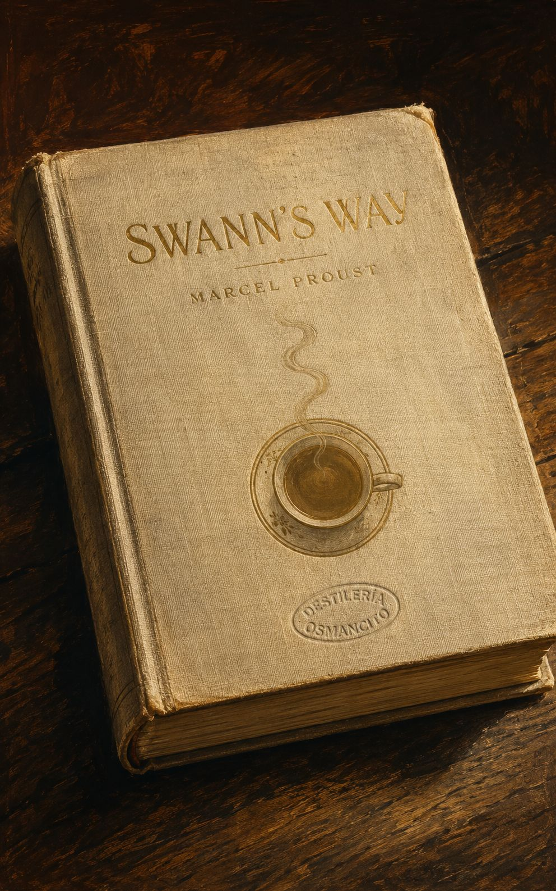
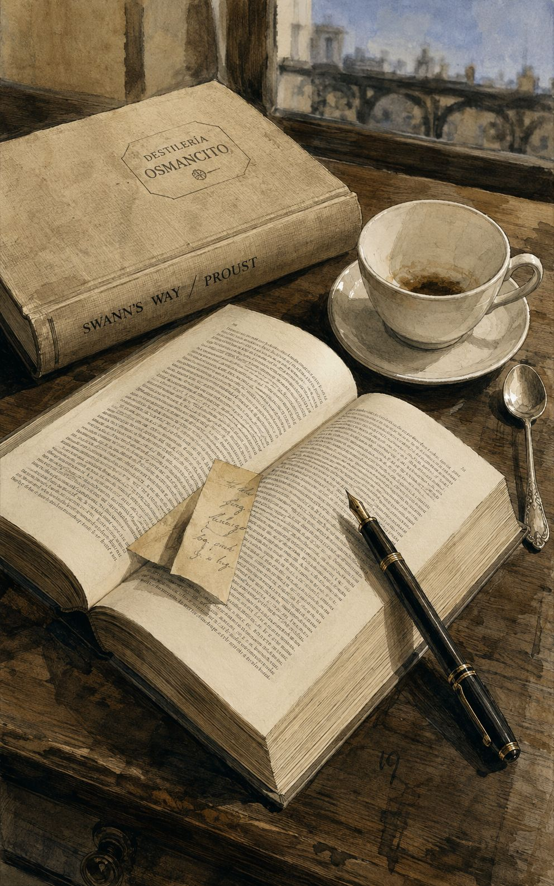
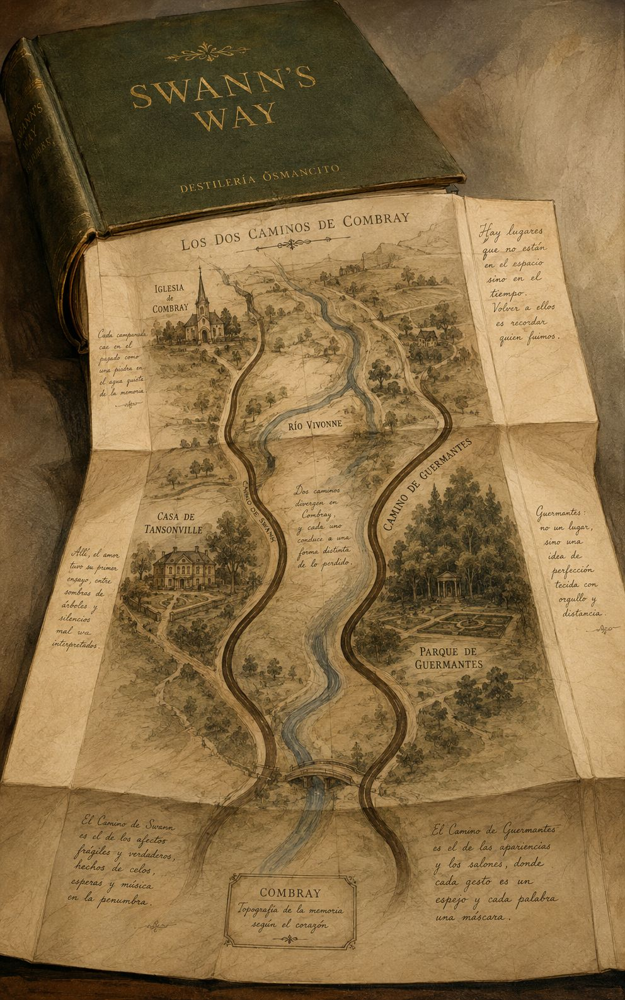
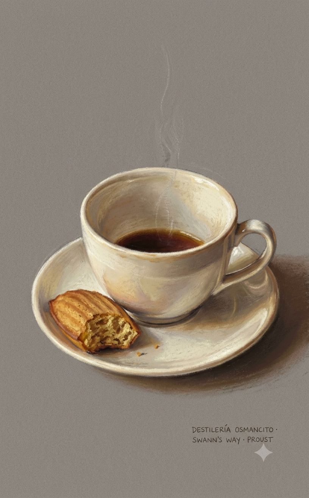
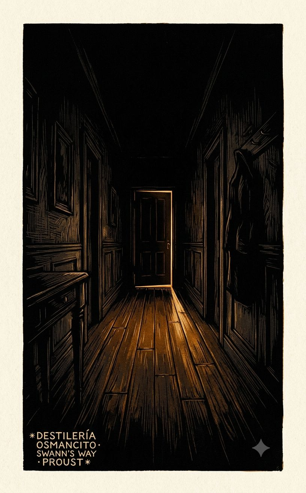
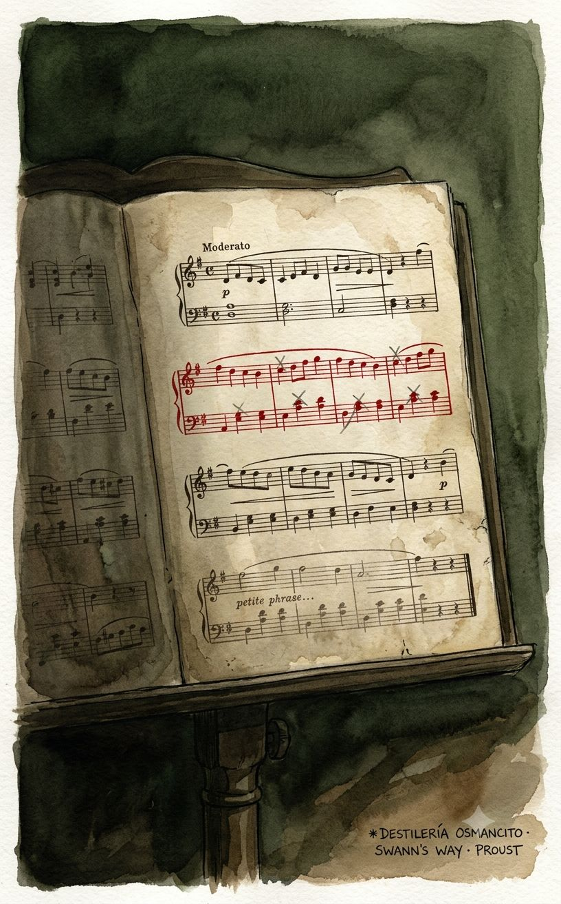
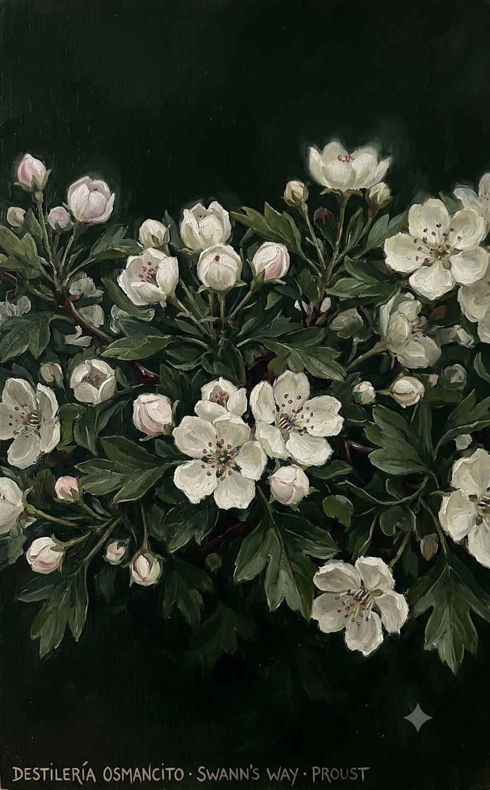

Lo primero que produce este corpus antes de ser pensado es peso. Un peso específico: el de la conciencia que no puede soltar nada. No es heaviness como carga —es heaviness como densidad, como una sustancia que se niega a evaporarse. El corpus huele a habitaciones cerradas en pleno verano, a té en infusión demasiado tiempo, a papel de libros leídos en la infancia que guardaron el calor de los dedos. Su temperatura es interior y constante, ni fría ni caliente: la temperatura exacta del recuerdo que acaba de activarse.
El ritmo es el más extraño de todo. No avanza: envuelve. Las frases rodean su objeto —una magdalena, un rostro, una nota musical— y no lo sueltan hasta haberlo agotado. Hay algo obsesivo sin ser ansioso, algo que se parece más a la meditación que a la persecución. El corpus ofrece una resistencia suave: no empuja, espera. Es un objeto poroso. Todo lo que uno le lleva —un olor, una estación, una luz de tarde— penetra y queda.
La tensión irresuelta es la que existe entre el momento vivido y el momento recordado, y la certeza de que nunca coinciden. El corpus no lo llora: lo estudia. Eso es lo que lo hace tan peculiar —su frialdad analítica ante lo más ardiente. El tiempo no se lamenta aquí: se disecciona con una lupa de cristal muy fino, sostenida por una mano que tiembla ligeramente.
Paleta que emerge de esta atmósfera y que será coherente en todos los prompts: ámbar oscuro, marfil viejo, azul de acuarela muy aguado, verde musgoso apagado, sombra sepia. Ningún blanco puro. Ningún negro absoluto.







La palabra más frecuente con contenido en este corpus no es amor ni tiempo aunque el corpus habla de ambos sin descanso: es momento. Eso lo dice todo. Proust no escribe sobre el pasado —escribe sobre el instante en que el pasado regresa sin ser llamado, y la conciencia que intenta detenerlo para examinarlo antes de que se vaya. El descubrimiento que no se esperaba es que la novela más famosa sobre la memoria es, página a página, una novela sobre la imposibilidad de recordar con exactitud — y que esa imposibilidad es lo que la impulsa y lo que la hace hermosa.
Un volumen que pesa más de lo que anuncia: como si entre sus páginas hubiera algo que no es papel.
Hay corpus que argumentan. Este espira. No presenta su materia —la segrega lentamente, como una sustancia que no sabe ser otra cosa que lo que es. Nombrarlo novela es correcto y es insuficiente: es también un sistema nervioso desplegado sobre el papel, un método de percepción disfrazado de ficción, una meditación que se ha puesto a sí misma personajes para no tener que confesar que es filosofía. Lo que el corpus dice puede resumirse. Lo que el corpus es no.
Título — Swann’s Way (Du côté de chez Swann)
Autor — Marcel Proust
Año — 1913
Género — Novela (primer volumen de À la recherche du temps perdu, obra en siete volúmenes)
Extensión estimada — 188,019 palabras · 752 páginas aprox. · 3 partes («Combray», «Swann in Love», «Place-Names: The Name»)
Idioma original — Francés
Palabra más frecuente con contenido — moment (227 ocurrencias). El corpus declara ser sobre el tiempo y la memoria —y lo es. Pero la unidad que lo obsesiona no es el tiempo como extensión sino el instante como punto de ruptura: el momento en que algo se quiebra, en que algo regresa, en que algo se pierde por segunda vez. La palabra confirma y precisa.
Un narrador adulto e insomne recorre en la memoria tres territorios: la infancia en Combray con su geografía de rituales domésticos y sus dos caminos hacia el mundo; el amor de Charles Swann por Odette de Crécy, rastreado en su ascenso, su cima de celos y su degradación final hasta la desolación; y los primeros destellos del deseo en el París de la adolescencia, centrados en Gilberte Swann. Los tres territorios están unidos por una sola pregunta que el narrador no formula directamente pero que lo mueve todo: ¿puede recuperarse lo vivido, o toda recuperación es ya otra pérdida?
El Narrador — voz sin nombre, niño y adulto simultáneamente; observador cuya sensibilidad es el instrumento y el sujeto del libro.
Charles Swann — dandy culto, frecuentador de la alta sociedad, que se destruye amando a una mujer que no es su tipo; figura cuyo arco anticipa y espeja el del narrador.
Odette de Crécy — mujer de origen oscuro, ambigua y huidiza, objeto del amor de Swann; su elusividad es estructural, no accidental.
La abuela — encarna los valores del corpus: autenticidad, profundidad, desprecio por lo superficial.
Françoise — sirvienta de la familia del narrador; su código moral arcaico e implacable opera como contrapunto cómico y filosófico a lo largo del texto.
Tía Léonie — inválida voluntaria en Combray, cuya habitación es el centro inerte del mundo de la infancia; su régimen de rumores y tisanas organiza el tiempo del narrador niño.
M. Vinteuil — compositor de provincia cuya pequeña frase musical se convierte en el «himno nacional» del amor de Swann; aparece apenas como personaje pero su obra estructura el volumen.
Mme Verdurin — anfitriona del «pequeño clan», tiránica y gregaria; arbitra quién pertenece al mundo y quién queda fuera.
Gilberte — hija de Swann, primer objeto del deseo adolescente del narrador; su nombre es el primer nombre propio que el narrador recibe como una revelación.
Combray. El narrador adulto, tendido en la oscuridad, convoca la memoria de su infancia en Combray. Las noches de entonces eran dominadas por la espera del beso de buenas noches de su madre —un rito que podía ser negado, y cuya negación inauguraba una forma de angustia que el libro nunca cierra del todo. El mundo giraba en torno a la casa de la tía Léonie, a los dos caminos para salir del pueblo —el Camino de Swann hacia Tansonville y la llanura, el Camino de Guermantes hacia el río y la aristocracia— y a una serie de figuras que el narrador observa con la precisión que pronto dedicará a todo: Françoise, Legrandin el esnob que finge no serlo, el vecino Vinteuil y su hija, los propios Swann que encarnan el mundo que existe más allá de Combray. La madeleine mojada en el té —convocada tardíamente en el volumen, pero gravitando sobre todo— produce la recuperación involuntaria de este mundo: no el recuerdo voluntario y pálido, sino la resurrección plena, con olor y temperatura. Es el primer momento en que el corpus anuncia su tema real.
Swann enamorado. La sección central narra en tercera persona, como si fuera otra novela insertada, el amor de Charles Swann por Odette de Crécy. Swann la conoce en el salón de los Verdurin —un clan burgués que practica la exclusión bajo la apariencia del calor— y al principio Odette no le interesa: no es su tipo. Pero la costumbre y una comparación fortuita con una figura de Botticelli transforman la indiferencia en obsesión. La pequeña frase del cuarteto de Vinteuil se convierte en el marcador sonoro de su amor. La relación se convierte en los celos: Swann vigila, interroga, interpreta cada gesto de Odette, descifra cartas a través del sobre, espía ventanas. Los celos no son accidentales —son el mecanismo por el que Swann accede a Odette como objeto de conocimiento, ya que nunca puede acceder a ella como persona. El amor termina no con una ruptura sino con un vaciamiento: Swann se despierta una mañana sin dolor, recuerda el rostro delgado y fatigado de Odette que amó, y pronuncia la frase que cierra la sección: se dice que desperdició años de su vida, que deseó morir, que amó con su mayor amor a una mujer que no era su tipo. El conocimiento llega demasiado tarde para servir de algo.
Nombres de lugares: el nombre. El narrador adolescente en París, sometido a la prohibición médica de viajar, proyecta el mundo sobre los nombres propios: Balbec, Florencia, Venecia existen para él como sustancias puramente nominales, cargadas de promesas que la realidad solo podrá defraudar. En los Campos Elíseos conoce a Gilberte Swann —hija del Swann del volumen anterior, ahora casado con Odette— y se enamora de ella con la misma mecánica que su padre aplicó a su madre: la costumbre, la espera, el dolor de la ausencia, la interpretación obsesiva de señales. El volumen cierra con una caminata por el Bois de Boulogne en otoño tardío, donde el narrador adulto busca el mundo de Mme Swann que recordaba de su infancia y no lo encuentra: el lugar existe pero la capa de memoria que lo hacía real ha desaparecido. El corpus termina en esa comprobación: los lugares no son el espacio sino el tiempo que les dimos, y ese tiempo no se repite.
Este corpus produce, antes de ser pensado, la sensación de estar dentro de una conciencia que se observa a sí misma observar. No hay distancia entre el instrumento y el objeto: la misma mente que percibe el mundo es el mundo que se percibe. Lo que pesa es eso —no la historia, que es mínima, sino la densidad de atención con que cada detalle es sostenido hasta que entrega todo lo que tiene. Produce algo parecido a la quietud: no el reposo, sino la inmovilidad de quien está completamente presente en lo que hace. Y produce, en la segunda lectura de cualquier página, la certeza de que la primera lectura ya había perdido algo.
Posesión e inaprehensibilidad. El corpus trabaja sin descanso la imposibilidad de poseer aquello que se ama —persona, lugar, momento, sensación. Swann no puede poseer a Odette; el narrador no puede poseer a Gilberte; la memoria voluntaria no puede poseer el pasado. Pero la memoria involuntaria tampoco posee: revela y escapa. Lo que el corpus estudia no es la pérdida sino la estructura de lo inaprehensible.
La persona real y la persona imaginada. Cada figura del corpus existe dos veces: como objeto de la percepción directa y como construcción de quien la desea o teme. Las dos versiones nunca coinciden. Swann ama a una Odette que Odette no es; el narrador ama a una Gilberte que Gilberte no conoce; Combray real y Combray recordada son lugares distintos que comparten un nombre. El corpus no lamenta esta escisión —la considera la condición normal de la conciencia.
El tiempo como destrucción y como salvación. El tiempo destruye todo lo que el corpus ama: las tardes de Combray, el amor de Swann, la Mme Swann del Bois. Pero el tiempo —en su forma involuntaria, en el instante del reconocimiento— es también el único mecanismo por el que algo puede recuperarse. No se resuelve esta tensión. Se habita.
Mapa de Hechos
Este corpus corresponde a Combray — la primera sección de Du côté de chez Swann (1913), tomo inaugural de À la recherche du temps perdu de Marcel Proust. El texto tal como llega aquí abarca únicamente las partes I y II de “Combray”; no incluye “Un amour de Swann” ni “Noms de pays: le nom”, que en la edición completa del volumen siguen a este bloque.
Parte I — Los despertares y la memoria involuntaria. El narrador adulto, sin nombre propio dado en este corpus, abre con una reflexión sobre las noches en que se acostaba temprano y el estado de duermevela en que su identidad se disolvía en el objeto que acababa de leer. Describe cómo, al despertar en la oscuridad, no reconocía de inmediato ni el cuarto ni el momento de su vida en que se hallaba: su memoria reconstruía sucesivamente los distintos dormitorios que había habitado —Combray, Balbec, París, Tansonville, Venecia— antes de que la razón fijara el presente. De esa inestabilidad nace el primer gran recuerdo nombrado de la infancia en Combray: el drama del beso de las buenas noches. Cuando había visita —sobre todo la de M. Swann, vecino y amigo de la familia—, al niño no se le permitía subir a que su madre lo besara en su cuarto; debía conformarse con un beso apresurado en el comedor. Una noche, torturado por la angustia de la ausencia de ese beso, decide desobedecer: espera en la escalera a que Swann se retire y luego intercepta a su madre. Contra lo esperado, el padre —normalmente indiferente a estas sutilezas— decide, movido por una piedad práctica más que por debilidad, que la madre pase la noche en el cuarto del niño. La madre cede, pero el narrador comprenderá después que aquella victoria fue en realidad la primera claudicación del mundo adulto ante su nerviosismo, el inicio de un declive que marcará su carácter.
De este episodio del beso, el narrador salta a una reflexión sobre el olvido: durante años, todo Combray se había reducido en su memoria a esa escena y a un teatro de linterna mágica que proyectaba en su cuarto la leyenda de Golo y Genoveva de Brabante, hasta que un día de invierno, ya adulto, su madre le ofrece té con una magdalena. El sabor de la magdalena mojada en tila desencadena la resurrección completa e involuntaria de Combray: la casa, la calle, la plaza, el jardín, la iglesia y sus alrededores emergen de la taza de té como las flores de papel japonesas que se despliegan en el agua. Este mecanismo —la memoria involuntaria activada por una sensación física repetida, no por el esfuerzo voluntario del recuerdo— es el eje que sostiene y legitima todo el resto del relato: lo que sigue no es autobiografía deliberada sino lo que el sabor liberó.
Parte II — El mundo recobrado de Combray. A partir de la magdalena, el texto despliega, en presente reconstruido, la topografía humana y física de Combray. La casa de la tía abuela (llamada aquí simplemente “grand’tante”), en la rue Saint-Esprit, alberga a la tía Léonie, viuda del tío Octave, que desde su enfermedad —mezcla de hipocondría, devoción y verdadera debilidad— no ha vuelto a bajar de su habitación y vive postrada, hablando sola, vigilando desde su ventana la vida de la calle y comentándola con su criada Françoise. Françoise es la sirvienta de la casa: cocinera de talento y devoción absolutas hacia sus amos, pero de una dureza feroz e implacable hacia el personal subalterno y hacia la fregona embarazada de la casa, a quien atormenta por celos y prejuicio, en un episodio que el narrador usa para exhibir la coexistencia, en un mismo carácter, de virtud doméstica y crueldad moral. Eulalie, antigua sirvienta devota, visita semanalmente a la tía Léonie y recibe de ella una limosna regular; entre ambas se teje una relación de dependencia afectiva y manipulación mutua que enfrenta veladamente a Eulalie con Françoise por el favor de la enferma.
El personaje central de la vida social de Combray, en esta parte, es Charles Swann: hijo de un agente de bolsa amigo del abuelo del narrador, hombre de gran refinamiento, introducido en los círculos más altos de la aristocracia parisina (se menciona su trato con el conde de Paris y el príncipe de Gales), pero cuya posición mundana verdadera la familia del narrador ignora por completo, tratándolo simplemente como “el hijo de Swann”, el vecino de buena posición pero modesto. Esta ironía —la distancia entre lo que Swann es en realidad en el mundo y lo que la familia del narrador cree que es— se revela solo progresivamente al lector. Swann visita la casa casi cada noche, pero la familia no lo recibe cuando está “casado”, pues ha hecho un matrimonio considerado inconveniente con una mujer de reputación dudosa (Odette de Crécy, no nombrada aún en este corpus, aludida como “una mujer de vida escandalosa” y, en un fragmento aparte que se revela como una escena futura vivida en secreto por el narrador adolescente, como “la dame en rose”, vista en la casa del tío Adolphe). El narrador adulto adelanta aquí, en digresión, un episodio posterior en el que, siendo niño, visitó al tío abuelo Adolphe y conoció sin saberlo a esa misma “dama de rosa”, de quien luego se entera que es Odette; ese encuentro provocó una ruptura entre el tío Adolphe y el resto de la familia. Se menciona también, de pasada, a un misterioso “monsieur de Charlus”, cuya relación con la dama causa comentarios veriados de la madre del narrador, sembrando una intriga que el corpus no resuelve.
Otros personajes de Combray desfilan por esta sección: Legrandin, ingeniero y hombre de letras, vecino que cultiva una imagen de desdén aristocrático y snobismo disimulado, y cuya doblez —afecto declarado hacia la familia del narrador combinado con vergüenza social de ser visto con ellos ante gente de más mundo— se convierte en objeto de análisis moral extenso; el cura del pueblo, erudito local obsesionado con la etimología de los nombres de las calles y con la historia del campanario de la iglesia de Saint-Hilaire, cuya aguja domina la ciudad y es descrita como el emblema mismo de Combray; Bloch, compañero de estudios del narrador, de familia judía, admirado por su desparpajo literario y su desprecio de las convenciones, que introduce al narrador en la lectura de Bergotte, escritor por el que el joven narrador siente una devoción casi religiosa; y Vinteuil, viejo profesor de música retirado, vecino tímido y bondadoso, avergonzado en público por la conducta de su hija, de quien se sugiere —en una escena de fuerte intensidad moral, observada por el narrador a través de una ventana en Montjouvain tras la muerte de Vinteuil— una relación con una amiga marcada por gestos de profanación deliberada hacia la memoria del padre muerto; esta escena funciona como el primer contacto explícito del narrador con la crueldad y la sexualidad ajenas, y anticipa temas que reaparecerán en el resto de la Recherche.
La vida cotidiana de Combray se organiza alrededor de dos itinerarios de paseo, presentados como opuestos y mutuamente excluyentes: el “côté de Méséglise” (o “côté de chez Swann”, porque el camino pasa junto a la finca de Swann, Tansonville) y el “côté de Guermantes”. El primero es el paisaje de los espinos blancos y rosados (aubépines) en flor, de los campos abiertos, de la vista fugaz —memorable para el narrador— de una niña pelirroja entrevista en el seto del parque de Swann, que resultará ser Gilberte, hija de Swann y Odette, y a quien el narrador ve también, de lejos, en compañía de una dama vestida de blanco (que el narrador identifica como Mme. Swann) y de un caballero que supone, sin poder confirmarlo con certeza, es el barón de Charlus. El segundo camino, el de Guermantes, sigue el curso del río Vivonne, con sus nenúfares (nymphéas), y culmina en la evocación del nombre de Guermantes, asociado desde la infancia del narrador a una nobleza casi legendaria y a la duquesa de Guermantes, figura de fascinación imaginaria antes que persona real conocida. Estos dos caminos, presentados como incompatibles en la infancia (“no se podía tomar el mismo día el camino de Méséglise y el de Guermantes”), se revelarán mucho más tarde —en un adelanto que el propio texto ya insinúa al final— como convergentes: los descendientes de Swann y de los Guermantes acabarán unidos, deshaciendo la separación que parecía absoluta.
El corpus cierra con un regreso a la reflexión sobre la memoria: el narrador describe cómo esos dos paisajes de la infancia —Méséglise y Guermantes— quedaron fundidos en su interior con impresiones posteriores, dándoles profundidad y significado propios, y advierte que buena parte de sus errores y desilusiones futuras en el amor provendrán precisamente de confundir el deseo de una persona con el deseo de recuperar un paisaje asociado a ella. La sección termina, en paralelo a su apertura, con otra descripción del despertar nocturno: el narrador, ya reorientado en su habitación real, ve cómo la claridad del alba desplaza pieza a pieza el decorado de habitaciones recordadas que había reconstruido en la oscuridad — cierre que replica, en clave de amanecer, la escena de duermevela con que había comenzado el relato, y que deja pendiente, sin narrar todavía, el “amor que Swann tuvo antes de mi nacimiento” que el propio texto anuncia como el asunto que sigue.
Charles Swann, hombre de mundo, esteta ocioso, íntimo de duquesas y aristócratas del faubourg Saint-Germain, frecuenta por gusto —no por necesidad social— el salón burgués de los Verdurin. Es Odette de Crécy, mujer de posición equívoca, casi del “demi-monde”, quien lo introduce allí, pidiéndoselo a Mme Verdurin como un favor personal. Swann acepta sin calcular consecuencias: para él, el “petit clan” de los Verdurin es un divertimento sin peso, un peldaño más entre los muchos mundos que su curiosidad amorosa le ha hecho recorrer.
El salón tiene sus leyes propias, dictadas por Mme y M. Verdurin: fidelidad absoluta al “petit noyau”, desprecio ritual por quienes no pertenecen a él, expulsión silenciosa de todo “fiel” que muestre curiosidad por otros salones. Entre los habituales están el doctor Cottard, torpe y ávido de fórmulas ingeniosas que nunca comprende del todo; su esposa, Mme Cottard; un joven pianista y su tía; un pintor al que llaman “M. Biche” (figura que reaparecerá, transformada, como Elstir); y Saniette, antiguo archivista, blanco constante de las burlas del clan, protegido apenas por su ingenuidad.
En una de esas veladas, el pianista interpreta una sonata de un compositor llamado Vinteuil. Dentro de ella hay un fragmento breve —“la petite phrase”— que Swann, sin buscarlo, queda prendado de escuchar. No sabe todavía que esa frase musical va a convertirse en el emblema secreto de lo que está a punto de vivir. Esa misma noche, o poco después, Odette y Swann quedan a solas en un coche; ella arregla las flores de cateleyas prendidas en su corpiño, y ese gesto —“faire catleya”— se transforma en el eufemismo que la pareja adoptará en adelante para nombrar el acto amoroso. Es el origen físico de la relación: nace de un pretexto floral, no de una declaración.
A partir de ahí, Swann empieza a organizar su vida en torno a los horarios y caprichos de Odette. No la ama todavía en el sentido pleno —al comienzo la encuentra, incluso, de una belleza que no es exactamente la suya, “no es mi género”, llega a decirse—, pero la petite phrase de Vinteuil, escuchada de nuevo, actúa como catalizador: le da forma, le da nombre y estatuto artístico a un sentimiento que sin ella habría permanecido difuso. Swann empieza a esperarla, a inquietarse cuando ella tarda, a presentarse sin avisar en su casa por las noches, cada vez con más urgencia y menos dignidad. La necesidad de verla se independiza del placer de verla.
Los Verdurin, mientras tanto, cultivan la relación con interés propio: mientras Swann sea “de los suyos” y no intente sustraer a Odette del clan, lo toleran; en el momento en que perciben que Swann pertenece también a un mundo aristocrático al que ellos no tienen acceso —y que podría, algún día, preferir ese mundo al de ellos, o llevarse a Odette fuera de su órbita— empieza el trabajo lento de desgaste. La ocasión se la da la llegada de un nuevo fiel: el conde de Forcheville, cuñado de Saniette, hombre vulgar pero de título auténtico, a quien Mme Verdurin decide favorecer precisamente para incomodar a Swann, cuya condescendencia distraída hacia el salón la irrita. Durante una cena, Forcheville humilla abiertamente a Saniette con una crueldad que los Verdurin celebran; Swann, que hasta entonces se mantenía por encima de esas pequeñas violencias del clan, empieza a sentir que su lugar allí ya no es incuestionable.
El deterioro avanza en dos frentes simultáneos: el social —los Verdurin comienzan a organizar salidas y cenas de las que excluyen a Swann con pretextos cada vez más transparentes, favoreciendo abiertamente a Forcheville— y el íntimo —Odette empieza a tener ausencias que no explica, citas que aplaza, coartadas que no coinciden. La escena que cristaliza la sospecha ocurre una noche en que Swann, tras no encontrar a Odette donde esperaba, recorre París buscándola de café en café, y termina golpeando la persiana iluminada de una ventana que cree suya, para descubrir que se ha equivocado de casa: la humillación no depende ya de una infidelidad comprobada, sino de la disposición misma a rebajarse a espiar.
La jalousie de Swann, una vez despierta, no vuelve a dormirse. Interroga a Odette con una mezcla de ternura y crueldad; ella miente, se contradice, cede fragmentos de verdad solo cuando se siente acorralada, y esas concesiones parciales —confesiones de “una vez, hace tiempo”, de tendencias hacia otras mujeres, de un pasado que ella minimiza— no calman a Swann sino que multiplican en su imaginación las posibilidades no confesadas. Recibe una carta anónima que acusa a Odette de haber sido amante de un número incontable de hombres —entre ellos, explícitamente, Forcheville, M. de Bréauté y el pintor del clan— y de frecuentar casas de citas. Swann, incapaz de identificar al autor, termina sospechando sucesivamente de casi todos sus conocidos —el barón de Charlus, el príncipe des Laumes, M. d’Orsan, sus propios criados, hasta el abuelo del narrador— sin llegar a ninguna certeza: la carta no resuelve nada, solo confirma que en su círculo hay alguien capaz de esa bajeza, y esa certeza abstracta basta para envenenarlo todo.
El barón de Charlus, amigo íntimo de Swann, cumple un papel ambiguo en esta fase: le sirve de confidente, y en más de una ocasión acepta —a pedido del propio Swann— acompañar o vigilar a Odette en su nombre, ir a buscarla, reportarle sus movimientos. Es un gesto de la degradación de Swann: delega en otro la vigilancia que él mismo no puede sostener con dignidad, y expone ante un tercero el mecanismo íntimo de su celos.
El episodio que marca el punto más alto de la angustia de Swann ocurre en la velada de Mme de Saint-Euverte, una fiesta aristocrática a la que Swann asiste ya distanciado del amor que siente, casi como espectador de sí mismo. Allí, inesperadamente, vuelve a escuchar la petite phrase de la sonata de Vinteuil, interpretada en ese contexto mundano y ajeno a Odette. La frase, que antes anunciaba y acompañaba la dicha naciente, ahora le devuelve —con la misma exactitud, con la misma forma— el recuerdo de un amor que él sabe ya condenado; la música no ha cambiado, pero lo que en un principio ratificaba una promesa, ahora certifica una pérdida. En esa misma velada, o inmediatamente antes, Swann le presenta al general de Froberville a Mme de Cambremer, encuentro social sin relevancia aparente en el momento, pero que el narrador anticipa como una de esas “primeras apariciones” que solo cobran sentido —de advertencia, de presagio— mucho después.
La relación entre Swann y Odette entra en una fase de agonía prolongada: rupturas verbales que no se sostienen, reconciliaciones motivadas por el miedo mutuo a la pérdida más que por el afecto, escenas de reproche en las que Swann llega a decirle a Odette cosas que él mismo sabe indignas de él. Forcheville, mientras tanto, se instala cada vez más firmemente en el lugar que Swann va dejando vacante dentro del “petit clan”; Odette empieza a hablar de sus planes con Forcheville —un viaje a Egipto en Pentecostés, mencionado casi al desgaite— con una naturalidad que a Swann le revela, sin necesidad de confesión explícita, que ya no ocupa el centro de la vida de Odette, si es que alguna vez lo ocupó.
El relato culmina, no en una ruptura escenificada, sino en un despertar. Swann sueña —en una escena onírica extensa, poblada de figuras deformadas del propio drama que vive despierto: un joven a medio camino entre él mismo y Napoleón III, el pintor del clan, Odette, su propio incendio y su propio ahogo— y al despertar, mientras se prepara para viajar a Combray (noticia de que Mme de Cambremer, antes Mlle Legrandin, pasará allí unos días, es lo que lo decide a partir), revive con extraña nitidez el recuerdo físico de la Odette de los primeros tiempos —su tez pálida, sus mejillas demasiado flacas, su rostro cansado— tal como era antes de que el hábito y la ternura sucesiva la hubieran borrado bajo capas de memoria. Y en ese instante de lucidez fría, casi cruel, se dice a sí mismo, resumiendo años de padecimiento: que ha desperdiciado años de su vida, que ha querido morir, que ha vivido su amor más grande, por una mujer que no le gustaba, que “no era su género”. Con esa frase —que cierra el relato— termina la parte que narra el amor de Swann por Odette; el desenlace social de esa historia (el matrimonio de ambos, la posición de su hija Gilberte) queda fuera de este corpus y solo se anuncia, indirectamente, en la mención de que la “gran relación de Swann” comenzó hacia la época del nacimiento del narrador.
Charles Swann — esteta refinado, amante de las mujeres y del arte, protagonista cuyo amor por Odette lo despoja progresivamente de su distancia mundana.
Odette de Crécy — mujer de posición social ambigua, objeto y motor del amor de Swann; su relación con él se construye sobre equívocos, ausencias y verdades parciales.
M. y Mme Verdurin — anfitriones del “petit clan”; su lealtad es condicional y termina volviéndose contra Swann en favor de Forcheville.
Doctor y Mme Cottard — habituales del salón Verdurin, figuras de comedia social.
El pianista y su tía — miembros del clan; el pianista interpreta la sonata de Vinteuil que revela la petite phrase.
El pintor (“M. Biche”) — habitual del salón, mencionado en la carta anónima como posible amante de Odette.
Saniette — antiguo fiel de los Verdurin, humillado públicamente por Forcheville; cuñado de este.
Conde de Forcheville — aristócrata favorecido por los Verdurin en detrimento de Swann; rival progresivo por el afecto de Odette.
Barón de Charlus — amigo íntimo y confidente de Swann; llega a vigilar a Odette por encargo de él.
Mme de Saint-Euverte — anfitriona de la velada aristocrática donde Swann vuelve a escuchar la petite phrase en un contexto ya de desamor.
Vinteuil — compositor de la sonata cuya “petite phrase” acompaña y marca las etapas del amor de Swann, del nacimiento a la agonía.
El narrador (niño, voz en primera persona ocasional) — nieto del amigo de Swann; interviene brevemente para situar la historia en el tiempo de su propia familia.
Mme de Cambremer (Mlle Legrandin) — mencionada al cierre; su presencia futura en Combray decide el viaje de Swann que cierra el relato.
El corpus que llega en este archivo no es la novela entera ni siquiera el volumen entero: es su tercera y última parte, la que cierra Du côté de chez Swann. No hay división interna en capítulos ni numerales — es un solo bloque continuo de prosa, un movimiento sin corte. Dos arcos lo atraviesan y se entrelazan sin costura visible: el de los nombres de ciudades que el narrador ama antes de conocerlas, y el de su amor infantil por Gilberte Swann. Ambos comparten una misma estructura profunda — desear algo desde su nombre, antes o en ausencia del objeto — y ambos terminan en el mismo lugar: una decepción retrospectiva, contada desde un “ahora” narrativo situado años después.
El narrador, insomne, compara los cuartos que evoca por las noches. Ninguno se parece tanto a los de Combray como el del Grand-Hôtel de Balbec — un hotel que aún no ha visitado. Balbec existe para él sólo como palabra, recogida de la boca de Legrandin, quien lo describió como una playa fúnebre, el “fin de la tierra francesa”, poblada por pescadores inmemoriales. Cuando el narrador interrogó a M. Swann sobre esa misma playa, Swann respondió con otro dato: que la iglesia de Balbec, mitad románica, es un ejemplar curioso del gótico normando, “casi persa”. Esas dos versiones —la de Legrandin, geológica y primitiva; la de Swann, arquitectónica y erudita— se funden en la imaginación del niño en una sola imagen imposible: pescadores medievales al pie de un campanario de estilo persa, bajo tormentas eternas.
Ese deseo de Balbec se vuelve físico: el narrador sueña con tomar el tren de la una y veintidós, que pasa por Bayeux, Coutances, Vitré, Questambert, Pontorson, Lannion, Lamballe, Bénodet, Pont-Aven, Quimperlé — nombres que enumera y saborea uno por uno, incapaz de sacrificar ninguno en su fantasía. Pero antes de que ese viaje llegue a concretarse, sus padres deciden en su lugar unas vacaciones de Pascua en el norte de Italia: Florencia y Venecia. El deseo de tormenta atlántica es sustituido, sin transición emocional real, por el deseo de primavera florentina — el narrador observa en sí mismo ese “cambio de frente” del deseo, comparándolo a una modulación musical.
Desde entonces los tres nombres —Balbec, Florencia, Venecia— funcionan como llaves: basta pronunciarlos para invocar, fuera de estación, el clima emocional que les corresponde. El nombre de Parma se vuelve compacto, liso, malva. El de Florencia, una corola perfumada por ser “la ciudad de los lirios” junto a Santa María de las Flores. El de Balbec, una vieja cerámica normanda que conserva el color de la tierra de donde fue sacada. El narrador explicita el mecanismo: los nombres no son vastos, sólo caben en ellos dos o tres rasgos, y esa misma pobreza de contenido es lo que les da su poder de fascinación — cuanto menos completos, más se prestan a la proyección total del deseo.
El padre fija la fecha: quince días en Venecia (del 20 al 29 de abril) y llegada a Florencia el día de Pascua. Los dos viajes dejan de ser fantasías simultáneas y posibles para convertirse en acontecimientos reales, anclados a un calendario concreto — la semana en que la lavandera debía devolver un chaleco manchado de tinta. El narrador llega a un grado de éxtasis anticipatorio tan intenso —imaginándose ya respirando “aire veneciano”— que enferma: fiebre alta, dolor de garganta. El médico prohíbe categóricamente el viaje a Florencia y Venecia, y además prohíbe, por al menos un año, cualquier proyecto de viaje o causa de agitación. Como consecuencia directa de esa prohibición médica, también le prohíbe ir al teatro a ver a la Berma, la actriz que Bergotte admiraba.
Privado de viajes y de teatro, el narrador queda condenado a un sustituto menor: paseos diarios por los Champs-Élysées, bajo la vigilancia de Françoise, quien ha entrado al servicio de la familia tras la muerte de la tía Léonie. Es en ese jardín público, que al principio le resulta insoportable por no coincidir con ninguna fantasía literaria, donde ocurre el segundo gran acontecimiento del corpus.
Un día, mientras juega cerca de los caballitos de madera, el narrador oye a una niña gritarle a otra: “Adieu, Gilberte, je rentre.” Ese nombre —Gilberte— lo atraviesa como un objeto físico, cargado de toda una vida ajena e inaccesible: visitas, intimidades, una tarde entera que él no podrá compartir. Es la primera aparición de Gilberte Swann, la hija de Charles Swann y de Odette (ahora Mme Swann), en el texto.
Al día siguiente Gilberte no aparece; en los siguientes sí, y el narrador empieza a merodear cerca de su grupo hasta que, faltando jugadores para una partida de “barres” (un juego de persecución), ella misma lo invita a completar el equipo. Desde entonces juega con ella cada vez que coincide en el jardín — lo cual no es todos los días: cursos, catecismo, meriendas, visitas con su madre, o simplemente el mal tiempo (que su institutriz teme para sí misma) la mantienen ausente con frecuencia impredecible. Esa irregularidad convierte cada día soleado en una apuesta ansiosa: el narrador interroga el cielo desde la mañana, deduce presagios de la vecina que se pone el sombrero, negocia con su madre la posibilidad de salir.
Entre los episodios narrados de este período:
El día de la nieve. Los Champs-Élysées quedan cubiertos de nieve, el Sena se congela junto al puente de la Concorde. El narrador cree que Gilberte no vendrá — y sin embargo aparece, corriendo, con gorro de piel, deslizándose sobre el hielo con los brazos abiertos. Al ser el único niño presente ese día, el narrador siente ese aislamiento compartido como un principio de intimidad; ella le arroja bolas de nieve en el cuello y luego lo llama a su equipo para la partida de barres.
La vieja dama de los Débats. Una anciana asiste cada día al jardín, siempre con la misma toilette oscura, leyendo “sus viejos Débats” (el periódico Journal des Débats), tratando con familiaridad afectada al guardia y a la que alquila las sillas. Gilberte la saluda cada día y le pregunta por su nieta (“su amor de madre”); el narrador, deseoso de cualquier vínculo indirecto con la vida de Gilberte, llega a inventarle a sus padres una identidad noble (embajadora, alteza) — hasta que su madre revela, con desprecio, que se trata de una tal Mme Blatin, viuda de un alguacil, mujer vulgar que persigue relaciones sociales.
Las bolitas de ágata. En un puesto de golosinas donde M. Swann compra pan de especias (por su eczema y estreñimiento), Gilberte le muestra al narrador a dos niños peleándose por preferencias de color y sabor. Él compra dos canicas de agata por cincuenta céntimos cada una; Gilberte, que dispone de más dinero, le pregunta cuál encuentra más bella; él escoge una del color de los ojos de ella; Gilberte la compra y se la regala como recuerdo.
El folleto de Bergotte sobre Racine. El narrador le pide a Gilberte, por telegrama, un folleto raro de Bergotte sobre Racine que ella posee. Al día siguiente ella se lo trae envuelto y sellado con lacre blanco y cintas malva, mostrándole el propio telegrama que él le había enviado, ahora transfigurado —por haber pasado por manos de un telegrafista, un conserje, un criado— en un objeto sagrado. El narrador guarda ese folleto junto a la canica de ágata como reliquias de su amor, hasta darse cuenta, en un momento de lucidez, de que ni el libro ni la piedra fueron creados por causa de Gilberte ni le dicen nada sobre su afecto real.
El tuteo del nombre. Gilberte le propone que la llame por su nombre de pila y anuncia que ella hará lo mismo con él. La escena de la pronunciación de su nombre en boca de ella queda descrita como una desnudez, un despojo de las capas sociales que ese nombre lleva en boca de otros.
El desengaño del “gran día”. Un día en que el narrador cuenta con hablar largamente con Gilberte, ella llega y anuncia de inmediato una cadena de compromisos futuros —una merienda, la llegada del rey Teodosio, una función de Michel Strogoff, quizá un viaje al mediodía por las vacaciones de Año Nuevo— que la alejarán de los Champs-Élysées por muchos días. El narrador vuelve a casa desolado, ahogando sollozos, y esa misma noche se inventa mentalmente la carta de amor que querría recibir de ella — para descubrir, con espanto, que al haberla compuesto él mismo, no podría nunca experimentarla como algo real y ajeno a su propia voluntad, ni siquiera si por coincidencia Gilberte llegara a escribirle esas mismas palabras.
Sobre esta base, el narrador desarrolla una reflexión extensa —no un hecho puntual sino un proceso continuo— sobre la asimetría de su amor: él necesita verla constantemente porque, en su ausencia, no logra retener con precisión su imagen; ella nunca le ha declarado afecto y a menudo muestra indiferencia o preferencia por otras amistades. Una “obrera invisible” en su interior —metáfora que el narrador usa para su propio inconsciente— reordena poco a poco los indicios dispersos de la conducta de Gilberte y le va revelando, contra su voluntad, que ella no lo ama como él la ama, y que el desequilibrio no cambiará.
Paralelamente a Gilberte, el narrador desarrolla una fascinación igual o mayor por sus padres. Cuando M. Swann viene a buscar a su hija a los Champs-Élysées, el narrador lo observa como a “un personaje histórico”; recuerda con vergüenza retrospectiva las noches de Combray en que hacía llamar a su madre para que subiera a darle las buenas noches mientras Swann tomaba café abajo con la familia — episodio que remite directamente a Combray (la primera parte de la novela, no incluida en este archivo) y confirma que se trata del mismo personaje bajo una identidad ahora completamente distinta para el narrador: ya no “el vecino de Combray” sino, exclusivamente, “el padre de Gilberte”.
El narrador repite compulsivamente el apellido “Swann” ante sus padres para poder oírlo pronunciado. Descubre por su madre, casi de pasada, que ella se ha cruzado con Swann comprando un paraguas en Trois Quartiers, y que Swann conocía detalles de su vida familiar — hecho que le produce una “melancólica voluptuosidad”. Intenta imitar físicamente a Swann (tocarse la nariz, frotarse los ojos) hasta que su padre lo reprende. Pregunta insistentemente si sus padres siguen en buenos términos con los Swann; su madre evita el tema, negándose a que se busque una “reconciliación” porque no desea conocer a Mme Swann.
El narrador hace peregrinaciones deliberadas: pasea con Françoise frente a la casa de los Swann, se aposta cerca de la rue Duphot donde Swann suele pasar camino al dentista, y sobre todo frecuenta el Bois de Boulogne, donde Mme Swann pasea casi a diario por la allée des Acacias y la allée de la Reine-Marguerite. Ahí observa, con un rigor casi ritual, las variaciones de su vestimenta: a pie, sencilla, con violetas en el corpiño; o en carruaje —una victoria tirada por dos caballos, con cochero y groom—, con el cabello ya rubio con un mechón gris, sombrilla malva, sonrisa ambigua que el narrador interpreta como dirigida a distintos tipos de saludantes.
En una escena central, dos paseantes anónimos identifican a Mme Swann en voz alta como “Odette de Crécy” y recuerdan, con comentarios groseros sobre su edad y su pasado (“me acosté con ella el día de la dimisión de Mac-Mahon”), su vida anterior como cortesana — dato que el narrador, todavía niño, no procesa del todo pero que el lector reconoce como continuidad directa de la trama de Un amour de Swann (la parte central de la novela, tampoco incluida aquí): Odette de Crécy es la misma mujer con quien Swann sostuvo la relación obsesiva narrada en esa sección, y a quien finalmente desposó. El narrador, no reconocido por Mme Swann, la saluda de todos modos con una reverencia exagerada cada vez que la cruza, sintiéndose autorizado por su amistad con Gilberte aunque ella jamás lo distinga de otros transeúntes anónimos.
El corpus se cierra con un salto temporal explícito: el narrador, ya adulto (“como se verá más tarde”), camina por el mismo Bois de Boulogne en una mañana de noviembre, tiempo después de los hechos relatados, en dirección a Trianon. Observa el paisaje otoñal con una minuciosidad casi pictórica —los colores de las hojas, la luz oblicua, las especies de árboles— pero la observación deriva, sin que él la busque de forma consciente, hacia el mismo deseo antiguo: encontrar de nuevo a las “bellas paseantes” de antaño.
Lo que encuentra es la constatación de una pérdida irreversible. Los carruajes han sido reemplazados por automóviles conducidos por mecánicos bigotudos; los sombreros pequeños y discretos de antes han dado paso a sombreros enormes cubiertos de frutas, flores y pájaros; los hombres salen con la cabeza descubierta. El narrador declara explícitamente que ya no tiene “fe” en la elegancia de las mujeres actuales, y que esa fe perdida sobrevive únicamente como apego fetichista a los objetos y figuras antiguas — entre ellas, el recuerdo mismo de Mme Swann con su capota malva o su boa de plumas de perdiz. Constata también que ni siquiera la reconstrucción exacta del vestuario de entonces le devolvería la experiencia, porque el recuerdo es indivisible: exigiría también las mismas mujeres, el mismo año, la misma luz — condiciones que el tiempo ha vuelto irrepetibles.
En la avenue des Acacias reconoce, envejecidas, a algunas de las mujeres que antes admiraba — ahora descritas como “sombras terribles” de lo que fueron. El corpus termina con una reflexión explícita, formulada en primera persona y en tiempo presente narrativo, sobre la naturaleza del lugar y del recuerdo: los lugares que hemos conocido no pertenecen sólo al espacio donde los situamos por comodidad, sino que fueron apenas una delgada capa entre impresiones contiguas que formaban nuestra vida de entonces; el recuerdo de una imagen no es más que el pesar de un instante determinado; y las casas, las calles, las avenidas son, como los años, fugitivas.
Personajes que aparecen o son mencionados con función activa en el arco:
— El narrador (no nombrado en este fragmento), niño en el cuerpo del relato, adulto en la voz que narra desde el cierre. — Gilberte Swann, hija de Charles y Odette Swann, compañera de juegos y objeto del primer amor del narrador. — Charles Swann, padre de Gilberte, antiguo conocido de la familia del narrador en Combray, ahora reencontrado como figura casi mítica. — Mme Swann (Odette de Crécy), madre de Gilberte, antigua cortesana, ahora esposa de Swann, observada por el narrador en sus paseos por el Bois de Boulogne. — Françoise, criada de la familia, entrada al servicio tras la muerte de la tía Léonie, acompañante obligada del narrador en sus salidas. — Legrandin, mencionado como la fuente original del nombre y la leyenda de Balbec. — Bergotte, escritor admirado por el narrador, autor de un folleto sobre Racine que circula como objeto de afecto entre el narrador y Gilberte. — La Berma, actriz que el narrador desea ver en el teatro y a quien la enfermedad le impide asistir. — Mme Blatin, identidad real (revelada por la madre del narrador) de la anciana lectora de los Débats, viuda de un alguacil. — El padre y la madre del narrador, quienes deciden el viaje frustrado a Florencia y Venecia y median —con distancia irónica— en la fascinación del hijo por los Swann. — El rey Teodosio, mencionado como huésped político de Francia cuya llegada distrae a Gilberte del narrador. — Coquelin, actor mencionado brevemente entre los paseantes del Bois.
Causas y consecuencias principales del arco:
El narrador, adulto, abre con una reflexión sobre el sueño: durante años se acostaba temprano y a menudo, medio dormido, creía ser él mismo el tema del libro que acababa de leer. Describe con detalle el fenómeno de despertar de noche sin saber dónde está, buscando a tientas, mediante la memoria del cuerpo, la posición de los muebles, las puertas y las ventanas para reconstruir el cuarto en que duerme; recorre mentalmente distintos dormitorios que ha habitado a lo largo de su vida (en Combray en casa de su abuelo, en casa de Mme de Saint-Loup en Tansonville, otros de invierno y de verano, uno Louis XVI, otro con olor a vetiver que le costó habituarse). Reflexiona sobre el poder de la costumbre para hacer habitable un lugar nuevo.
A partir de este marco, el narrador rememora Combray, y en particular las noches de su infancia. Todas las tardes, mucho antes de la hora de acostarse, la perspectiva de separarse de su madre y su abuela le angustiaba. Se describe la linterna mágica que le proyectaban en el cuarto para distraerlo: las escenas de Golo cabalgando hacia el castillo de Genoveva de Brabante, que en vez de consolarlo turbaban su relación habitual con la habitación.
Se presenta a la familia y la rutina de Combray: la cena en el jardín bajo el castaño; la costumbre de anunciar visitas por el sonido de la campanilla; la única visita habitual, el señor Swann, vecino cuyo padre había sido gran amigo del abuelo del narrador. Se narra una anécdota sobre el padre de Swann, quien tras enviudar hizo a su amigo (el abuelo del narrador) una salida memorable sobre la belleza del día pese a su duelo, frase («souvent, mais peu à la fois») que quedó como refrán familiar.
Se explica que la familia desconocía por completo la verdadera posición social de Swann: lo trataban como a un simple burgués, hijo de agente de cambio, ignorando que en realidad frecuentaba la alta aristocracia parisina (el Jockey-Club, el conde de París, el príncipe de Gales), pues Swann nunca alardeaba de ello por discreción y por las rígidas nociones de “casta” de la familia. La grand’tante (tía abuela) trata a Swann con condescendencia, pidiéndole recetas, haciéndole tocar el piano; sus hermanas —Céline y Flora— y el resto de la familia ironizan sobre su matrimonio “desigual” con una mujer de mala reputación, a la que no reciben.
Se relata que la abuela del narrador supo por una amiga, Mme de Villeparisis, que Swann era amigo íntimo de los Laumes (una rama de los Guermantes), lo cual, lejos de elevar a Swann ante la familia, rebajó a Mme de Villeparisis a ojos de la tía abuela. También el abuelo se entera por un periódico de que Swann frecuenta los almuerzos dominicales del duque de X. Se relata que un recorte del Figaro menciona un cuadro de Corot “de la colección de M. Charles Swann”, lo cual despierta curiosidad familiar pero es desalentada por la tía abuela.
Se narra en detalle la noche central del capítulo: Swann llega a cenar (con una caja de vino de Asti de regalo). El narrador, niño, sufre anticipadamente porque sabe que esa noche, al haber visita, su madre no subirá a darle el beso de buenas noches en su cuarto. Se detallan los rituales previos: cómo pretende “adelantar” mentalmente el beso furtivo que le dará su madre en la mesa antes de subir a acostarse. El abuelo, sin darse cuenta del efecto, sugiere que el niño se acueste ya por parecer cansado; el padre, indiferente a los “principios” pedagógicos de la madre y la abuela, ordena que suba sin el beso. El niño, desesperado, escribe una nota a su madre pidiéndole que suba, mintiendo a Françoise (la cocinera de la tía) sobre su origen para que la entregue durante la cena. Françoise finalmente promete pasarla en el momento de los enjuagabocas. La madre no sube y responde por medio de Françoise: “No hay respuesta”. El niño, presa de una resolución desesperada, decide esperar en el pasillo a que su madre suba a acostarse, aunque sabe que este acto le acarreará un castigo severo (el internado, cree).
Escucha desde su ventana la conversación de sus padres tras la partida de Swann: comentan la langosta, el helado; la tía abuela nota que Swann ha envejecido; la madre observa que Swann parece menos triste últimamente; el abuelo confirma que ya no ama a su mujer, mencionando una carta al respecto. Se menciona de pasada que la esposa de Swann vive notoriamente con un tal señor de Charlus.
El niño se planta en el pasillo cuando su madre sube; ella, sorprendida y luego furiosa, intenta que se esconda antes de que lo vea el padre. Pero el padre llega, y contra todo pronóstico —dado que carecía de “principios” rígidos y por tanto de intransigencia sistemática— ordena a la madre que se quede a dormir esa noche en el cuarto del niño, pues “no somos verdugos”. La madre pasa la noche con él. El niño, en vez de sentirse triunfante, experimenta una tristeza profunda: siente que ha arrancado a su madre una primera claudicación, una primera concesión dolorosa al ideal que ella tenía para su educación. Esa noche, la madre le lee François le Champi de George Sand (uno de los libros comprados por la abuela, quien insistía en regalar solo obras de calidad literaria, pese a las objeciones del padre).
[Trama abierta: la relación entre Swann y su esposa, y la identidad y naturaleza de su matrimonio “desigual”] [Trama abierta: el episodio de “besos robados” y la tensión entre disciplina paterna/materna, que el narrador señala como el origen de una era distinta en su relación con la madre]
Tras esta escena capital, el texto da un salto temporal (marcado por una elipsis) y el narrador adulto reflexiona sobre cómo, durante mucho tiempo, sus recuerdos de Combray se limitaban a este “panel luminoso” de la escena del beso, aislado en la oscuridad, como si Combray no hubiera consistido más que en la escalera y el drama del acostarse — el resto le parecía muerto, inaccesible a la memoria voluntaria.
Sigue el célebre episodio de la madalena: ya adulto, en un día de invierno, tras rechazar y luego aceptar una taza de té con un pedacito de madalena que su madre le ofrece, el narrador experimenta un placer inexplicable e intenso al primer sorbo. Tras varios intentos fallidos de identificar su origen, el recuerdo aflora: es el sabor de la madalena que su tía Léonie solía darle empapada en té los domingos por la mañana en Combray. A partir de ese sabor recobrado, toda la ciudad de Combray —su casa, la plaza, las calles, el jardín, el parque de Swann, el río Vivonne— resurge “sortie de sa tasse de thé”, como en el juego japonés de los papelitos que se abren en el agua.
[Resuelve parcialmente: la aparente “muerte” de los recuerdos de Combray declarada páginas antes]
El capítulo retoma la evocación de Combray desencadenada por la madalena, ahora en modo de descripción extensa y detallada del pueblo, sus calles, su iglesia (Saint-Hilaire) y sus habitantes.
La casa y la tía Léonie. Se describe la casa de la grand’tante, donde reside también su hija, la tía Léonie, viuda del tío Octave, quien tras la muerte de su marido se ha retirado progresivamente —primero de salir de Combray, luego de la casa, luego del cuarto, luego de la cama— y vive postrada, hablando sola en voz baja, obsesionada con su salud y sus rituales (pepsina, agua de Vichy, misas, vísperas). El narrador la visita cada mañana; ella le da un trocito de madalena mojada en tila. Se describen extensamente los diálogos cotidianos entre la tía Léonie y Françoise, comentando los sucesos mínimos de Combray (quién pasó por la calle, quién no fue reconocido, el “chien qu’on ne connaissait point”, etc.), incluyendo la anécdota de un desconocido que resulta ser Próspero, hermano del jardinero de Mme Bouillebœuf.
Françoise. Se detalla su historia y carácter: sirvienta fiel desde hace años, devota, trabajadora, algo hostil a primera vista pero profundamente apreciada por quienes conocen su valía real. La madre del narrador es la primera persona que se interesa genuinamente por su vida y sus penas (la muerte de sus padres, su yerno al que no aprecia, su hija y sus nietos).
La misa y la iglesia. Larga descripción de la iglesia de Saint-Hilaire: su pórtico gastado por siglos de fieles, las losas sepulcrales de los abades de Combray, las vidrieras (una representa a Gilbert el Malo recibiendo la absolución de Saint-Hilaire; otra, el tríptico rojo de Charles VI), los tapices de Ester, la cripta merovingia con la tumba de la hija de Sigebert. Se describe el campanario de Saint-Hilaire, visible desde toda la comarca, objeto de especial cariño para la abuela, quien lo encuentra “sin vulgaridad” a diferencia de las intervenciones humanas en la naturaleza (como el jardín “corregido” por el jardinero).
Legrandin (primera aparición). Al volver de misa la familia suele encontrarse con M. Legrandin, ingeniero parisino de fin de semana en Combray, hombre culto, de conversación elegante, admirado por la familia como “tipo del hombre de élite”, que pronuncia diatribas contra el mundanismo y la aristocracia. La abuela le reprocha hablar “como un libro”. Legrandin se dirige al niño llamándolo “artista” y aconsejándole guardar siempre “un trozo de cielo” sobre su vida.
Eulalie y el cura. Se presenta a Eulalie, antigua sirvienta jubilada, coja y sorda, que visita a la tía Léonie los domingos y sabe complacerla —a diferencia de otros visitantes, a quienes la tía ha ido excluyendo por no saber equilibrar la compasión con el optimismo requerido—. También visita el cura de Combray, hombre erudito en etimologías pero agotador, que da largas explicaciones sobre la iglesia (menciona un pintor copiando una vidriera, la leyenda de Gilbert el Malo y su hermano Charles el Tartamudo, y ofrece subir al campanario, cosa que horroriza a la tía). Se detalla el ritual de las monedas que la tía da a Eulalie, y los celos y sospechas mutuas entre Françoise y Eulalie sobre la generosidad de la tía —comparados irónicamente con la “mecánica” de la corte de Versalles.
El “petit traintrain” y el episodio del parto. Se describe la inalterable rutina de la tía Léonie, interrumpida una sola vez por el parto nocturno de la fille de cuisine (a quien Swann apoda “la Charité de Giotto” por su parecido con las figuras de Giotto que él regaló al narrador en fotografías). El narrador entra sin querer mientras su tía duerme y la oye, al despertar de una pesadilla, agradecer a Dios en voz baja que su único disgusto sea el parto de la sirvienta, y no la resurrección imaginada de su marido.
El sábado especial. Se explica la costumbre local del almuerzo adelantado los sábados (por el mercado de Roussainville-le-Pin al que va Françoise), convertida en pequeño ritual festivo familiar y motivo de bromas recurrentes sobre “forasteros” que no lo saben.
El mes de María y los Vinteuil. Los sábados de mayo la familia acude al oficio del “mois de Marie”, donde el narrador comienza a amar los espinos blancos (aubépines) del altar. Se presenta a M. Vinteuil, antiguo profesor de piano de las tías del narrador, retirado tras enviudar y heredar, que dejó de frecuentar la casa para no coincidir con Swann tras el “matrimonio inconveniente” de este. Se cuenta que Vinteuil compone música en secreto, avergonzado de mostrarla, y que dedica un amor excesivo y protector a su hija, Mlle Vinteuil, muchacha de aspecto varonil. El narrador recuerda haber espiado sin querer una visita de sus padres a Vinteuil en Montjouvain, viendo cómo este ocultaba apresuradamente una partitura al llegar las visitas.
Vuelta nocturna y Legrandin (desarrollo). Se narra un domingo en que el padre relata al resto de la familia un encuentro con Legrandin, quien pareció no reconocerlos al cruzarse acompañado de una dama distinguida. Días después, Legrandin se muestra afectuoso de nuevo, recita versos de Paul Desjardins y se despide con “Adieu, les camarades”. Posteriormente la familia sorprende a Legrandin siendo efusivamente presentado a otra dama noble en la plaza tras la misa —revelando una faceta desconocida hasta entonces, la de un Legrandin exultante de vanidad social— y que, al cruzarse con la familia poco después, finge no verlos por estar hablando con la dama, aunque les dirige un guiño furtivo. Esa misma noche cena con el narrador y, al preguntársele si conoce a los “châtelaines de Guermantes”, reacciona con dolor visible, negándolo con vehemencia excesiva y disertando sobre su “independencia”. El padre, indignado por el desaire anterior, interroga a Legrandin sobre Balbec (donde la familia proyecta enviar al niño con la abuela); Legrandin, atrapado, evade la pregunta directa sobre si conoce gente allí con largas digresiones líricas sobre el paisaje normando, y finalmente advierte, en tono de médico, que Balbec “está contraindicado” para el niño antes de los cincuenta años. El narrador reflexiona extensamente sobre la doble naturaleza de Legrandin: sincero en su desprecio consciente del esnobismo, pero esnob de hecho por mecanismos que él mismo ignora (su imaginación disfraza el atractivo social como atractivo estético). Se revela, aunque nunca confirmado explícitamente por Legrandin, que su hermana, Mme de Cambremer, vive a dos kilómetros de Balbec —dato que Legrandin evita por miedo a tener que ofrecer una carta de presentación.
[Trama abierta: el verdadero motivo del comportamiento de Legrandin respecto a Balbec queda sin resolver dentro de este material]
[Fin de la primera gran sección del capítulo II — elipsis narrativa]
Los dos “côtés” — introducción. Se explica la estructura geográfica y mental de los paseos de Combray: dos direcciones opuestas e incompatibles en una misma tarde, el “côté de Méséglise” (o “côté de chez Swann”, porque se pasa junto a la finca de Swann) y el “côté de Guermantes”. El narrador explica que, en su mente infantil, estas dos direcciones adquirieron una cohesión casi mítica e irreconciliable entre sí.
El camino de Méséglise: el encuentro con Gilberte. Se describe el paseo bordeando el parque de Swann (Tansonville), evitado normalmente por la familia desde el matrimonio de Swann, salvo un día en que, sabiendo que la esposa e hija de Swann están de viaje, el abuelo propone atajar por allí. Se admira la belleza de los espinos blancos y luego un espino rosa que señala el abuelo. Súbitamente, el narrador ve, en el jardín de Tansonville, a una niña pelirroja de ojos negros con una laya en la mano —Gilberte Swann—, que lo mira con lo que él interpreta como desdén, y hace un gesto que él lee (con la educación recibida) como una intención insolente, mientras él se enamora al instante. Una dama de blanco (Mme Swann, aunque no se nombra explícitamente en el momento) la llama, y a cierta distancia hay un señor vestido de dril que fija en el narrador una mirada intensa —el abuelo lo identifica después, alejándose, como el señor de Charlus, comentando con desaprobación el papel que hacen jugar a Swann (alejándolo para que su esposa quede a solas con Charlus). El narrador se aleja enamorado de Gilberte pese a (o a causa de) el supuesto desprecio recibido.
[Trama abierta: el amor infantil del narrador por Gilberte Swann, quien queda asociada para siempre a los espinos rosas]
El nombre de Swann. El narrador confiesa su fascinación casi religiosa por el apellido “Swann” y su reticencia a pronunciarlo delante de sus padres por temor a que ellos no compartan (o profanen con su indiferencia) el placer que el nombre le produce.
Partida de Combray y despedida de los espinos. Al final de esa temporada, el día de la partida a París, la madre encuentra al niño llorando entre las ramas espinosas de Tansonville, despeinado, con el sombrero nuevo destrozado, despidiéndose de los espinos y prometiéndoles fidelidad.
El viento de Méséglise y Vinteuil / Montjouvain (esbozo). Se describe el paisaje llano y ventoso del lado de Méséglise, donde Mlle Swann suele ir a Laon; el narrador imagina que el viento le trae mensajes de ella. Se presenta con más detalle la casa de Vinteuil en Montjouvain, junto a un estanque. Se relata que, desde cierto año, Mlle Vinteuil ya no se la ve sola sino acompañada de una amiga de mala reputación que termina instalándose permanentemente en Montjouvain; el pueblo murmura sobre la naturaleza de esa relación, cosa de la que M. Vinteuil parece ajeno o resignado, sumido en su dolor y su devoción exclusiva por su hija. Se narra un encuentro casual en que Swann, con condescendencia aristocrática, trata amablemente a Vinteuil e invita a su hija a Tansonville —invitación que el humillado y agradecido Vinteuil nunca se atreve a aceptar.
Reflexión sobre el deseo adolescente. Extenso pasaje introspectivo sobre el despertar sexual del narrador durante esas caminatas solitarias, el deseo de que aparezca una campesina a quien abrazar, fundido con el amor al paisaje mismo; declara explícitamente el origen de su idea posterior sobre el sadismo en una impresión vivida cerca de Montjouvain.
El episodio de Montjouvain (escena de Mlle Vinteuil y su amiga). Tras la muerte de M. Vinteuil (fallecido, se indica, de dolor, exacerbado por los rumores sobre su hija), el narrador —dormido por casualidad en el talud sobre la casa una tarde calurosa— presencia sin ser visto, a través de una ventana entreabierta, una escena entre Mlle Vinteuil y su amiga: esta llega, Mlle Vinteuil finge no querer que la vean para provocar una respuesta erótica de la amiga; juegan, se persiguen, caen sobre el sofá. Mlle Vinteuil, notando que su amiga no ve el retrato de su padre fallecido colocado a propósito sobre una mesita, llama la atención sobre él con palabras que repiten, deliberadamente, las que M. Vinteuil solía usar sobre su música (“no sé quién ha puesto esto ahí, no es su sitio”). La amiga responde con insultos rituales hacia la memoria del padre; Mlle Vinteuil protesta débilmente, pero termina por ceder a la petición de escupir sobre el retrato. El narrador, sin oír el final, ve que Mlle Vinteuil cierra los postigos. Sigue un largo análisis del narrador sobre la naturaleza del “sadismo” de Mlle Vinteuil: no es una naturaleza malvada sino profundamente sentimental y virtuosa que necesita disfrazarse de crueldad para acceder al placer, precisamente porque el mal le es ajeno y por tanto excitante como transgresión.
[Resuelve parcialmente: la naturaleza de la “amistad” de Mlle Vinteuil sugerida antes se confirma como relación de índole sexual entre mujeres] [Trama abierta: se anuncia explícitamente que el recuerdo de esta escena “jugará un papel importante” más adelante en la vida del narrador — trama que excede este corpus]
El camino de Guermantes. Cambio de escenario: se describe el paseo, más largo y exigente climáticamente, hacia Guermantes. Se detalla el curso del río Vivonne: el Pont-Vieux, el pescador anónimo cuyo nombre el narrador nunca averigua, las ruinas del castillo de los antiguos condes de Combray, los ranúnculos amarillos, los nenúfares de un jardín acuático privado, comparado a un neurasténico (como la tía Léonie) por su vaivén repetitivo. Se menciona una casa aislada junto al río habitada por una joven de aspecto melancólico y elegante, que parece haberse “enterrado” allí tras una decepción amorosa (posible alusión velada, no confirmada por el texto, a una amante abandonada).
Los Guermantes como mito. El narrador nunca llega hasta el pueblo de Guermantes propiamente ni hasta las fuentes del Vivonne; describe cómo se imaginaba al duque y la duquesa de Guermantes como seres casi de leyenda, ligados a los vitrales y tapices de la iglesia, descendientes de Genoveva de Brabante, condes de Combray sin residir en ella.
La boda y la aparición de la duquesa de Guermantes. Durante la boda de la hija de un tal Percepied (el médico), el narrador ve por primera vez, en la capilla de Gilbert el Malo, a una dama de nariz prominente y ojos azules que identifica —con decepción inicial, al no coincidir con la imagen idealizada— como Mme de Guermantes. Cree percibir que ella le dedica una mirada y una sonrisa, y se enamora al instante, reconstruyendo mentalmente su imagen ideal a partir de los rasgos que más le convienen.
Vocación literaria y el episodio de los campanarios de Martinville. El narrador relata su angustia recurrente por sentir que carece de talento literario, y cómo ciertas impresiones sensoriales (un techo, un reflejo de sol) le sugieren una verdad oculta que no logra desentrañar. Se narra el episodio en que, llevado en el coche del doctor Percepied, contempla los campanarios de Martinville y Vieuxvicq cambiando de posición y de número aparente con el movimiento del carruaje; siente un placer particular cuya causa no comprende, y termina componiendo, entusiasmado, un breve texto en prosa sobre los tres campanarios (transcrito íntegramente dentro de la novela), tras lo cual siente una felicidad plena, comparándose a una gallina que acaba de poner un huevo.
[Resuelve parcialmente: la angustia por la falta de vocación literaria encuentra, en este episodio, su primera manifestación exitosa, aunque el narrador aclara que nunca volvió a pensar conscientemente en esta página]
El regreso y la tristeza vespertina. Se describe cómo, en los regresos del lado de Guermantes, el niño experimentaba, al reconocer ciertos puntos del camino, la certeza anticipada de que esa noche —por la cena tardía que sigue a los paseos largos— su madre no subiría a despedirlo, generando una “zona de tristeza” tan neta como una franja de color en el cielo.
Cierre reflexivo: los dos “côtés” como cimientos del yo. El capítulo cierra con una larga meditación del narrador adulto sobre cómo el “côté de Méséglise” y el “côté de Guermantes” constituyen los cimientos permanentes de su vida interior y de su idea de la belleza y la felicidad; declara que ninguna experiencia posterior equivalente (otro río con más nenúfares, otra madre más bella) podría sustituir el valor afectivo específico de esos lugares, precisamente por su carácter individual e irrepetible. Señala que esta fusión inicial de impresiones distintas le ha expuesto también a decepciones y errores futuros (confundir el deseo de revivir un paisaje con el deseo de reencontrar a una persona).
(Elipsis narrativa: el texto retoma aquí, casi textualmente, el cierre ya presentado al final del capítulo I: la evocación de las noches de insomnio adulto, el recuerdo del amor de Swann anterior al nacimiento del narrador —anunciando la materia de “Un Amour de Swann”, ausente de este corpus—, y la reconstrucción progresiva, al llegar la mañana, del dormitorio real del narrador adulto, disipando la incertidumbre del despertar con que había abierto la novela.)
[Trama explícitamente anunciada como abierta hacia el resto de la obra: “un amour que Swann avait eu avant ma naissance” — corresponde a “Un Amour de Swann”, no incluido en este corpus] [Trama explícitamente anunciada como abierta: el papel futuro del recuerdo de Montjouvain en la vida del narrador] [Trama abierta: el destino de la relación del narrador con Gilberte Swann] [Trama abierta: si el narrador llegará a conocer verdaderamente a los Guermantes]
Durante mucho tiempo me acosté temprano. A veces, apenas apagada la vela, los ojos se me cerraban tan rápido que no tenía tiempo de decirme: “Me estoy durmiendo”. Y media hora después me despertaba la idea de que ya era hora de dormir; quería dejar el libro que imaginaba tener aún entre las manos y soplar la luz; había seguido pensando, mientras dormía, en lo que acababa de leer, pero esos pensamientos habían tomado un giro peculiar: me parecía que yo mismo era el tema del libro, una iglesia, un cuarteto, la rivalidad entre Francisco I y Carlos V. Esta impresión persistía algunos instantes después de despertar; no ofendía a mi razón, pero se posaba como una escama sobre mis ojos y les impedía advertir que la vela ya no estaba encendida. Luego empezaba a parecerme ininteligible, como deben de serlo los pensamientos de una existencia anterior tras la reencarnación; el tema del libro se separaba de mí, dejándome libre de aplicarme a él o no; y al mismo tiempo recobraba la vista, y me asombraba encontrarme en una oscuridad dulce y reposada para mis ojos, pero acaso más aún para mi mente, a la que se le aparecía como algo incomprensible, sin causa, verdaderamente oscuro.
Me preguntaba qué hora sería; oía el silbido de los trenes, que, ora más cerca, ora más lejos, señalando la distancia como el canto de un pájaro en un bosque, me mostraban en perspectiva el campo desierto por donde un viajero se apresura hacia la estación próxima. Me apretaba las mejillas contra las mejillas de la almohada, tan mullidas y frescas como las de la infancia. Encendía un fósforo para mirar el reloj. Casi medianoche. La hora en que un enfermo, obligado a dormir en un hotel desconocido, despertado por un espasmo repentino, ve con alivio una raya de luz bajo la puerta. Los criados andarán en un minuto: podrá llamar, alguien vendrá a cuidarlo. La idea de ser aliviado le da fuerzas para soportar el dolor. Cree oír pasos que se acercan, y luego se alejan. El rayo de luz bajo la puerta se apaga. Es medianoche; alguien acaba de bajar el gas; el último criado se ha ido a dormir, y él tendrá que sufrir toda la noche sin remedio.
Volvía a dormirme, y solo despertaba por breves instantes, lo justo para oír el crujido regular del maderamen, o abrir los ojos y contemplar el calidoscopio movedizo de la oscuridad; o bien, mientras dormía, había retrocedido a una etapa anterior de mi vida y caía bajo el imperio de uno de mis terrores infantiles —el de que mi tío abuelo me tirase de los rizos—, disipado el día, aurora de una nueva era para mí, en que por fin me los cortaron. Lo había olvidado durmiendo, pero lo recordaba en cuanto lograba despertarme para escapar de los dedos de mi tío abuelo, y por precaución hundía la cabeza entera en la almohada antes de volver al mundo de los sueños.
Cuando un hombre duerme, tiene en torno suyo el hilo de las horas, el orden de los años y de los mundos. Los consulta instintivamente al despertar y lee en un segundo el punto de la tierra que ocupa, el tiempo que ha transcurrido hasta su despertar; pero ese orden puede confundirse, romper filas. Bastaba con que yo, en mi propia cama, durmiera tan profundamente que se relajara del todo mi conciencia; entonces perdía la noción del lugar donde me había dormido, y cuando despertaba a medianoche, como no sabía dónde estaba, ni siquiera sabía en el primer momento quién era; solo tenía, en su simplicidad primera, el sentimiento de la existencia tal como puede palpitar en el fondo de un animal; estaba más desprovisto que el hombre de las cavernas; pero entonces el recuerdo —no aún el del lugar donde me hallaba, sino de otros varios en que había vivido y donde hubiera podido encontrarme— acudía a mí como un socorro de lo alto para sacarme de la nada de donde por mí mismo no habría podido salir: pasaba en un segundo por encima de siglos de civilización, y la imagen confusamente entrevista de lámparas de aceite, luego de camisas de cuello vuelto, recomponían poco a poco los rasgos originales de mi yo.
Acaso la inmovilidad de las cosas que nos rodean les es impuesta por nuestra certeza de que son ellas y no otras, por la inmovilidad de nuestro pensamiento frente a ellas. Porque siempre, cuando despertaba así, y mi mente se agitaba tratando en vano de descubrir dónde estaba, todo giraba en torno mío en la oscuridad: las cosas, los países, los años. Mi cuerpo, demasiado entumecido para moverse, intentaba, según la forma de su cansancio, deducir la posición de sus miembros para inferir de allí la dirección de la pared, el emplazamiento de los muebles, para reconstruir y nombrar la vivienda donde se hallaba. Su memoria, la memoria de sus costillas, de sus rodillas, de sus hombros, le presentaba sucesivamente varios de los cuartos donde había dormido, mientras a su alrededor las paredes invisibles, cambiando de lugar según la forma del cuarto imaginado, giraban en las tinieblas. Y antes de que mi pensamiento, vacilante en el umbral de los tiempos y las formas, hubiese identificado la habitación cotejando las circunstancias, él —mi cuerpo— recordaba, para cada una, la forma de la cama, la situación de las puertas, la manera en que entraba la luz por las ventanas, la existencia de un pasillo, con el pensamiento que yo tenía al dormirme y que reencontraba al despertar. Mi costado entumecido, buscando adivinar su orientación, se imaginaba, por ejemplo, extendido de cara a la pared en una gran cama con dosel, y al punto me decía: “Vaya, me he dormido después de todo sin esperar a que mamá viniera a darme las buenas noches”, pues estaba en el campo, en casa de mi abuelo, muerto hacía años; y mi cuerpo, el costado sobre el que reposaba, guardianes fieles de un pasado que mi mente jamás debió olvidar, me traían ante los ojos el resplandor de la lamparilla de noche, de vidrio de Bohemia en forma de urna colgada de cadenas del techo, y la repisa de mármol de Siena de mi cuarto de Combray, en casa de mis abuelos, en aquellos días lejanos que en ese instante imaginaba presentes sin poder representármelos con exactitud, y que se aclararían un poco más cuando estuviese del todo despierto.
Luego surgía el recuerdo de una nueva postura; la pared se deslizaba en otra dirección: estaba en mi cuarto de la casa de la señora de Saint-Loup, en el campo; ¡Dios mío, deben de ser las diez, habrán terminado de cenar! Me habré quedado dormido en la siesta que siempre hago al volver del paseo con la señora de Saint-Loup, antes de vestirme para la noche. Porque han pasado muchos años desde los días de Combray en que, al volver de los paseos más largos y tardíos, aún llegaba a tiempo de ver el reflejo del crepúsculo en los cristales de mi cuarto.
Esos golpes de memoria confusos nunca duraban más de unos segundos; a menudo, en mi breve incertidumbre sobre dónde estaba, no distinguía las diversas hipótesis que la componían, igual que al ver correr a un caballo no aislamos las sucesivas posiciones que muestra un biógrafo. Pero había visto ya uno tras otro los cuartos donde había dormido en mi vida, y terminaba por recorrerlos todos en el curso de mi ensoñación: cuartos de invierno, donde al acostarme enterraba de inmediato la cabeza en un nido tejido con los materiales más diversos —el borde de la almohada, la punta de las mantas, un pedazo de chal, el filo de la cama y un número de algún periódico infantil— que había llegado a cimentar entre sí, a la manera de los pájaros, a fuerza de presión continua; cuartos donde, en pleno invierno, gozaba del placer de sentirme apartado del mundo exterior, y donde, manteniéndose el fuego encendido toda la noche, dormía envuelto, por así decirlo, en un gran manto de aire tibio y humoso, atravesado por el resplandor de los troncos que de tanto en tanto volvían a arder en llama, una suerte de alcoba sin paredes, una cueva de calor cavada en pleno cuarto, una zona ardiente de fronteras movedizas, que las ráfagas de aire venían a refrescar en el rostro desde los rincones próximos a la ventana o alejados de la chimenea; o cuartos de verano, donde me deleitaba sintiéndome parte de la noche tibia, donde el claro de luna, dando en los postigos entreabiertos, arrojaba hasta el pie de mi cama su escala encantada, donde me dormía casi al aire libre, como un pájaro mecido por la brisa en la punta de un rayo; o el cuarto Luis XVI, tan alegre que nunca me sentí demasiado infeliz en él, ni siquiera la primera noche, y en el que las esbeltas columnas que sostenían levemente el techo se apartaban con tanta gracia para revelar y enmarcar el sitio de la cama; o el cuartito de techo alto, ahuecado en forma de pirámide entre dos pisos, y en parte revestido de caoba, en el que desde el primer momento, envenenado mentalmente por el olor desconocido del vetiver, me convencí de la hostilidad de las cortinas violetas y de la insolente indiferencia de un reloj que parloteaba en voz alta como si yo no estuviese allí; en el que un extraño y despiadado espejo rectangular, apostado en un ángulo del cuarto, se labraba un sitio que yo no había esperado encontrar ocupado en la plenitud dulce de mi campo visual habitual; en el que mi mente, esforzándose horas enteras por desprenderse de sus amarras, por estirarse hacia arriba hasta tomar exactamente la forma del cuarto y alcanzar la cima de su gigantesco embudo, había pasado tantas noches dolorosas mientras yo yacía tendido en la cama, los ojos alzados, el oído tenso, la nariz dilatada, el corazón palpitante; hasta que el hábito cambió el color de las cortinas, hizo callar el reloj, dio una expresión de piedad al perfil cruel y sesgado del espejo, disimuló, cuando no disipó del todo, el olor del vetiver y redujo notablemente la altura aparente del techo. ¡El hábito! Ese hábil pero lento ordenador que empieza por dejar sufrir a la mente durante semanas en un alojamiento provisional, pero al que la mente, abandonada a sus propios medios, se alegra sin embargo de encontrar por fin, porque sin él la mente, reducida a sus solas fuerzas, sería incapaz de volver habitable ningún cuarto.
Y así, tras las falsas confusiones nocturnas, había vuelto a ver muchos cuartos en el curso de mi vida, y solía pasar buena parte de la noche recordando nuestra vida de antaño en Combray con mi tía abuela, en Balbec, en París, en Doncières, en Venecia, y en tantos otros sitios; recordando de nuevo los lugares y las personas que había conocido, lo que había visto realmente de ellos, y lo que otros me habían contado.
En Combray, cada tarde, mucho antes de la hora en que debía acostarme y quedarme allí, sin dormir, lejos de mi madre y de mi abuela, mi cuarto volvía a ser el punto fijo donde se concentraban mis pensamientos melancólicos y ansiosos. Alguien había tenido la feliz idea de regalarme, para distraerme en las noches en que me sentía particularmente desdichado, una linterna mágica que colocaban sobre la lámpara mientras esperábamos la hora de la cena; y, a la manera de los maestros constructores y de los vidrieros de la época gótica, sustituía la opacidad de mis paredes por una irisación impalpable, fenómenos sobrenaturales de mil colores donde se pintaban leyendas como en una vidriera cambiante y transitoria. Pero mis penas no hacían más que aumentar, porque ese simple cambio de iluminación bastaba para destruir la impresión familiar que tenía de mi cuarto, gracias a la cual, salvo el suplicio de acostarme, se me había vuelto soportable. Ahora ya no lo reconocía, y me sentía inquieto en él como en el cuarto de un hotel o un chalet donde acabara de llegar por primera vez.
Riding at a jerky trot, Golo, filled with an infamous design, issued from the little triangular forest, and advanced fitfully towards the castle of poor Geneviève de Brabant. El castillo aparecía cortado en seco por una línea curva, la circunferencia de uno de los óvalos transparentes de las diapositivas que se deslizaban en la linterna por una ranura. Nada podía detener el lento avance de Golo. Si se movía la linterna, yo seguía distinguiendo el caballo de Golo avanzando por las cortinas de la ventana, hinchándose con sus curvas, hundiéndose en sus pliegues. Y en cuanto sonaba la campana de la cena, yo corría al comedor, donde la gran lámpara colgante, ajena a Golo y a Barba Azul, pero muy al tanto de mi familia y del guisado de carne, daba la misma luz de todas las noches; y me arrojaba en brazos de mi madre, a quien las desventuras de Genoveva de Brabante habían hecho aún más querida para mí, así como los crímenes de Golo me habían llevado a examinar mi propia conciencia con un rigor fuera de lo común.
Pero después de la cena, ay, pronto tenía que dejar a mamá, que se quedaba hablando con los demás, en el jardín si hacía buen tiempo o en el saloncito si llovía. Salvo mi abuela, que sostenía que “da lástima encerrarse en casa cuando se está en el campo” y discutía sin cesar con mi padre, en los días de más lluvia, porque él me mandaba arriba con un libro en vez de dejarme salir. “No es así como se hace fuerte y activo a un niño”, decía con tristeza, “sobre todo a este hombrecito, que necesita toda la fuerza y la voluntad que pueda conseguir”. Mi padre se encogía de hombros y estudiaba el barómetro, pues le interesaba la meteorología, mientras mi madre, procurando no molestarlo, lo miraba con tierno respeto, sin insistir demasiado, sin querer penetrar en los misterios de su espíritu superior. Pero mi abuela, con cualquier clima, incluso cuando la lluvia caía a torrentes y Françoise había puesto a resguardo los preciosos sillones de mimbre, se paseaba por el jardín desierto y azotado por la lluvia, apartándose los mechones grises y desordenados para que su frente pudiera absorber mejor las saludables corrientes de viento y agua. Decía: “¡Por fin se puede respirar!” y trotaba por los senderos empapados —demasiado rectos y simétricos para su gusto, por falta de sentido de la naturaleza en el nuevo jardinero—, su paso vivo y entrecortado regulado por los diversos efectos que obraban en su alma la embriaguez de la tormenta, el poder de la higiene, la estupidez de mi educación y la simetría de los jardines, antes que por cualquier preocupación —que le era del todo ajena— de salvar su falda color ciruela de las manchas de barro bajo las cuales iba desapareciendo gradualmente hasta una altura que era la desesperación constante de su doncella.
Cuando esos paseos de mi abuela tenían lugar después de la cena, había algo que nunca dejaba de hacerla volver a casa: si, en uno de esos momentos en que su itinerario circular la traía de vuelta, como una mariposa nocturna, a la vista de la lámpara del saloncito donde estaban dispuestos los licores sobre la mesa de juego, mi tía abuela le gritaba: “¡Bathilde! ¡Ven a impedir que tu marido beba coñac!”. Porque, solo por fastidiarla —había traído a la familia de mi padre un tipo de espíritu tan distinto que todos se burlaban de ella—, mi tía abuela hacía que mi abuelo, a quien tenía prohibidos los licores, tomara unas gotas. Mi pobre abuela entraba entonces a suplicarle a su marido que no probara el coñac; y él se enojaba y se lo bebía de todos modos, y ella salía otra vez triste y desalentada, pero siempre sonriente, pues era tan humilde de corazón y tan dulce que su ternura por los demás y su desdén por sí misma se fundían en una sonrisa que, a diferencia de las que se ven en la mayoría de los rostros humanos, no guardaba ironía sino para ella. Este tormento infligido por mi tía abuela, la visión de las súplicas vanas de mi abuela, de sus intentos débiles y condenados de antemano a quitarle a mi abuelo la copa de licor de las manos, eran cosas de las que, con los años, uno llega a acostumbrarse hasta sonreír de ellas y tomar el partido del perseguidor con la suficiente alegría como para convencerse de que no se trata en realidad de una persecución; pero en aquellos días me llenaban de tal horror que hubiese querido golpear a mi tía abuela. Y sin embargo, en cuanto oía su “¡Bathilde, ven a impedir que tu marido beba coñac!”, en mi cobardía me volvía de golpe un hombre, y hacía lo que hacemos todos los hombres adultos frente al sufrimiento y la injusticia: prefería no verlos; subía corriendo hasta lo alto de la casa para llorar a solas en un cuartito próximo al salón de estudio, bajo el tejado, que olía a lirio de florencia y donde también aromaba una grosella silvestre trepada entre las piedras del muro exterior, que asomaba una rama florida por la ventana entreabierta. Destinado a un uso más especial y más bajo, ese cuarto, desde el cual veía hasta la torre de Roussainville-le-Pin, fue durante mucho tiempo mi refugio, sin duda porque era el único cuarto cuya puerta tenía permiso de cerrar con llave, siempre que mi ocupación exigiera una soledad inviolable: la lectura o el ensueño, las lágrimas o el placer sensual.
Mi único consuelo, al subir a acostarme, era que mamá viniera a besarme una vez en la cama. Pero esas buenas noches duraban tan poco, ella bajaba tan pronto de nuevo, que el momento en que oía subir la escalera, y luego el crujido de su vestido de muselina azul de jardín, del que colgaban borlitas de paja trenzada, rozando el pasillo de doble puerta, era para mí un instante del más puro dolor, pues anunciaba el momento que iba a seguirle, cuando ella me hubiera dejado y bajado de nuevo. De modo que llegué al punto de desear que esas buenas noches que tanto amaba llegaran lo más tarde posible, para prolongar el tiempo de tregua durante el cual mamá aún no habría aparecido. A veces, cuando después de besarme abría la puerta para irse, yo quería llamarla, decirle “bésame una vez más”, pero sabía que entonces pondría cara de disgusto, pues la concesión que hacía a mi angustia y agitación al subir a darme ese beso de paz siempre irritaba a mi padre, que consideraba absurdos esos rituales, y ella hubiese querido intentar hacerme perder la necesidad, el hábito, de tenerla allí, y no digamos ya el de pedirle un beso más cuando ya cruzaba el umbral. Pero aquellas noches en que mamá se quedaba tan poco tiempo en mi cuarto eran dulces comparadas con las noches en que teníamos gente a cenar, y por lo tanto ella no venía en absoluto. Nuestra “gente” se limitaba casi siempre al señor Swann, quien, aparte de algunos desconocidos de paso, era casi la única persona que solía venir a casa en Combray, a veces a cenar (aunque menos desde su desafortunado matrimonio, pues mi familia no quería recibir a su mujer), y a veces después de cenar, sin avisar. En esas noches en que, sentados frente a la casa alrededor de la mesa de hierro bajo el gran castaño, oíamos desde el fondo del jardín, no la campanilla estridente y perentoria que asaltaba y ensordecía a quien la hacía sonar entrando “sin llamar”, sino el doble tintineo, tímido, ovalado, dorado, de la campanilla de los visitantes, todos exclamábamos de inmediato “¡Una visita! ¿Quién podrá ser?”, aunque sabíamos muy bien que solo podía ser el señor Swann. Mi tía abuela, hablando en voz alta para dar ejemplo, en un tono que se esforzaba por hacer parecer natural, les decía a los demás que no cuchichearan tanto, que nada podía ofender más a un extraño que llegaba, quien podía pensar que estaban hablando de él a sus espaldas; y entonces mi abuela, siempre feliz de encontrar un pretexto para dar una vuelta más por el jardín, era enviada a reconocer el terreno, y aprovechaba para retirar disimuladamente, al pasar, las estacas de algún rosal, para que las rosas parecieran un poco más naturales, como una madre que pasa la mano por el pelo de su hijo después de que el peluquero lo ha alisado, para hacerlo parecer ondulado de manera natural.
Esperábamos todos en suspenso el informe que mi abuela traería de las líneas enemigas, como si pudiera haber elección entre varios posibles asaltantes, y luego, poco después, mi abuelo decía: “Reconozco la voz de Swann”. Y en efecto, solo se lo podía identificar por la voz, pues era difícil distinguir su rostro de nariz aguileña y ojos verdes bajo una frente alta enmarcada por un cabello rubio, casi rojo, peinado a la Bressant, porque en el jardín usábamos la menor luz posible para no atraer a los mosquitos.
Yo no apartaba los ojos de mi madre. Sabía que no me permitirían quedarme durante toda la cena, y que mamá, por temor a disgustar a mi padre, no me dejaría besarla varias veces en público como hubiese hecho en mi cuarto. Y así me prometía, en el comedor, cuando empezaran a comer y beber y sintiera acercarse la hora, poner de antemano en ese beso, que sería tan breve y furtivo, todo lo que mis propios esfuerzos pudieran reunir; elegiría de antemano el lugar exacto de la mejilla donde lo depositaría, y prepararía mis pensamientos de manera de poder consagrar, gracias a esos preparativos mentales, todo el minuto que mamá me concedería a la sensación de su mejilla contra mis labios, como un pintor que solo dispone de sesiones breves prepara de antemano su paleta a partir de lo que recuerda y de apuntes rápidos. Pero esa noche, antes de que sonara la campana de la cena, mi abuelo dijo con inconsciente crueldad: “El hombrecito parece cansado; que suba a acostarse. Además, cenamos tarde esta noche”. Y mi padre, menos escrupuloso que mi abuela o mi madre en cuanto a respetar la letra de un tratado, añadió: “Sí; anda, a la cama”. Yo hubiese querido besar a mamá en ese mismo instante, pero justo entonces sonó la campana de la cena. “No, no, deja a tu madre en paz. Ya se dijeron buenas noches, con eso basta. Estas escenas son absurdas. Sube.”
Como debía partir sin viático, tuve que subir cada peldaño de la escalera “contra mi corazón”, como se dice, subiendo en contra del deseo de mi corazón, que era volver junto a mi madre, puesto que ella no me había dado, con un beso, el permiso de llevármela conmigo. Esa escalera odiosa, por la que siempre subía tan triste, despedía un olor a barniz que había absorbido y cristalizado, por así decirlo, la calidad especial de la tristeza que sentía cada noche, y la hacía quizás aún más cruel para mi sensibilidad porque, al asumir esa forma olfativa, mi inteligencia era impotente para resistirla.
Una vez en mi cuarto, tenía que tapar todas las rendijas, cerrar los postigos, cavar mi propia tumba al abrir la cama, envolverme en el sudario de mi camisón. Pero antes de enterrarme en la cama de hierro, escribí a mi madre rogándole que subiera por un motivo importante que no podía poner por escrito. Mi temor era que Françoise se negara a llevar el recado, pues me imaginaba que, a sus ojos, llevarle un mensaje a mi madre cuando había un invitado sería tan inconcebible como que el portero de un teatro le entregara una carta a un actor en pleno escenario. En materia de lo que podía o no podía hacerse, ella poseía un código imperioso, abundante, sutil e implacable en puntos imperceptibles o irrelevantes, que le daba un parecido con esas antiguas leyes que combinan ordenanzas tan crueles como la matanza de los inocentes con prohibiciones de refinamiento exagerado.
En este caso particular, el artículo de su código que hacía muy improbable que Françoise —salvo un incendio— bajara a molestar a mamá en presencia del señor Swann por una persona tan poco importante como yo, era el que rendía respeto no solo a la familia, sino también al extraño que está bajo nuestro techo; respeto que quizás me hubiera parecido conmovedor en un libro, pero que nunca dejaba de irritarme en sus labios, por los tonos solemnes y sentimentales con que lo expresaba. Pero para darme una oportunidad de éxito, no vacilé en mentirle, diciéndole que no era yo quien había querido escribirle a mamá, sino que mamá, al despedirse, me había pedido que no olvidara enviarle una respuesta sobre algo que me había encargado buscar, y que se enojaría mucho si no le llevaban esa nota. Creo que Françoise no me creyó, pues, como esos hombres primitivos cuyos sentidos eran mucho más agudos que los nuestros, podía detectar de inmediato, por signos imperceptibles para los demás, la verdad o falsedad de cualquier cosa que quisiéramos ocultarle. Estudió el sobre durante cinco minutos como si el examen del papel mismo y el aspecto de mi letra pudieran esclarecerle la naturaleza del contenido. Luego salió con aire de resignación que parecía decir: “Es duro para unos padres tener un hijo así”.
Un momento después volvió a decir que aún estaban en los helados y que era imposible que el mayordomo entregara la nota de inmediato, delante de todos; pero que cuando trajeran los aguamaniles encontraría el modo de deslizarla en la mano de mamá. Al instante mi ansiedad se disipó; ya no era, como un momento antes, hasta el día siguiente que había perdido a mi madre, puesto que mi notita —aunque la enojara, sin duda, y me pusiera en ridículo ante Swann— me admitiría al menos, invisible y arrebatado, en el mismo cuarto que ella, le susurraría al oído sobre mí; puesto que ese comedor prohibido y hostil, donde un momento antes el hielo mismo —con nueces quemadas— y los aguamaniles parecían ocultar placeres funestos y de una tristeza mortal porque mamá los gustaba mientras yo estaba lejos, se había abierto para mí y, como una fruta madura que revienta su piel, iba a derramar en mi corazón embriagado la dulzura de la atención de mamá mientras leyera lo que yo había escrito. Ya no estaba separado de ella; las barreras habían caído; un hilo exquisito nos unía. Y además eso no era todo: pues seguramente mamá vendría.
Sabía que me había puesto en una posición de la que ningún extraño hubiese podido imaginar consecuencias tan graves como las que en realidad podía acarrearme. Pero en la educación que me habían dado, las faltas no se clasificaban en el mismo orden que en la de otros niños, y me habían enseñado a poner a la cabeza de la lista —sin duda porque no había otra clase de faltas de las que necesitara protección más cuidadosa— aquellas en que uno sucumbe cediendo a un impulso nervioso. Pero jamás se había pronunciado en mi presencia una frase semejante; nadie había explicado nunca mis tentaciones de un modo que me llevara a creer que había alguna excusa para ceder a ellas, o que yo era realmente incapaz de resistirlas. Y sin embargo reconocía fácilmente esta clase de transgresiones por la angustia que las precedía tanto como por el rigor del castigo que las seguía; y sabía que lo que acababa de hacer pertenecía a la misma categoría de ciertos otros pecados por los que había sido severamente castigado, aunque infinitamente más grave que ellos. Cuando saliera a encontrarme con mi madre en su camino hacia la cama, y ella viera que me había quedado levantado para volver a darle las buenas noches en el pasillo, no me dejarían quedarme en casa un día más; me mandarían al colegio a la mañana siguiente; de eso estaba seguro. Muy bien: aunque me hubiese visto obligado, al instante siguiente, a arrojarme por la ventana, hubiese preferido ese destino de todos modos. Porque lo que quería ahora era a mamá, decirle buenas noches. Había ido demasiado lejos por el camino que llevaba al cumplimiento de ese deseo como para poder retroceder.
Oí los pasos de mis padres acompañando a Swann hasta la verja, y cuando el tañido de la campana me confirmó que se había ido de verdad, me arrastré hasta la ventana.
Sabía muy bien que me había colocado en una posición peor que cualquier otra en cuanto a las consecuencias que podría acarrearme con mis padres; pero, tras algunas horas, oí subir a mi madre para cerrar su ventana. Salí sigilosamente al pasillo; mi corazón latía con tanta violencia que apenas podía moverme, pero al menos ya no palpitaba de ansiedad sino de terror y de alegría. Vi en el hueco de la escalera una luz que subía, la de la vela de mamá. Luego vi a mamá misma, y me arrojé sobre ella. Por un instante me miró con asombro, sin comprender lo que podía haber sucedido. Luego su rostro adoptó una expresión de enojo. No me dijo una sola palabra; y en efecto, solía pasar días enteros sin que me dirigiera la palabra por faltas mucho más veniales que esta. Pero oyó llegar a mi padre desde el vestidor, y, para evitar la escena que él armaría si me veía, me dijo con voz medio sofocada de ira: “Vete enseguida. ¿Quieres que tu padre te vea esperando ahí como un idiota?” Pero yo le supliqué de nuevo: “Ven a darme las buenas noches”, aterrado al ver que la luz de la vela de mi padre ya trepaba por la pared, pero aprovechando también su llegada como medio de chantaje, con la esperanza de que mi madre, para que él no me encontrara allí, cediera y dijera: “Vuelve a tu cuarto. Ya voy.”
Demasiado tarde: mi padre estaba sobre nosotros. Instintivamente murmuré, aunque nadie me oyó: “¡Estoy perdido!”
No lo estaba, sin embargo. Mi padre solía negarme cosas que las cartas más liberales otorgadas por mi madre y mi abuela claramente permitían, porque no atendía a “principios”, y porque para él no existía el “imperio de la ley”. Por algún motivo del todo irrelevante, o sin motivo alguno, me impedía en el último momento dar algún paseo tan habitual, tan consagrado, que privarme de él era una clara falta de palabra; o bien, como acababa de hacer esa noche, mucho antes de la hora convenida, me espetaba: “Ve a acostarte ahora mismo; ¡sin excusas!” Pero al mismo tiempo, precisamente porque carecía de principios en el sentido de mi abuela, no podía, hablando con propiedad, ser llamado intransigente. Me miró un momento con aire de sorpresa y fastidio, y luego, cuando mamá le contó, no sin cierto embarazo, lo que había sucedido, le dijo: “Ve con él, entonces. Decías que no tenías sueño; quédate un rato en su cuarto. Yo no necesito nada.”
“Pero, querido”, respondió mi madre tímidamente, “tenga o no sueño no es la cuestión; no debemos dejar que el niño adquiera el hábito…”
“No se trata de ningún hábito”, dijo mi padre encogiéndose de hombros; “puedes ver perfectamente que el niño está desdichado. Después de todo, no somos carceleros. Lo vas a hacer enfermar, y de nada habrá servido. Hay dos camas en su cuarto; dile a Françoise que prepare la grande para ti, y quédate con él el resto de la noche. De todos modos, yo me voy a dormir; no soy tan nervioso como tú. Buenas noches.”
Me fue imposible dar las gracias a mi padre; lo habría exasperado lo que él llamaba sensiblería. Me quedé allí, sin atreverme a moverme; él seguía frente a nosotros, una figura alta con su camisón blanco, coronado por el pañuelo de cachemira rosa y violeta que se envolvía en la cabeza desde que sufría de neuralgia, de pie como Abraham en el grabado según Benozzo Gozzoli que el señor Swann me había regalado, diciéndole a Sara que debía separarse de Isaac. Han pasado muchos años desde esa noche. La pared de la escalera por donde vi subir gradualmente la luz de su vela fue demolida hace tiempo. Y en mí mismo también han perecido muchas cosas que creí que durarían para siempre, y han nacido otras nuevas, dando origen a penas y alegrías nuevas que en aquellos días no podía prever, así como ahora me cuesta comprender las antiguas. Hace mucho, también, que mi padre ya no puede decirle a mamá: “Ve con el niño”. Nunca volverán a ser posibles para mí esos momentos. Pero desde hace un tiempo he podido captar, si escucho con atención, el sonido de los sollozos que tuve fuerzas para contener en presencia de mi padre, y que solo estallaban cuando me encontraba a solas con mamá. En realidad, su eco nunca ha cesado; y solo porque la vida se vuelve cada vez más silenciosa a mi alrededor los oigo de nuevo, como esas campanas de convento tan bien ahogadas durante el día por los ruidos de la calle que uno creería que han dejado de sonar, hasta que repican de nuevo en el aire silencioso del atardecer.
Mamá pasó esa noche en mi cuarto: cuando acababa de cometer una falta por la que esperaba ser desterrado de la casa, mis padres me concedieron una gracia mucho mayor de la que jamás hubiera podido ganar como premio a una buena acción. Y aun en el momento en que se manifestaba en esa merced suprema, la actitud de mi padre hacia mí conservaba ese carácter arbitrario e injustificado tan propio de él, que provenía del hecho de que sus actos solían dictarlos las conveniencias del momento antes que ningún plan formal. Y acaso lo que yo llamaba su severidad, cuando me mandaba a la cama, merecía ese nombre menos que la actitud de mi madre o de mi abuela, pues su naturaleza, que en algunos aspectos difería más que la de ellas de la mía, probablemente le había impedido darse cuenta hasta entonces de cuán desdichado me sentía cada noche, cosa que mi madre y mi abuela sabían bien; pero ellas me amaban lo suficiente para no querer ahorrarme ese sufrimiento, que esperaban enseñarme a superar, a fin de reducir mi sensibilidad nerviosa y fortalecer mi voluntad. Mientras que mi padre, cuyo cariño por mí era de otra clase, no habría tenido, sospecho, el mismo valor, pues en cuanto comprendió que yo era desdichado le había dicho a mi madre: “Ve a consolarlo”.
Mamá se quedó esa noche en mi cuarto, y parecía no querer estropear con reproches esas horas tan distintas de todo lo que yo hubiese tenido derecho a esperar, porque cuando Françoise —que adivinó que algo extraordinario debía de haber sucedido al ver a mamá sentada junto a mí, sosteniéndome la mano y dejándome llorar sin reprenderme— le dijo: “Pero, señora, ¿por qué llora el jovencito?”, ella respondió: “Ay, Françoise, ni él mismo lo sabe: son los nervios. Prepárame rápido la cama grande y luego vete a la tuya”. Y así, por primera vez, mi desdicha dejó de considerarse una falta punible para pasar a ser una dolencia involuntaria, oficialmente reconocida, un estado nervioso del cual yo no era responsable en absoluto: tuve el consuelo de no tener ya que mezclar escrúpulos aprensivos con la amargura de mis lágrimas; podía llorar de ahora en más sin pecado. Sentí también un no poco de orgullo, delante de Françoise, ante ese retorno a condiciones humanas que, no una hora después de que mamá se hubiera negado a subir a mi cuarto y hubiera enviado el mensaje seco de que me durmiera, me elevaban a la dignidad de una persona adulta, me llevaban de golpe a una suerte de pubertad del dolor, a una emancipación de las lágrimas. Debería haber sido feliz; no lo era. Me parecía que mi madre acababa de hacer una primera concesión que debía de haberle sido dolorosa, que era una primera abdicación de su parte respecto del ideal que había formado para mí, y que por primera vez ella, tan valiente, tenía que confesarse vencida. Me parecía que, si acababa de ganar una victoria, era sobre ella, que había logrado, como podrían haberlo logrado la enfermedad o la pena o la vejez, relajar su voluntad, socavar su juicio; y que esa noche abría una nueva era, quedaría como una fecha negra en el calendario. Y si me hubiese atrevido, en ese momento, habría dicho a mamá: “No, no quiero que te quedes, no debes dormir aquí”. Pero era consciente de la sabiduría práctica, de lo que hoy se llamaría el realismo, con que ella temperaba el idealismo ardiente del carácter de mi abuela, y sabía que ahora, hecho ya el daño, preferiría dejarme gozar del placer sedante de su compañía antes que molestar de nuevo a mi padre. Ciertamente el hermoso rostro de mi madre parecía brillar de nuevo con juventud esa noche, mientras me sostenía las manos con dulzura tratando de contener mis lágrimas; pero era justamente eso lo que yo sentía que no debía haber ocurrido; su enojo me hubiese entristecido menos que esta nueva dulzura, desconocida en mi experiencia infantil; sentí que había trazado con un dedo impío y secreto una primera arruga en su alma y hecho brotar una primera cana en su cabeza. Este pensamiento redobló mis sollozos, y entonces vi que mamá, que jamás se permitía la menor emoción excesiva conmigo, se dejaba de pronto vencer por mis lágrimas y debía luchar por contener las suyas. Cuando advirtió que yo lo había notado, me dijo con una sonrisa: “Vamos, mi pollito, mi canario, va a volver tan tonta a mamá como él mismo si esto sigue así. Mira, ya que no puedes dormir y mamá tampoco, no sigamos con esta tontería; hagamos algo; iré a buscarte uno de tus libros.”
Mamá se sentó junto a mi cama; había elegido François le Champi, cuya tapa rojiza y título incomprensible le daban, para mí, una personalidad distintiva y una atracción misteriosa. Aún no había leído ninguna novela de verdad. Había oído decir que George Sand era la novelista por excelencia. Eso me predisponía a imaginar que François le Champi contenía algo indeciblemente delicioso. Bajo los incidentes cotidianos, los objetos comunes y las palabras corrientes, yo percibía un tono de voz extraño y singular. La trama comenzaba a desplegarse: me parecía tanto más oscura cuanto que en aquellos días, al leer, solía dejar volar la imaginación hacia algo del todo distinto durante páginas enteras. Y los vacíos que ese hábito dejaba en mi conocimiento de la historia se ensanchaban porque, cuando era mamá quien me leía en voz alta, ella omitía todas las escenas de amor. Si mi madre no era una lectora fiel, era en cambio una lectora admirable, cuando encontraba en una obra la nota del sentimiento verdadero, por el respeto sencillo de su interpretación y la belleza y dulzura de su voz. Y así, cuando leía en voz alta la prosa de George Sand, prosa por todas partes impregnada de esa generosidad y distinción moral que mamá había aprendido de mi abuela a poner por encima de cualquier otra cualidad de la vida, cuidándose de desterrar de su voz toda mezquindad o afectación que hubiera podido ahogar aquel caudal poderoso del lenguaje, aportaba a esas frases toda la ternura natural, toda la dulzura pródiga que exigían y que parecían compuestas para su voz. Mi corazón dolorido se apaciguó; me dejé llevar por la corriente de esa noche dulce en que tenía a mi madre a mi lado. Sabía que tal noche no podría repetirse; que el deseo más fuerte que tenía en el mundo, retener a mi madre en mi cuarto durante las horas tristes de la oscuridad, iba demasiado en contra de las exigencias generales y de la voluntad de los demás como para que la concesión que se me había otorgado esa noche fuera otra cosa que una excepción rara y artificial.
Y así fue que, durante mucho tiempo después, cuando permanecía despierto por las noches reviviendo antiguos recuerdos de Combray, no veía de él más que este suerte de panel luminoso, nítidamente recortado contra un fondo vago y sombrío, como los paneles que la luz de bengala o un reflector recortan e iluminan en un edificio cuyas demás partes quedan sumidas en la oscuridad: bastante ancho en su base, el saloncito, el comedor, el inicio del sendero oscuro por donde emergía el señor Swann, el autor involuntario de mis sufrimientos, el vestíbulo por donde yo transitaba hacia el primer peldaño de aquella escalera tan penosa de subir, que constituía por sí sola el cono estrecho de esta pirámide irregular; y, en la cima, mi cuarto, con el pasillito por cuya puerta acristalada entraba mamá; en una palabra, visto siempre a la misma hora vespertina, aislado de todos sus posibles alrededores, separado y solitario contra el fondo oscuro, el decorado mínimo indispensable para el drama de mi desvestirme; como si todo Combray hubiera consistido solo en dos pisos unidos por una escalera estrecha, y como si allí no hubiese existido otra hora que las siete de la noche. Debo confesar que hubiese podido asegurar a cualquiera que me lo preguntase que Combray incluía otras escenas y existía en otras horas además de estas. Pero como los hechos que entonces habría evocado no habrían sido convocados sino por la memoria voluntaria, la memoria de la inteligencia, y como las imágenes que esa clase de memoria nos ofrece no conservan nada del pasado mismo, yo nunca hubiese tenido deseo alguno de reflexionar sobre este residuo de Combray. Para mí, en realidad, todo aquello estaba muerto.
Muerto para siempre? Es muy posible.
Hay un gran elemento de azar en todo esto, y una segunda casualidad, la de nuestra propia muerte, a menudo nos impide esperar durante mucho tiempo los favores de la primera.
Encuentro mucho de verdad en la creencia céltica de que las almas de quienes hemos perdido quedan cautivas en algún ser inferior, en un animal, en una planta, en algún objeto inanimado, y así perdidas para nosotros hasta el día —que para muchos nunca llega— en que pasamos junto al árbol o entramos en posesión del objeto que forma su prisión. Entonces se estremecen, nos llaman por nuestro nombre, y en cuanto las reconocemos el hechizo se rompe. Liberadas por nosotros, han vencido a la muerte y vuelven a compartir nuestra vida.
Y así ocurre con nuestro propio pasado. Es trabajo en vano intentar recuperarlo: todos los esfuerzos de nuestra inteligencia resultan inútiles. El pasado está oculto fuera de su dominio, más allá del alcance del intelecto, en algún objeto material —en la sensación que ese objeto material nos dará— del cual no tenemos la menor idea. Y depende del azar que lleguemos o no a encontrar ese objeto antes de morir.
Habían pasado muchos años durante los cuales nada de Combray, salvo lo relativo al teatro y al drama de irme a acostar, tenía existencia alguna para mí, cuando un día de invierno, al volver a casa, mi madre, viéndome con frío, me ofreció un té, cosa que yo no solía tomar. Al principio rehusé, y luego, sin razón particular, cambié de idea. Mandó traer uno de esos pastelitos regordetes llamados “petites madeleines”, que parecen moldeados en la valva estriada de una vieira. Y pronto, maquinalmente, abatido tras un día gris con la perspectiva de una mañana deprimente, llevé a mis labios una cucharada de té en la que había ablandado un trozo de madalena. Pero en el instante mismo en que ese trago, mezclado con las migas del pastel, tocó mi paladar, me estremecí, atento a lo extraordinario que ocurría en mí. Un placer delicioso me había invadido, algo aislado, sin ninguna noción de su causa. Al punto los avatares de la vida se me volvieron indiferentes, sus desastres inofensivos, su brevedad ilusoria, tal como opera el amor, llenándome de una esencia preciosa: o mejor dicho, esa esencia no estaba en mí, era yo mismo. Había dejado de sentirme mediocre, contingente, mortal. ¿De dónde podía haberme venido esa alegría todopoderosa? Sentía que estaba ligada al sabor del té y del pastel, pero que lo excedía infinitamente, que no podía ser de la misma naturaleza. ¿De dónde venía? ¿Qué significaba? ¿Dónde podía yo captarla?
Bebo un segundo trago, en el que no encuentro nada más que en el primero, luego un tercero, que me da algo menos que el segundo. Es hora de parar; la virtud de la poción decrece. Está claro que la verdad que busco no está en la taza, sino en mí mismo. La bebida la despertó, pero no la conoce, y solo puede repetir indefinidamente, con una fuerza cada vez menor, el mismo mensaje que no consigo interpretar, aunque espero al menos poder evocarlo de nuevo y encontrarlo intacto, disponible, para mi iluminación final. Dejo la taza y examino mi propia mente. Solo ella puede descubrir la verdad. ¿Pero cómo? Qué abismo de incertidumbre cada vez que la mente se siente superada por sí misma; cuando ella, la que busca, es a la vez la región oscura por donde debe buscar y donde todo su instrumental no le servirá de nada. ¿Buscar? Más que eso: crear. Está frente a algo que aún no existe, que solo ella puede hacer real, que solo ella puede sacar a la luz.
Y vuelvo a preguntarme qué pudo haber sido, ese estado no recordado que traía consigo, no una prueba lógica, sino la evidencia indiscutible de su felicidad, de su realidad, ante cuya presencia se derretían y desvanecían los demás estados de conciencia. Quiero intentar hacerlo reaparecer. Vuelvo mis pensamientos al momento en que bebí la primera cucharada de té. Reencuentro el mismo estado, sin nueva luz. Le pido a mi mente un esfuerzo más, que traiga de vuelta una vez más la sensación fugitiva. Y para que nada la interrumpa en su camino, aparto todo obstáculo, toda idea extraña, me tapo los oídos y aparto la atención de los ruidos de la habitación contigua. Y entonces, sintiendo que mi mente se cansa sin haber tenido éxito, la obligo, para variar, a disfrutar de la distracción que acabo de negarle, a pensar en otras cosas, a descansar y refrescarse antes de un esfuerzo final. Y luego, por segunda vez, despejo un espacio vacío frente a ella; coloco ante los ojos de mi mente el sabor aún reciente de aquel primer trago, y siento que algo se agita dentro de mí, algo que abandona su lugar de reposo e intenta ascender, algo que había estado anclado en una gran profundidad; no sé todavía qué es, pero lo siento subir lentamente; puedo medir la resistencia, puedo oír el eco de los grandes espacios recorridos.
Sin duda lo que así palpita en las profundidades de mi ser debe de ser la imagen, el recuerdo visual que, ligado a ese sabor, intenta seguirlo hasta mi conciencia. Pero sus esfuerzos están demasiado lejos, son demasiado confusos y caóticos; apenas puedo percibir el resplandor neutro en que se funde la maraña arremolinada y esquiva de colores agitados, y no consigo distinguir su forma, no puedo invitarla, como única intérprete posible, a traducirme el testimonio de su contemporáneo, su amante inseparable, el sabor; no puedo pedirle que me informe qué circunstancia particular está en cuestión, de qué período de mi vida pasada.
¿Llegará por fin a la superficie clara de mi conciencia, este recuerdo, este momento viejo y muerto que el magnetismo de un momento idéntico ha viajado tan lejos para importunar, perturbar, alzar desde las profundidades mismas de mi ser? No puedo saberlo. Ahora no siento nada; se ha detenido, quizás se ha hundido de nuevo en su oscuridad, de donde quién sabe si volverá a salir. Diez veces debo intentar la tarea, debo inclinarme sobre el abismo. Y cada vez la cobardía que nos aparta de toda tarea difícil, de toda empresa importante, me ha instado a dejarlo, a beber mi té y a pensar solo en las preocupaciones de hoy y mis esperanzas para mañana, que pueden rumiarse sin dolor.
Y de pronto el recuerdo se reveló. El sabor era el de aquel trocito de madalena que, los domingos por la mañana en Combray —porque esas mañanas yo no salía antes de misa—, cuando iba a darle los buenos días en su cuarto, mi tía Léonie me daba, mojándolo primero en su propia taza de té o de tisana. La vista de la pequeña madalena no me había recordado nada antes de probarla; quizás porque había visto tantas veces esas cosas después, sin comerlas, en las bandejas de las pastelerías, que su imagen se había disociado de aquellos días de Combray para tomar su lugar entre otras más recientes; quizás porque, de esos recuerdos abandonados tanto tiempo, nada sobrevivía, todo estaba disperso; las formas de las cosas, incluida la de la pequeña vieira de repostería, tan sensualmente rica bajo sus severos pliegues religiosos, estaban borradas o habían dormido tanto tiempo que habían perdido el poder de expansión que les habría permitido retomar su lugar en mi conciencia. Pero cuando de un pasado ya lejano nada subsiste, después de la muerte de las personas, después de la destrucción de las cosas, solos el sabor y el olor, más frágiles pero más vivaces, más inmateriales, más persistentes, más fieles, perduran mucho tiempo, como almas, recordando, esperando, sobre las ruinas de todo lo demás, y soportan sin ceder, en su gota casi impalpable, el edificio inmenso del recuerdo.
Y en cuanto reconocí el sabor del trozo de madalena mojado en la decocción de tila que me daba mi tía —aunque todavía no supiera, y debiera postergar mucho tiempo el descubrimiento de por qué ese recuerdo me hacía tan feliz—, al instante la vieja casa gris sobre la calle, donde estaba su cuarto, se alzó como un decorado teatral para unirse al pabelloncito que daba al jardín, construido detrás para mis padres (el fragmento aislado que hasta ese momento era todo lo que yo podía ver); y con la casa, la ciudad, desde la mañana hasta la noche y en cualquier clima, la plaza adonde me mandaban antes del almuerzo, las calles por donde hacía los mandados, los caminos que tomábamos cuando hacía buen tiempo. Y como en ese juego en que los japoneses se divierten llenando un cuenco de porcelana con agua y sumergiendo en él trocitos de papel que hasta entonces carecen de forma, pero que, apenas mojados, se estiran, se retuercen y adquieren color y figura distintiva, se vuelven flores o casas o personas, sólidas y reconocibles, así en ese momento todas las flores de nuestro jardín y del parque del señor Swann, y los nenúfares del Vivonne, y la buena gente del pueblo y sus pequeñas viviendas, y la iglesia parroquial y todo Combray y sus alrededores, tomando forma y solidez, surgieron del ser, pueblo y jardines por igual, de mi taza de té.
II
Combray, visto a distancia, desde un radio de veinte millas, como solíamos verlo desde el tren cuando llegábamos la semana anterior a Pascua, no era más que una iglesia que resumía la ciudad, la representaba, hablaba de ella y por ella al horizonte; y al acercarse uno, reuniendo bajo su largo manto oscuro, resguardadas del viento, en la llanura abierta, como una pastora reúne sus ovejas, las espaldas lanudas y grises de sus casas apiñadas, que los restos de sus murallas medievales encerraban aquí y allá en un contorno tan escrupulosamente circular como el de una pequeña ciudad en una pintura primitiva.
Mi tía abuela materna —a quien por cortesía llamábamos mi tía abuela—, con quien solíamos quedarnos, era la madre de aquella tía Léonie que, desde la muerte de su marido, mi tío Octave, había ido abandonando gradualmente primero Combray, luego su casa en Combray, luego su cuarto, y por fin su cama, y ahora nunca “bajaba”, sino que yacía perpetuamente en un vago estado de pena, debilidad física, enfermedad, obsesión y piedad.
Después de esperar un minuto, entraba a besarla; Françoise estaría preparando su té; o, si mi tía se sentía agitada, pedía en cambio su tisana, y era mi tarea sacudir sobre un plato, del paquetito de la farmacia, la cantidad de flor de tilo necesaria para la infusión en agua hirviendo. El secado de los tallos los había retorcido en un enrejado fantástico, en cuyas entrelazaduras se abrían las flores pálidas, como si un pintor las hubiera dispuesto allí, agrupándolas en las poses más decorativas. Presentemente mi tía mojaba una pequeña madalena en la infusión hirviente, cuyo sabor a hojas muertas o flores marchitas tanto le gustaba, y me daba un pedazo cuando estaba lo bastante blando.
Escasamente había pasado cinco minutos con mi tía cuando ella me despedía por temor a cansarla. Me ofrecía para besar su frente triste, pálida y sin brillo, y me decía: “Vamos, mi pobre niño, ve a prepararte para la misa; y si ves a Françoise abajo, dile que no se quede mucho tiempo divirtiéndose contigo; que suba pronto a ver si necesito algo”.
Françoise, que llevaba muchos años al servicio de mi tía, sin sospechar entonces que un día pasaría enteramente al nuestro, tendía a descuidar un poco a mi tía durante los meses que pasábamos allí. La habíamos conocido tan poco, antes de ir a Combray por primera vez, que en Año Nuevo mi madre me ponía una moneda de cinco francos en la mano y me decía: “Cuidado. No te equivoques. Espera a oírme decir ‘buenos días, Françoise’ y a que te toque el brazo, antes de dársela”. Pero desde que empezamos a ir a Combray, no había nadie a quien yo conociera mejor que a Françoise. Éramos sus favoritos, y en los primeros años al menos mostraba por nosotros no solo la misma consideración que por mi tía, sino un gusto más vivo aún, porque teníamos, además del prestigio de pertenecer a “la familia”, el encanto de no ser sus patrones habituales.
Mientras la pinche —que sin saberlo hacía brillar más las cualidades superiores de Françoise, tal como el Error, por contraste, realza el triunfo de la Verdad— servía un café que (según mamá) no era más que agua caliente, y luego subía a nuestros cuartos agua caliente apenas tibia, yo yacía tendido en mi cama con un libro en la mano. Mi cuarto temblaba con el esfuerzo de defender su frescura frágil y transparente contra el sol de la tarde tras los postigos casi cerrados, a través de los cuales, sin embargo, un rayo de luz había conseguido insinuar sus alas doradas, quedando inmóvil en un rincón entre el vidrio y la madera, como una mariposa posada en una flor. Apenas había luz suficiente para leer, y mi sensación de la luminosidad y el esplendor del día me venían solo de los golpes que abajo, en la calle de la Cure, propinaba Camus sobre unas cajas de embalaje polvorientas, que, reverberando en la atmósfera sonora que acompaña al calor, parecían esparcir una lluvia de estrellas rojas como la sangre; y también de las moscas, que interpretaban para mí, en su pequeño coro, la música de cámara del verano.
Pero mi abuela, aunque el tiempo, tras ponerse demasiado caluroso, se hubiera descompuesto y hubiera estallado una tormenta o solo un chaparrón, subía a rogarme que saliera. Y como yo no quería interrumpir mi lectura, seguía leyendo en el jardín, bajo el castaño, en una silla de mimbre con capota donde me sentaba y sentía que estaba oculto de los ojos de cualquiera que viniera a visitar a la familia. Y entonces mis pensamientos, también, formaban una suerte de nicho similar, en cuyas profundidades sentía que podía enterrarme y permanecer invisible aun mientras miraba lo que ocurría afuera.
Cuando sonaba una hora desde el campanario de Saint-Hilaire, y veía consumida, gota a gota, la tarde ya transcurrida hasta oír el último tañido que me permitía sumar el total, tras el cual el largo silencio que seguía parecía anunciar, en el cielo azul sobre mí, el comienzo de toda la parte del día que aún me quedaba para leer, hasta la buena cena que Françoise ya estaba preparando y que me fortalecería tras la persecución extenuante del héroe por las páginas de mi libro. Dulces tardes de domingo bajo el castaño en el jardín de Combray, cuidadosamente purgadas por mí de todo incidente vulgar de mi existencia personal, que había reemplazado con una vida de extrañas aventuras y aspiraciones en una tierra regada por arroyos vivos, ustedes aún me devuelven esa vida cuando pienso en ustedes, y la encarnan por haber encerrado gradualmente —mientras yo seguía leyendo y el calor del día declinaba— en la sucesión cristalina, lentamente cambiante y salpicada de follaje, de sus horas silenciosas, sonoras, fragantes, límpidas.
Mi bisabuelo materno, con quien solíamos quedarnos, era muy amigo del señor Swann, aunque este fuera mucho más joven; su padre, hombre excelente aunque excéntrico, cuyo fervor de sentimientos y curso de pensamientos a menudo se veían desviados por la cosa más trivial. Varias veces al año oía a mi abuelo contar en la mesa la historia, que nunca variaba, de la conducta del señor Swann padre tras la muerte de su esposa, a cuyo lecho había velado día y noche. Mi abuelo, que hacía tiempo no lo veía, se apresuró a reunirse con él en la propiedad familiar de los Swann, a las afueras de Combray, y logró alejarlo un momento, llorando profusamente, de la cámara mortuoria, para que no estuviera presente cuando pusieran el cuerpo en el ataúd. Dieron una o dos vueltas por el parque, donde había algo de sol. De pronto, el señor Swann tomó a mi abuelo del brazo y exclamó: “¡Ah, mi querido amigo, qué afortunados somos de pasear aquí juntos en un día tan encantador! ¿No ve qué hermosos son estos árboles, mis espinos, y mi nuevo estanque, por el cual nunca me ha felicitado? Está usted tan solemne como una tumba. ¿No siente esta brisa? ¡Ah! diga lo que diga, la vida vale la pena, después de todo, mi querido Amédée!” Y luego, abruptamente, el recuerdo de su esposa muerta volvió a él, y probablemente, pensando que sería demasiado complicado indagar cómo, en un momento así, se había dejado llevar por un impulso de felicidad, se limitó a un gesto que empleaba siempre que le venía a la mente alguna pregunta desconcertante: pasarse la mano por la frente, frotarse los ojos y limpiarse los anteojos. Y sin embargo, nunca superó la pérdida de su esposa, aunque solía decirle a mi abuelo, durante los dos años que le sobrevivió: “Es curioso, ¿sabe?, pienso muy a menudo en mi pobre esposa, pero no puedo pensar en ella durante mucho tiempo seguido”. “A menudo, pero poco a poco, como el pobre Swann”, se convirtió en uno de los dichos favoritos de mi abuelo, que aplicaba a toda clase de cosas.
“El señor Vinteuil no es el único que tiene buenos vecinos”, exclamó mi tía Céline con voz fuerte por timidez y forzada por premeditación, dirigiendo a Swann lo que ella llamaba una “mirada significativa”. Mi tía Flora, comprendiendo que esta frase velada era el modo que tenía Céline de agradecer a Swann por el Asti, lo miró también con una mezcla de felicitación e ironía.
“Creo que valdría la pena”, prosiguió Flora, “invitar a cenar a ese anciano caballero. Cuando lo pone a hablar de Maubant o de la señora Materna, habla horas enteras”.
“Qué maravilla sería eso”, suspiró mi abuelo, en cuya mente la naturaleza había olvidado desafortunadamente incluir capacidad alguna para interesarse apasionadamente por el movimiento cooperativo sueco o por los métodos que empleaba Maubant para preparar sus papeles.
“A propósito”, dijo Swann a mi abuelo, “lo que iba a contarle tiene más que ver de lo que cree con lo que me preguntaba hace un rato, pues en algunos aspectos ha cambiado muy poco. Esta mañana me topé con un pasaje de Saint-Simon que le hubiera divertido. Está en el tomo que cubre su misión a España; no de los mejores, apenas más que un diario, pero un diario admirablemente escrito, que lo distingue bastante de los tediosos periódicos que nos vemos obligados a leer mañana y noche”.
“No estoy de acuerdo: hay días en que encuentro muy agradable leer los periódicos”, interrumpió mi tía Flora, para mostrarle a Swann que había leído la nota sobre su Corot en Le Figaro.
“Sí”, añadió mi tía Céline, “cuando hablan de cosas o personas que nos interesan”.
“No lo niego”, respondió Swann algo desconcertado. “El defecto que le encuentro a nuestro periodismo es que nos obliga a interesarnos cada día por alguna nueva trivialidad, mientras que solo tres o cuatro libros en toda una vida nos dan algo de verdadera importancia. Supongamos que, cada mañana, al arrancar febrilmente el envoltorio del periódico, se produjera una transmutación, y encontráramos dentro —no sé, digamos los Pensamientos de Pascal—”. Pronunció el título con énfasis irónico para no parecer pedante. “Y luego, en los volúmenes dorados y labrados que abrimos una vez cada diez años”, prosiguió, mostrando ese desdén por las cosas mundanas que a ciertos hombres de mundo les gusta afectar, “leyéramos que la reina de los helenos había llegado a Cannes, o que la princesa de León había dado un baile de disfraces. De ese modo llegaríamos a un término medio feliz”. Pero, arrepintiéndose enseguida de haberse permitido hablar de cosas serias, aunque fuera en broma, añadió con ironía: “¡Qué buena conversación estamos teniendo! No sé por qué trepamos a estas alturas”, y luego, volviéndose hacia mi abuelo: “Bien, Saint-Simon cuenta que Maulévrier había tenido la audacia de intentar estrechar la mano de sus hijos. ¿Recuerda lo que dice de Maulévrier? ‘Jamás encontré en esa botella tosca sino mal humor, grosería y locura’”.
“Tosca o no, yo conozco botellas donde hay algo muy distinto”, dijo Flora con viveza, sintiéndose obligada a agradecerle a Swann tanto como su hermana, pues el Asti había sido un regalo para ambas.
“‘No sé decir si fue ignorancia o astucia’, escribe Saint-Simon. ‘Intentó dar la mano a mis hijos. Lo advertí a tiempo para impedirlo’”.
Mi abuelo ya estaba en éxtasis ante “ignorancia o astucia”, pero la señorita Céline —a quien el nombre de Saint-Simon, “hombre de letras”, había sacado de su parálisis auditiva completa— se indignó: “¡Cómo! ¿Admira eso? Vaya cosa, debo decir. ¿Pero qué se supone que significa? ¿No es un hombre tan bueno como cualquier otro? ¿Qué importa que sea duque o mozo de cuadra mientras sea inteligente y bueno? Bonita manera de educar a sus hijos tenía su Saint-Simon, si no les enseñó a estrechar la mano de la gente decente. De verdad, es abominable. ¡Y usted se atreve a citarlo!”
Como para que el Eva fuese creada de una costilla de Adán, a veces nacía en mi sueño una mujer de alguna postura incómoda de mi muslo. Concebida del placer que estaba a punto de gozar, ella era, imaginaba yo, quien me lo ofrecía. Mi cuerpo, consciente de que su propio calor impregnaba el de ella, se esforzaba por fundirse con el suyo, y me despertaba. El resto de la humanidad me parecía muy remoto en comparación con esa mujer cuya compañía acababa de dejar; mi mejilla aún estaba tibia por su beso, mi cuerpo dolía bajo el peso del suyo. Si, como a veces ocurría, tenía los rasgos de alguna mujer que había conocido despierto, me entregaba por entero a un solo fin: reencontrarla, como quienes emprenden un viaje para ver con sus propios ojos alguna ciudad de sus deseos, imaginando que se puede probar en la realidad lo que ha embelesado a la fantasía. Y luego, gradualmente, su recuerdo se desvanecía; había olvidado a la muchacha de mi sueño.
Yo era en esa época amante del teatro: un amante platónico, pues mis padres aún no me habían permitido entrar en uno, y tan inexacta era la imagen que me había formado de los placeres que allí se disfrutaban que casi creía que cada espectador miraba, como por un estereoscopio, una escena que existía solo para él, aunque parecida a las mil otras escenas presentadas individualmente al resto del público.
Cada mañana corría a la columna Morris a ver qué obras nuevas anunciaba. Nada podía ser más desinteresado ni más feliz que las ensoñaciones con que esos carteles llenaban mi imaginación, condicionadas por las asociaciones de las palabras que formaban los títulos de las obras, y también por el color de los carteles, aún húmedos y arrugados de engrudo. Nada me parecía diferir más profundamente que la pluma blanca y centelleante de Los Diamantes de la Corona del raso liso y misterioso del Domino Negro; y como mis padres me habían dicho que, para mi primera visita al teatro, tendría que elegir entre esas dos piezas, estudiaba exhaustivamente y por turnos el título de una y el título de la otra, intentando arrancarle a cada uno un anticipo del placer que prometía, hasta que terminaba tan incapaz de decidir cuál preferiría ver como si, en la mesa, me hubieran obligado a elegir entre el arroz a la Emperatriz y la famosa crema de chocolate.
Pero era en vano que me demorase junto a los espinos —respirando su fragancia invisible e inmutable, tratando de fijarla en la mente— pues me ofrecían siempre el mismo encanto en profusión inagotable, sin dejarme profundizar más, como esas melodías que uno puede tocar cien veces seguidas sin acercarse nunca a su secreto. Me apartaba de ellos un momento para poder volver con la mirada fresca. Mis ojos subían por el talud que ascendía hacia los campos más allá del seto, deteniéndose en una amapola dispersa o unos aciano rezagados que decoraban la pendiente aquí y allá como el borde de un tapiz donde se vislumbra esporádicamente el motivo rústico que triunfará en el panel mismo. Y luego regresaba a los espinos, y me quedaba de pie ante ellos como ante esas obras maestras que uno imagina poder “captar” mejor tras apartar la vista un momento hacia otra cosa; pero en vano hacía pantalla con las manos para concentrarme mejor en las flores, pues el sentimiento que despertaban en mí permanecía oscuro y vago, luchando sin lograr desprenderse, flotar hacia ellas y fundirse con ellas. Y entonces, inspirándome ese arrebato que sentimos al ver una obra de nuestro pintor favorito muy distinta de las que ya conocemos, mi abuelo me llamó y, señalando el seto de Tansonville, me dijo: “Te gustan los espinos; mira este rosado, ¿no es hermoso?”
Y en efecto era un espino, pero de flor rosada, más hermosa aún que la blanca. También ella lucía sus mejores galas —pues uno de esos días que son las únicas fiestas verdaderas, las fiestas santas de la religión, porque no se asignan por algún capricho arbitrario, como las fiestas seculares, a días que no están especialmente consagrados a ellas—; pero ataviada aún más ricamente que las demás, pues las flores que se aferraban a sus ramas, una sobre otra, tan tupidas que no dejaban parte alguna del árbol sin decorar, como borlas ceñidas al cayado de una pastora rococó, eran todas ellas “de color”, y por lo tanto de calidad superior según los criterios estéticos de Combray. Sentí de inmediato, como había sentido con la flor blanca, pero con un asombro aún mayor, que no era mediante ningún artificio de fabricación humana que se revelaba la intención festiva de estas flores, sino que era la naturaleza misma quien la había expresado espontáneamente, con la sencillez de una campesina de aldea que trabaja en la decoración de un altar callejero para alguna procesión, sobrecargando el arbusto con esas pequeñas rosetas, casi demasiado arrebatadoras de color, esta pompadour rústica.
Cuando visitábamos la iglesia en el “Mes de María”, recuerdo haberme enamorado por primera vez de los espinos. No solo estaban en la iglesia, sino dispuestos sobre el altar mismo, inseparables de los misterios en cuya celebración participaban, insinuando entre los cirios y los vasos sagrados sus ramas apretadas, atadas horizontalmente entre sí en un esquema decorativo rígido y festivo, embellecido aún más por festones de hojas sobre las que se esparcían, con profusión, pequeños racimos de capullos de una blancura deslumbrante. Aunque no me atrevía a mirarlo salvo a través de mis dedos, sentía que ese esquema formal estaba compuesto de cosas vivas, y que era la naturaleza misma quien, al recortar la forma del follaje y añadir el ornamento coronario de aquellos capullos nevados, había vuelto las decoraciones dignas de lo que era a la vez un regocijo público y un misterio solemne.
El señor Vinteuil había entrado con su hija y se había sentado a nuestro lado. Pertenecía a buena familia y había sido maestro de piano de las hermanas de mi abuela; así que cuando, tras perder a su esposa y heredar algunos bienes, se retiró a las cercanías de Combray, solíamos invitarlo a casa. Pero con su intensa mojigatería había dejado de venir para no verse obligado a encontrarse con Swann, que había hecho lo que él llamaba “un matrimonio de lo más inconveniente, como parece estar de moda en estos días”. El día en que mis padres fueron a visitarlo, yo los había acompañado, pero me dejaron afuera, y como la casa del señor Vinteuil, Montjouvain, se alzaba al pie de una colina boscosa donde fui a esconderme, me encontré a la altura de su salón, arriba, a pocos pasos de la ventana. Cuando el criado entró a avisarle que mis padres habían llegado, vi al señor Vinteuil colocar apresuradamente una partitura en un lugar visible del piano. Pero apenas entraron ellos, la arrebató y la puso en un rincón. Temía, sin duda, dejarles suponer que se alegraba de verlos solo porque le daba ocasión de tocarles alguna de sus composiciones.
Su única pasión era su hija, y ella, de aspecto algo varonil, parecía tan robusta que costaba contener una sonrisa al ver las precauciones que su padre tomaba por su salud, siempre con chales de repuesto listos para envolverle los hombros. Mi abuela nos había hecho notar la expresión dulce, delicada, casi tímida que a menudo cruzaba fugazmente por el rostro pecoso de esta niña por lo demás recia.
Al salir de la iglesia me arrodillaba ante el altar, y de pronto percibía un aroma agridulce de almendras que emanaba de la flor del espino, y entonces notaba en las flores mismas pequeñas manchas de un color más cremoso, bajo las cuales imaginaba que debía de ocultarse ese aroma, como el sabor de un pastel de almendras se oculta bajo las partes quemadas, o el de las mejillas de la señorita Vinteuil bajo sus pecas.
Cuando decidíamos ir por el lado de Méséglise, partíamos —sin apuro, aunque el cielo estuviese nublado, pues el paseo no era muy largo y no nos alejaba demasiado de casa— como si no fuéramos a ningún lugar en particular, desde la puerta de la casa de mi tía, que daba a la calle del Saint-Esprit. Antes de llegar al parque del señor Swann nos recibía el aroma de sus lirios, salido a saludar a los extraños. Desde el corazón de su follaje verde y fresco alzaban curiosos, sobre la verja del parque, sus plumas blancas o malvas, que resplandecían aun a la sombra con el sol en que se habían bañado. A pesar de mi deseo de abrazar sus formas flexibles y atraer hacia mí las guedejas estrelladas que coronaban sus cabezas fragantes, pasábamos de largo sin detenernos, pues mis padres habían dejado de visitar Tansonville desde el matrimonio de Swann.
Un día mi abuelo le dijo a mi padre: “¿No recuerdas que Swann nos dijo ayer que su mujer y su hija se habían ido a Reims y que aprovechaba para pasar uno o dos días en París? Podríamos ir por el parque, ya que las señoras no están en casa; así el camino será un poco más corto”.
Nos detuvimos un momento junto a la verja. La temporada de los lilos estaba casi terminada; algunos árboles aún alzaban, en altos candelabros malva, sus delicados racimos de flor, pero en muchas partes del follaje que apenas una semana antes había estado empapado de su espuma fragante, no quedaba sino una espuma seca, hueca y sin aroma, marchita y descolorida.
La ausencia de la señorita Swann —que me preservaba del riesgo terrible de verla aparecer en alguno de los senderos, y de ser reconocido y desdeñado por esta niña privilegiada que tenía a Bergotte por amigo y visitaba con él catedrales— hacía indiferente para mí la exploración de Tansonville, ahora por primera vez permitida; pero parecía, por el contrario, investir la propiedad, a los ojos de mi padre y mi abuelo, de un atractivo transitorio, y volver el día excepcionalmente propicio para un paseo por sus alrededores. Yo hubiese querido ver desmentido su cálculo, ver, por un milagro, aparecer a la señorita Swann con su padre, tan cerca de nosotros que no tuviéramos tiempo de evitarla, y nos viéramos obligados así a conocerla. Encontré el sendero entero vibrando con la fragancia de la flor del espino. El seto parecía una serie de capillas, cuyas paredes ya no eran visibles bajo las montañas de flores amontonadas sobre sus altares.
Suddenly I stood still, unable to move, as happens when we are faced with a vision that appeals not to our eyes only but requires a deeper kind of perception and takes possession of the whole of our being. Una niña de cabello rubio rojizo, que parecía volver de un paseo, con una pala en la mano, nos miraba, alzando hacia nosotros un rostro empolvado de pecas rosadas. Sus ojos negros brillaban, y como en ese momento no sabía, ni he aprendido nunca desde entonces, reducir una impresión fuerte a sus elementos objetivos, como no tenía, como se dice, suficiente “poder de observación” para aislar la noción de su color, durante mucho tiempo después, cada vez que pensaba en ella, el recuerdo de esos ojos brillantes se me presentaba de inmediato como un azul vívido, ya que su tez era clara; tanto que, quizás si sus ojos no hubieran sido tan negros —lo que más llamaba la atención al verla por primera vez—, no me hubiese quedado, como quedé, tan especialmente enamorado de su imaginado azul.
La miré, primero con esa mirada que no es solo la mensajera de los ojos, sino a cuya ventana se asoman todos los sentidos, petrificados y ansiosos, una mirada ávida de alcanzar, tocar, capturar, llevarse en triunfo el cuerpo al que apunta, y el alma con el cuerpo; luego —tan asustado estaba de que en cualquier momento mi abuelo y mi padre, al verla, pudieran alejarme de ella diciéndome que corriera delante de ellos— con otra mirada, inconscientemente suplicante, cuyo objeto era obligarla a prestarme atención, a verme, a conocerme. Ella lanzó una mirada adelante y de costado, para calcular a mi abuelo y a mi padre, y sin duda la impresión que se formó fue que éramos gente ridícula, pues se apartó con aire indiferente y desdeñoso; y mientras ellos, sin advertir su presencia, seguían caminando y me adelantaban, ella siguió mirando de reojo en mi dirección, sin expresión particular, sin parecer verme, pero con una fijeza y una sonrisa a medias que solo pude interpretar, de acuerdo con las nociones de buena educación que me habían inculcado, como una muestra de infinito desprecio; y su mano, al mismo tiempo, dibujó en el aire un gesto indelicado.
“Gilberte, ven aquí; ¿qué estás haciendo?”, llamó con tono agudo y autoritario una dama de blanco a quien no había visto hasta ese momento, mientras, un poco más allá, un caballero vestido de lino la miraba con ojos que parecían salírsele de la cara. La sonrisa de la niña se desvaneció abruptamente y, tomando su pala, se marchó sin volver a mirar en mi dirección, con aire de docilidad, inescrutable y astuto.
Así llegó a mis oídos el nombre de Gilberte, otorgado como un talismán que quizás algún día me permitiría reencontrar a la niña a la que sus sílabas acababan de dar una identidad, cuando un momento antes había sido solo una imagen incierta. Y ya, un momento más tarde —mientras nos alejábamos y mi abuelo murmuraba: “Pobre Swann, qué vida le hacen llevar, mandándolo lejos para que ella pueda estar a solas con su Charlus; ¡pues era él, lo reconocí enseguida! ¡Y la niña, además; a su edad, mezclada en todo eso!”— la impresión que me había dejado el tono despótico con que la madre de Gilberte le había hablado sin que ella respondiera, mostrándomela como obligada a obedecer a otra persona, como no superior al mundo entero, calmó algo mi angustia, revivió cierta esperanza en mí, enfrió el ardor de mi amor. Pero muy pronto ese amor volvió a alzarse en mí como una reacción con la que mi corazón humillado buscaba elevarse hasta el nivel de Gilberte o hacerla descender al suyo. La amaba; lamentaba no haber tenido tiempo ni inspiración para insultarla, para herirla, para obligarla a conservar algún recuerdo de mí. La encontraba tan hermosa que hubiese querido poder retroceder para agitarle el puño y gritarle: “¡Te encuentro horrible, ridícula; cómo te odio!” Pero me alejé, llevando conmigo, entonces y para siempre, como primera ilustración de un tipo de felicidad vuelta inaccesible para un niño como yo por ciertas leyes de la naturaleza imposibles de transgredir, la imagen de una niña de cabello rojizo y piel pecosa, que sostenía una pala en la mano y sonreía dirigiéndome una mirada larga, astuta e inexpresiva.
Aquel año mi familia adelantó bastante la fecha de nuestro regreso a París. La mañana de nuestra partida, me habían rizado el cabello para la fotografía, me habían puesto cuidadosamente un sombrero nuevo, y me habían abrochado en una chaqueta de terciopelo; un poco después, mi madre, tras buscarme por todas partes, me encontró llorando en el sendero empinado cerca de Tansonville, despidiéndome de mis espinos, abrazando sus ramas espinosas y, como una princesa de tragedia oprimida por el peso de esos adornos vanos, pisoteando los papeles de rizos que me había arrancado de la cabeza, y con ellos mi sombrero nuevo. “Ay, mis pobres espinos”, les decía entre sollozos, “no son ustedes quienes quieren hacerme infeliz, quienes me obligan a dejarlos. Ustedes nunca me han hecho ningún daño. Así que siempre los amaré.” Y, secándome los ojos, les prometí que, cuando fuera grande, nunca imitaría el necio ejemplo de otros hombres, sino que, incluso en París, en los días hermosos de primavera, en vez de hacer visitas y escuchar charlas tontas, partiría al campo a ver los primeros espinos en flor.
Fue por el lado de Méséglise, en Montjouvain, una casa construida al borde de un gran estanque contra la ladera de una colina empinada y boscosa, donde vivía el señor Vinteuil. Y así, a menudo nos cruzábamos con su hija conduciendo su carricoche a toda velocidad por el camino. Después de cierto año nunca la vimos sola, sino siempre acompañada de una amiga, una muchacha mayor que ella y de mala reputación en la vecindad, que un día se instaló permanentemente en Montjouvain. La gente decía: “Ese pobre señor Vinteuil debe de estar cegado por el amor paternal para no ver lo que todo el mundo comenta —¡un hombre que se escandaliza por la palabra más leve, dejando que su hija traiga a vivir bajo su techo a una mujer así! Dice que es una mujer muy superior, de corazón de oro, y que hubiese mostrado un talento musical extraordinario si la hubieran formado. Puede estar seguro de que no es música lo que le enseña a su hija”.
Cualquiera que, como nosotros, hubiese visto al señor Vinteuil en esa época, evitando a la gente conocida, apartándose en cuanto los divisaba, envejeciendo en pocos meses, rumiando sus penas, volviéndose incapaz de cualquier esfuerzo que no apuntara directamente a promover la felicidad de su hija, pasando días enteros junto a la tumba de su esposa, difícilmente hubiera podido dejar de comprender que se estaba muriendo de pena, difícilmente hubiera podido suponer que ignoraba los rumores que circulaban. Sabía, quizás incluso creía, lo que decían sus vecinos. Probablemente no hay nadie, por rígida que sea su virtud, que no corra el riesgo de encontrarse, por la complejidad de las circunstancias, viviendo muy cerca del mismo vicio que él ha condenado con más vehemencia.
Mis paseos, aquel otoño, eran tanto más deliciosos cuanto que solía hacerlos después de largas horas dedicadas a la lectura. Cuando me cansaba de leer, tras toda una mañana en casa, echaba mi manta escocesa sobre los hombros y salía; mi cuerpo, que en un largo período de inmovilidad forzada había acumulado una reserva de energía vital, ahora sentía la necesidad, como una peonza que se ha dado cuerda y se suelta, de gastarla en todas direcciones.
Fue en ese mismo otoño, en uno de esos paseos, cerca de la ladera boscosa que domina Montjouvain, cuando quedé sorprendido por primera vez por esta discordancia entre nuestras impresiones y su expresión habitual. Tras una hora de lluvia y viento, contra los cuales había luchado alegremente, al llegar al borde del estanque de Montjouvain, junto a una casilla de tejas donde el jardinero del señor Vinteuil guardaba sus herramientas, el sol acababa de reaparecer, y sus rayos dorados, lavados por el chaparrón, brillaban de nuevo en el cielo, en los árboles, en la pared de la casilla y en las tejas aún húmedas del techo, en cuya cumbrera se paseaba una gallina. El viento tironeaba de la hierba silvestre que crecía en las grietas del muro y de las plumas de la gallina, que flotaban horizontalmente con la sumisión inerte de las cosas ligeras y sin vida. El techo de tejas arrojaba sobre el estanque, de nuevo translúcido bajo el sol, un reflejo rosado moteado que jamás había observado antes. Y, al ver sobre el agua, y en la superficie del muro, una sonrisa pálida que respondía a la del cielo sonriente, exclamé con entusiasmo, blandiendo mi paraguas plegado: “¡Vaya, vaya, vaya, vaya!” Pero al mismo tiempo sentí que estaba en la obligación de no contentarme con esas palabras poco esclarecedoras, sino de intentar ver con más claridad en las fuentes de mi arrobamiento.
Fue quizás de otra impresión que recibí en Montjouvain, algunos años después, una impresión que en su momento permaneció oscura para mí, de donde surgió, mucho tiempo después, la noción que llegué a formarme del sadismo. Veremos, más adelante, que por razones muy distintas el recuerdo de esta impresión iba a desempeñar un papel importante en mi vida. Hacía mucho calor; mis padres, que habían tenido que ausentarse todo el día, me habían dicho que podía quedarme afuera hasta la hora que quisiera; y, habiendo llegado hasta el estanque de Montjouvain, donde disfrutaba viendo de nuevo el reflejo del techo de tejas de la casilla, me había tendido a la sombra y me había quedado dormido entre los matorrales de la ladera empinada que domina la casa. Estaba casi oscuro cuando desperté, y me disponía a levantarme e irme, pero vi a la señorita Vinteuil —o creí al menos reconocerla, pues no la había visto a menudo en Combray, y entonces solo cuando aún era una niña, mientras que ahora se estaba convirtiendo en una mujer joven—, que probablemente acababa de entrar, de pie frente a mí, a pocos pasos, en aquel cuarto donde su padre había recibido al mío, y que ella había convertido ahora en un pequeño salón para sí misma. La ventana estaba entreabierta; la lámpara estaba encendida; podía observar cada uno de sus movimientos sin que ella pudiera verme; pero si me hubiera alejado, habría hecho un ruido entre los matorrales, ella lo hubiese oído, y podría haber pensado que me había ocultado allí para espiarla.
Estaba de riguroso luto, pues su padre había muerto hacía poco. No habíamos ido a verla; mi madre no lo había deseado, por una virtud que era la única que ponía límites a su benevolencia —a saber, el pudor—; pero la compadecía desde el fondo de su corazón. Mi madre no había olvidado los últimos años tristes de la vida del señor Vinteuil, su absorción total, primero en hacer de madre y niñera para su hija, y luego en el sufrimiento que ella le había causado.
En el extremo del pequeño salón de la señorita Vinteuil, sobre la repisa de la chimenea, había una pequeña fotografía de su padre, que ella fue a buscar rápidamente, justo cuando se oyó el ruido de ruedas de un carruaje en el camino, y luego se arrojó sobre un sofá y arrastró hacia sí una mesita en la que colocó la fotografía, tal como el señor Vinteuil había colocado a su lado la partitura que hubiese querido tocarles a mis padres. Poco después entró su amiga.
“Deja abiertos los postigos”, dijo su amiga. “Tengo calor.”
“Pero es tan molesto. ¡Nos van a ver!”, respondió la señorita Vinteuil.
Pero entonces debió de adivinar que su amiga pensaría que había dicho estas palabras solo para provocar cierta respuesta, ciertas otras palabras que en verdad deseaba oír, pero que, por discreción, hubiese preferido que su amiga pronunciara primero. Y así su rostro, que yo no podía ver con claridad, debió de adoptar la expresión que mi abuela había encontrado tan encantadora, cuando añadió apresuradamente: “Cuando digo ‘que nos vean’ quiero decir, claro, que nos vean leyendo. Es tan molesto pensar que, hagas lo que hagas por trivial que sea, hay ojos puestos en ti”.
“¡Oh, sí, es de lo más probable que alguien nos esté mirando a esta hora en este distrito tan poblado!”, dijo su amiga con sarcasmo. “¿Y qué si nos ven?”, prosiguió. “¿Y qué si nos ven? Tanto mejor que nos vean.”
La señorita Vinteuil se estremeció y se puso de pie. Su corazón sensible e inseguro ignoraba las palabras que debían fluir espontáneamente de sus labios para ajustarse a la escena que sus sentidos ansiosos reclamaban.
En la abertura en V de su corpiño de crespón, la señorita Vinteuil sintió el aguijón del beso repentino de su amiga; dio un gritito y se apartó; y luego empezaron a perseguirse por el cuarto, trepando por los muebles, sus amplias mangas aleteando como alas, cloqueando y chillando como un par de aves amorosas. Por fin la señorita Vinteuil se desplomó sobre el sofá, con su amiga tendida encima de ella. Esta última tenía ahora la espalda vuelta hacia la mesita donde estaba dispuesto el retrato del viejo maestro de piano. La señorita Vinteuil comprendió que su amiga no lo vería a menos que le llamaran la atención sobre él, y así exclamó, como si ella misma lo hubiese notado por primera vez: “¡Oh! ahí está el retrato de mi padre mirándonos; no sé quién habrá podido ponerlo ahí; le he dicho una docena de veces que no es el lugar apropiado para él”.
“¿Sabes lo que me gustaría hacerle a este viejo horror?”, dijo tomando la fotografía. Y murmuró al oído de la señorita Vinteuil algo que no logré distinguir.
“¡Oh! No te atreverías.”
“¿No atreverme a escupirle? ¿A eso?”, dijo la amiga con brutalidad estudiada.
No oí nada más, pues la señorita Vinteuil, con un aire a la vez lánguido, torpe, atareado, honesto y triste, se acercó a la ventana y cerró los postigos; pero ya sabía cuál era la recompensa que el señor Vinteuil, a cambio de todo el sufrimiento padecido en vida por su hija, había recibido de ella después de muerto.
Y sin embargo he reflexionado desde entonces que, si el señor Vinteuil hubiera podido presenciar esta escena, quizás hubiera seguido creyendo, pese a todo, en la bondad de corazón de su hija, y acaso al hacerlo no se hubiese equivocado del todo. Era cierto que en los hábitos de la señorita Vinteuil la apariencia del mal era tan absoluta que hubiera sido difícil encontrarla exhibida en semejante grado de perfección fuera de una sádica convencida; es tras las candilejas de un teatro parisino, y no bajo la lámpara hogareña de una casa de campo real, donde uno espera ver a una muchacha incitando a una amiga a escupir el retrato de un padre que ha vivido y muerto solo por ella; y cuando encontramos en la vida real un deseo de efecto melodramático, generalmente es el sadismo el responsable. Pero, salvando las apariencias, en el alma de la señorita Vinteuil, al menos en sus primeras etapas, el elemento del mal probablemente no era puro. Una sádica de su clase es una artista del mal, cosa que una persona del todo perversa no podría ser, pues en tal caso el mal no le sería externo, le parecería del todo natural, ni siquiera distinguible de sí misma. Los sádicos de la especie de la señorita Vinteuil son criaturas tan puramente sentimentales, tan naturalmente virtuosas, que hasta el placer sensual les parece algo malo, prerrogativa de los perversos. Y cuando se permiten por un momento gozarlo, se esfuerzan por encarnar, por identificarse con lo perverso, y hacer que sus compañeras hagan lo mismo, a fin de ganar la ilusión momentánea de haber escapado del control de su propia naturaleza dulce y escrupulosa hacia el mundo inhumano del placer.
Nunca, en el curso de nuestros paseos por el lado de Guermantes, pudimos penetrar hasta la fuente del Vivonne, que en mi mente tenía una existencia tan abstracta, tan ideal, que me sorprendió tanto que alguien me dijera que se hallaba realmente en el mismo departamento, a cierto número de millas de Combray, como me sorprendió saber que había otro punto fijo en algún lugar de la superficie terrestre donde, según los antiguos, se abrían las fauces del Infierno. Tampoco pudimos jamás llegar hasta esa otra meta que tanto anhelaba alcanzar, Guermantes mismo. Sabía que era la residencia del duque y la duquesa de Guermantes, sabía que eran personas reales que existían de verdad, pero cada vez que pensaba en ellos los imaginaba en tapicería, como la condesa de Guermantes en la “Coronación de Ester” que colgaba en nuestra iglesia, o bien en colores irisados, como Gilberto el Malo en la vidriera donde cambiaba de verde repollo, cuando mojaba mis dedos en la pila de agua bendita, a azul ciruela cuando llegaba a nuestra fila de sillas, o del todo impalpables, como la imagen de Genoveva de Brabante, ancestro de la familia Guermantes, que la linterna mágica enviaba errante por las cortinas de mi cuarto o proyectaba en el techo —en fin, siempre envueltos en el misterio de la época merovingia y bañados, como en un ocaso, en la luz ambarina que emanaba de la sílaba resonante “antes”.
Un día mi madre me dijo: “Siempre estás hablando de la señora de Guermantes. Bueno, el doctor Percepied la atendió con gran cuidado cuando estuvo enferma hace cuatro años, así que vendrá a Combray para la boda de su hija. Podrás verla en la iglesia”.
De pronto, durante la misa nupcial, el sacristán, al moverse hacia un lado, me permitió ver en una de las capillas a una dama rubia de nariz grande, ojos azules penetrantes, una bufanda ondulante de seda malva, brillante y nueva, y un pequeño grano en la punta de la nariz. Y porque en la superficie de su rostro, enrojecido como si hubiera pasado mucho calor, podía discernir, diluidos y apenas perceptibles, fragmentos de semejanza con el retrato que me habían mostrado; porque, sobre todo, las facciones particulares que observaba en esta dama, si intentaba catalogarlas, se formulaban precisamente en los mismos términos —una nariz grande, ojos azules— que había usado el doctor Percepied al describir en mi presencia a la duquesa de Guermantes, me dije: “Esta dama se parece a la duquesa de Guermantes”. Ahora bien, la capilla desde donde seguía el oficio era la de Gilberto el Malo, bajo cuyas lápidas descansaban los huesos de los antiguos condes de Brabante; y recordaba haber oído decir que esa capilla estaba reservada para la familia Guermantes cuando alguno de sus miembros venía a alguna ceremonia en Combray; de modo que solo había una mujer parecida al retrato de la señora de Guermantes que, precisamente ese día, el mismo día en que se la esperaba, pudiera estar sentada en esa capilla: ¡era ella! Mi desilusión fue inmensa. Provenía de no haber tenido presente, al pensar en la señora de Guermantes, que me la representaba con los colores de un tapiz o una vidriera, viviendo en otro siglo, siendo de otra sustancia que el resto de la raza humana.
Pero al mismo tiempo, aquella señora de Guermantes con quien tanto había soñado, ahora que podía ver que tenía una existencia real independiente de mí, adquirió un poder aún mayor sobre mi imaginación, que, paralizada un momento por el contacto con una realidad tan distinta de lo que había esperado, comenzó a reaccionar y a decirme: “Grandes y gloriosos antes de los días de Carlomagno, los Guermantes tenían derecho de vida y muerte sobre sus vasallos; la duquesa de Guermantes desciende de Genoveva de Brabante. No conoce, ni consentiría en conocer, a ninguna de las personas que hoy están aquí”.
Y entonces —oh, maravillosa independencia de la mirada humana, atada al rostro humano por un cordón tan suelto, tan largo, tan elástico que puede vagar sola hasta donde quiera— mientras la señora de Guermantes permanecía sentada en la capilla sobre las tumbas de sus antepasados, su mirada vagaba aquí y allá, subía a los capiteles de las columnas, y hasta se posó un instante sobre mí, como un rayo de sol errante por la nave, pero un rayo de sol que, en el momento en que yo recibía su caricia, parecía consciente de dónde caía.
Sentí que era importante que ella no dejara la iglesia antes de que hubiera podido mirarla el tiempo suficiente, recordándome que desde hacía años había considerado verla como algo eminentemente deseable, y mantuve los ojos fijos en ella, como si al mirarla pudiera llevarme y guardar dentro de mí el recuerdo de esa nariz prominente, esas mejillas rojas, todos esos detalles que me parecían informaciones preciosas, auténticas y singulares sobre su rostro. Y ahora que todos los pensamientos que aplicaba a él —especialmente, quizás, una forma del instinto de autopreservación con que guardamos todo lo mejor de nosotros mismos, el deseo familiar de no haberme decepcionado— me hacían encontrarlo hermoso, y volvía a situarla aparte de esa raza común de la humanidad con la cual la visión real de su carne me había hecho por un momento confundirla, me indignaba al oír decir en la congregación a mi alrededor: “Es más bonita que la señora Sazerat” o “que la señorita Vinteuil”, como si fuera de algún modo comparable a ellas. Y mis ojos, posados en su cabello rubio, sus ojos azules, las líneas de su cuello, sin reparar en los rasgos que podrían haberme recordado los rostros de otras mujeres, exclamé dentro de mí, admirando ese boceto deliberadamente inconcluso: “¡Qué hermosa es! ¡Qué verdadera nobleza! Es en verdad una orgullosa Guermantes, la descendiente de Genoveva de Brabante, la que tengo ante mí”. Y así fue que, al instante, me enamoré de ella, pues si a veces basta para hacernos amar a una mujer que nos mire con desprecio, como yo había supuesto que hacía la señorita Swann, y que pensemos que nunca podrá ser nuestra, a veces basta también con que nos mire amablemente, como hacía la señora de Guermantes, y que pensemos en ella como casi ya nuestra. Sus ojos se volvieron azules como una flor de pervinca, imposible de arrancar, pero dedicada por ella a mí.
¡Cuántas veces, después de aquel día, en el curso de mis paseos por el lado de Guermantes, y con qué melancolía intensificada, reflexioné sobre mi falta de calificación para una carrera literaria, y abandoné toda esperanza de llegar a ser algún día un autor famoso! Los pesares que sentía por esto, mientras me quedaba rezagado para reflexionar a solas, me hacían sufrir tan agudamente que, para desterrarlos, mi mente, por su propia voluntad, mediante una suerte de inhibición frente al dolor, dejaba enteramente de pensar en versos, en ficción, en el futuro poético con el cual mi falta de talento me impedía contar. Entonces, del todo independiente de estas preocupaciones literarias y sin relación alguna con ellas, de pronto un techo, un destello de sol sobre una piedra, el olor de un sendero me hacían detenerme, para disfrutar del placer especial que cada uno de ellos me daba, y también porque parecían ocultar, más allá de lo que mis ojos podían ver, algo que me invitaban a venir a tomar, pero que a pesar de todos mis esfuerzos nunca lograba descubrir. Como sentía que ese algo se encontraba en ellos, me quedaba allí inmóvil, mirando, respirando, esforzándome por penetrar con la mente más allá de lo visto o lo olido.
Una vez, sin embargo, cuando habíamos prolongado nuestro paseo mucho más allá de sus límites habituales, y nos había alegrado mucho que nos alcanzara a mitad de camino, al caer la tarde, el doctor Percepied, que pasaba a toda velocidad en su carruaje, nos vio y reconoció, se detuvo y nos hizo subir de un salto a su lado, recibí una impresión de esta clase que no abandoné sin llegar hasta cierto punto al fondo de ella. Me habían sentado en el pescante junto al cochero, e íbamos como el viento porque el doctor debía todavía, antes de volver a Combray, pasar por Martinville-le-Sec a ver a un paciente, a cuya puerta habíamos acordado esperarlo. En una curva del camino experimenté, de pronto, ese placer especial que no se parecía a ningún otro, al divisar los dos campanarios gemelos de Martinville, bañados por el sol poniente y cambiando constantemente de posición con el movimiento del carruaje y las vueltas del camino, y luego un tercer campanario, el de Vieuxvicq, que, aunque separado de ellos por una colina y un valle, y alzándose desde un terreno algo más elevado en la distancia, parecía sin embargo estar de pie junto a ellos.
Al notar y registrar la forma de sus agujas, sus líneas cambiantes, la calidez soleada de sus superficies, sentí que no estaba penetrando en el núcleo de mi impresión, que algo más se ocultaba detrás de aquella movilidad, aquella luminosidad, algo que parecían a la vez contener y ocultar.
Los campanarios parecían tan distantes, y avanzábamos tan poco hacia ellos, que me asombró que, unos minutos después, nos detuviéramos frente a la iglesia de Martinville. No sabía la razón del placer que había sentido al verlos en el horizonte, y la tarea de intentar descubrir esa razón me pareció fastidiosa; quería guardar en mi mente esos planos cambiantes y soleados, y, por el momento, no pensar más en ellos. Y es probable que, de haberlo hecho, esos dos campanarios habrían ido a sumarse a la mezcla de árboles y techos y olores y sonidos que había advertido y apartado por el oscuro placer que me habían dado, placer que nunca había explorado del todo. Bajé del pescante para hablar con mis padres mientras esperábamos a que reapareciera el doctor. Luego fue hora de partir de nuevo, y volví a mi asiento, girando la cabeza para mirar una vez más los campanarios, de los cuales, un poco después, alcancé a ver un último vistazo en una curva del camino. El cochero, que parecía poco inclinado a la conversación, apenas había reconocido mis observaciones, y me vi obligado, a falta de otra compañía, a recurrir a la mía propia, e intentar recobrar la visión de mis campanarios. Y de pronto sus contornos y sus superficies soleadas, como si hubiesen sido una suerte de corteza, se desprendieron; algo de lo que habían ocultado de mí se volvió aparente; un pensamiento acudió a mi mente que un momento antes no había existido para mí, formándose en palabras en mi cabeza; y el placer que su primera visión me había dado se vio tan grandemente acrecentado que, dominado por una suerte de embriaguez, ya no pude pensar en otra cosa. En ese momento, ya bastante lejos de Martinville, al volver la cabeza los vi de nuevo, del todo negros esta vez, pues entretanto el sol se había puesto.
Sin admitir ante mí mismo que lo que se ocultaba tras los campanarios de Martinville debía de ser algo análogo a una bella frase, ya que se me había aparecido bajo la forma de palabras que me daban placer, le pedí prestado al doctor un lápiz y papel, y a pesar de los tumbos del carruaje, para calmar mi conciencia y satisfacer mi entusiasmo, compuse el siguiente fragmento, que desde entonces he vuelto a encontrar y ahora reproduzco con solo una ligera revisión aquí y allá.
Solos, alzándose desde el nivel de la llanura, y como perdidos en aquella extensión de campo abierto, los dos campanarios gemelos de Martinville se elevaban hacia el cielo. Pronto vimos tres: saltando ante ellos con audacia, un tercer campanario, tardío, el de Vieuxvicq, había venido a unírseles. Pasaban los minutos, viajábamos rápido, y sin embargo los tres campanarios seguían siempre muy adelantados, como tres pájaros posados sobre la llanura, inmóviles y visibles bajo el sol. Luego el campanario de Vieuxvicq se apartó, tomó su propia distancia, y los campanarios de Martinville quedaron solos, dorados por la luz del sol poniente que, aun a esa distancia, yo podía ver jugar y sonreír sobre sus laderas inclinadas. Habíamos tardado tanto en acercarnos a ellos que pensaba en el tiempo que aún debía transcurrir antes de que pudiéramos alcanzarlos cuando, de pronto, el carruaje dobló una esquina y nos depositó a sus pies; y se habían arrojado tan abruptamente en nuestro camino que apenas tuvimos tiempo de detenernos antes de estrellarnos contra el pórtico.
Reanudamos nuestro viaje. Hacía ya un rato que habíamos dejado Martinville, y el pueblo, tras acompañarnos algunos segundos, ya había desaparecido, cuando, demorándose solos en el horizonte para ver nuestra huida, sus campanarios y el de Vieuxvicq agitaron una vez más sus cúspides bañadas de sol en señal de despedida. A veces uno se retiraba, para que los otros dos pudieran vigilarnos un momento más; luego el camino cambiaba de dirección, viraban en la luz del atardecer como tres pivotes dorados, y desaparecían de mi vista. Pero un poco después, cuando ya estábamos cerca de Combray, puesto el sol entretanto, los vi por última vez, muy lejos, sin parecer ya más que tres flores pintadas sobre el cielo, por encima de la línea baja de los campos.
No volví a pensar en esta página, pero en el momento en que, en el rincón del pescante donde el cochero del doctor solía guardar en una cesta las aves que había comprado en el mercado de Martinville, terminé de escribirla, me sentí tan lleno de felicidad, sentí que había aliviado tan enteramente mi mente de su obsesión con los campanarios y el misterio que ocultaban, que, como si yo mismo fuera una gallina y acabara de poner un huevo, me puse a cantar a todo pulmón.
Durante todo el día, en esos paseos, había podido soñar con el placer de ser amigo de la duquesa de Guermantes, de pescar truchas, de dejarme llevar en un bote por el Vivonne; y, ávido de felicidad, no pedía otra cosa a la vida, en tales momentos, que consistiera siempre en una serie de tardes gozosas. Pero cuando, al volver a casa, había visto una granja a la izquierda del camino, sabía que en media hora estaríamos en casa, y que, como era regla en los días en que habíamos tomado el lado de Guermantes, y la cena se servía por lo tanto más tarde que de costumbre, me mandarían a la cama en cuanto tragara la sopa, y mi madre, retenida en la mesa como si hubiera invitados a cenar, no subiría a darme las buenas noches en la cama. La zona de melancolía en la que entonces entraba era tan distinta de la zona en la que había estado saltando de alegría un momento antes como, en ciertos cielos, una franja rosa se separa, como por una línea invisiblemente trazada, de una franja verde o negra. Se puede ver un pájaro volando a través del rosa; se acerca al límite, lo toca, entra y se pierde en el negro. Yo estaba entonces tan lejos de los anhelos que un momento antes me habían absorbido —ir a Guermantes, viajar, vivir una vida de felicidad— que su cumplimiento no me hubiese dado ningún placer. ¡Con qué gusto los hubiera sacrificado todos, solo para poder llorar toda la noche en brazos de mamá! Temblando de emoción, no podía apartar mis ojos angustiados del rostro de mi madre, que no aparecería esa noche en el cuarto donde ya me veía acostado, y deseaba solamente estar muerto. Y este estado persistía hasta la mañana siguiente, cuando, apoyando los rayos de la mañana sus barrotes de luz, como los peldaños de la escalera del jardinero, contra el muro cubierto de capuchinas que trepaban hasta el alféizar de mi ventana, saltaba de la cama para correr de inmediato al jardín, sin pensar en absoluto en que la tarde debía volver, y con ella la hora en que tendría que dejar a mi madre. Y así fue por el lado de Guermantes que aprendí a distinguir entre esos estados que reinan alternativamente en mí, durante ciertos períodos, llegando incluso a dividir cada día entre ellos, el uno volviendo a desposeer al otro con la regularidad de una fiebre: contiguos, y sin embargo tan ajenos entre sí, tan desprovistos de medios de comunicación, que ya no puedo comprender, ni siquiera imaginar, en un estado lo que he deseado o temido o realizado en el otro.
Así, el lado de Méséglise y el lado de Guermantes quedan para mí ligados a muchos de los pequeños incidentes de esa vida que, de todas las diversas vidas que llevamos simultáneamente, es la más episódica, la más llena de vicisitudes: me refiero a la vida de la mente. Sin duda progresa en nosotros de manera imperceptible, y llevábamos mucho tiempo preparándonos, sin saberlo, para el descubrimiento de las verdades que han cambiado su sentido y su aspecto, que nos han abierto caminos nuevos; pero esa preparación era inconsciente; y para nosotros esas verdades solo datan desde el día, desde el minuto en que se hicieron patentes. Las flores que entonces jugaban entre la hierba, el agua que corría al sol, todo el paisaje que rodeó su aparición, sigue rondando su recuerdo con su rostro inconsciente o indiferente; y, ciertamente, cuando fueron contempladas largamente por aquel humilde transeúnte, por aquel niño soñador, ese trozo de naturaleza, aquel rincón de jardín jamás hubiera podido suponer que sería gracias a él que serían elegidas para sobrevivir en todos sus detalles más efímeros; y sin embargo el aroma del espino que se desliza a lo largo del seto del que, dentro de poco, los rosales silvestres lo habrán desterrado, un sonido de pasos sin eco sobre un sendero de grava, una burbuja formada contra el costado de una planta acuática por la corriente del arroyo y que estalla instantáneamente —todo esto mi exaltación mental lo ha llevado consigo y mantenido vivo a través de la sucesión de los años, mientras a su alrededor los senderos han desaparecido y quienes los transitaron, e incluso el recuerdo de quienes los transitaron, están muertos. A veces el fragmento de paisaje así transportado al presente se desprenderá con tal aislamiento de todas las asociaciones que flotará incierto en mi mente como un Delos florecido, y no sabré decir de qué lugar, de qué tiempo —quizás, sencillamente, de qué sueño— proviene. Pero es preeminentemente como la capa más profunda de mi suelo mental, como el terreno firme sobre el cual aún me sostengo, que considero los caminos de Méséglise y de Guermantes.
Es porque creí en las cosas y en las personas mientras caminaba por esos senderos que las cosas y las personas que me dieron a conocer son las únicas que aún tomo en serio y que aún me proporcionan alegría. Ya sea porque la fe que crea haya dejado de existir en mí, o porque la realidad solo cobre forma en la memoria, las flores que me muestran hoy por primera vez nunca me parecen flores verdaderas. El lado de Méséglise, con sus lilos, sus espinos, sus acianos, sus amapolas, sus manzanos, el lado de Guermantes, con su río lleno de renacuajos, sus nenúfares y sus botones de oro, constituyeron para mí, para siempre, la imagen del paisaje en el que me gustaría vivir, en el que mis requisitos principales son poder ir a pescar, dejarme llevar ociosamente en un bote, ver las ruinas de fortificaciones góticas, y encontrar entre los campos de trigo, como en Saint-André-des-Champs, una vieja iglesia, monumental, rústica y dorada como un almiar; y los acianos, los espinos, los manzanos que aún pueda encontrar, cuando viajo, en los campos, por hallarse a la misma profundidad, al nivel de mi vida pasada, establecen de inmediato contacto con mi corazón.
Y sin embargo, porque hay un elemento de individualidad en los lugares, si me asaltara el deseo de volver a visitar el lado de Guermantes, no quedaría satisfecho aunque me llevaran a las orillas de un río donde hubiera nenúfares tan bellos, o incluso más bellos, que los del Vivonne, del mismo modo que, al volver a casa por la noche —a la hora en que despertaba en mí esa angustia que más tarde se transfiere a la pasión amorosa, y que puede incluso volverse su compañera inseparable— no hubiese deseado que viniera a darme las buenas noches una madre más hermosa e inteligente que la mía. No: así como lo único necesario para hacerme dormir contento —en aquella paz sin turbación que ninguna amante, en años posteriores, ha logrado darme jamás, pues de ellas se duda incluso en el momento en que uno cree en ellas, y nunca se llega a poseer su corazón entero, sin reserva, como recibía yo el de mi madre en un beso— era que fuera ella quien viniera, que fuera su rostro el que se inclinara sobre mí, aquel rostro donde había algo bajo el ojo que era aparentemente una mancha, y que yo amaba tanto como todo lo demás; así lo que quiero volver a ver es el lado de Guermantes tal como lo conocí, con la granja que se alzaba un poco apartada de las dos granjas vecinas, apiñadas una junto a otra, a la entrada de la avenida de robles; aquellos prados donde, cuando el sol los bruñe hasta la luminiscencia de un estanque, se reflejan las hojas de los manzanos; todo aquel paisaje cuya individualidad me sobrecoge a veces de noche, en mis sueños, con un poder casi inquietante, pero del que no puedo hallar rastro alguno al despertar.
Sin duda, por haber unido de manera permanente e indisoluble tantas impresiones diferentes en mi mente, simplemente porque me las hicieron experimentar al mismo tiempo, los caminos de Méséglise y de Guermantes me dejaron expuesto, en la vida posterior, a mucho desengaño y hasta a muchos errores. Pues a menudo he deseado volver a ver a una persona sin darme cuenta de que era simplemente porque esa persona me recordaba un seto de espinos en flor, y me he dejado llevar a creer, y a hacer creer a otro, en una renovación de afecto, cuando no era más que una inclinación a viajar. Pero, por el mismo motivo, y por su persistencia en aquellas de mis impresiones actuales a las que aún pueden vincularse, le dan a esas impresiones un fundamento, una profundidad, una dimensión de la que carece el resto. Las invisten, además, de un encanto, de una significación que es solo mía. Cuando, en una tarde de verano, el cielo melodioso gruñe como un león leonado, y todos se quejan de la tormenta, es el recuerdo del lado de Méséglise lo que me hace quedarme solo en éxtasis, inhalando, a través del ruido de la lluvia que cae, el aroma persistente de lilos invisibles.
Así solía quedarme despierto hasta la mañana, soñando con los viejos días de Combray, con mis noches melancólicas y desveladas allí, y con otros días también, cuyo recuerdo me había sido devuelto más recientemente por el sabor —por lo que en Combray se hubiera llamado el “perfume”— de una taza de té, y, por asociación de recuerdos, por una historia que, muchos años después de haber dejado aquel pequeño lugar, me habían contado sobre un amorío en el que Swann se había visto envuelto antes de que yo naciera, con una precisión de detalle que a menudo resulta más fácil de obtener sobre la vida de personas que llevan siglos muertas que sobre la de nuestros amigos más íntimos, una exactitud que parece tan imposible de alcanzar como en su día pareció imposible hablar de un pueblo a otro, antes de que conociéramos el artefacto por el cual esa imposibilidad ha sido superada. Todos estos recuerdos, superpuestos unos a otros, formaban ahora una masa única, pero no se habían fundido de tal modo que no pudiera yo discernir entre ellos —entre mis recuerdos más antiguos e instintivos, y aquellos otros, inspirados más recientemente por un sabor o “perfume”, y por último los que en realidad eran recuerdos de otra persona de quien los había adquirido de segunda mano— si no fisuras reales, verdaderas fallas geológicas, al menos ese veteado, esa variegación de coloración que en ciertas rocas, en ciertos bloques de mármol, señala diferencias de origen, edad y formación.
Es verdad que, cuando se acercaba la mañana, yo llevaba tiempo resuelta la breve incertidumbre de mi ensueño despierto; sabría en qué cuarto estaba realmente acostado, lo habría reconstruido a mi alrededor en la oscuridad —fijando mis referencias solo por la memoria, o con la ayuda de un débil resplandor a cuyo pie situaba las cortinas y la ventana— lo habría reconstruido completo y amueblado, como haría un arquitecto y un tapicero, conservando el plano original de las puertas y ventanas; habría vuelto a colocar los espejos y situado la cómoda en su lugar habitual. Pero apenas la luz del día misma —y ya no el resplandor de una última brasa moribunda en una barra de cortina de bronce que había confundido con la luz del día— hubiese trazado a través de la oscuridad, como con un trazo de tiza sobre una pizarra, su primer rayo blanco y correctivo, la ventana, con sus cortinas, abandonaría el marco de la puerta donde yo la había colocado erróneamente, mientras, para hacerle sitio, la mesa de escritorio, que mi memoria había instalado torpemente donde debía estar la ventana, se apartaría a toda prisa, empujando ante sí la chimenea y barriendo la pared del pasillo; un patiecito ocuparía el lugar donde, un momento antes, se había extendido mi vestidor, y la vivienda que había edificado para mí mismo en la oscuridad iría a reunirse con todas esas otras viviendas entrevistas en el torbellino del despertar, puestas en fuga por aquel signo pálido trazado sobre las cortinas de mi ventana por el dedo alzado del alba.
Durante mucho tiempo me acostaba temprano. A veces, apenas apagada la vela, mis ojos se cerraban tan rápido que no tenía tiempo de decirme: «Me estoy durmiendo.» Y media hora después el pensamiento de que era hora de buscar el sueño me despertaba; quería hacer ademán de dejar el libro que imaginaba tener aún entre las manos y de apagar la luz; había seguido pensando, mientras dormía, en lo que acababa de leer, pero esos pensamientos habían tomado un giro bastante peculiar; me parecía que yo mismo era el sujeto inmediato de mi libro: una iglesia, un cuarteto, la rivalidad entre Francisco I y Carlos V. Esta impresión persistía unos momentos después de despertar; no ofendía a mi razón, sino que yacía como escamas sobre mis ojos e impedía que registraran el hecho de que la vela ya no ardía.
Me preguntaba qué hora podría ser; oía el silbido de los trenes que, ora más cercanos ora más lejanos, puntuando la distancia como la nota de un pájaro en el bosque, me mostraban en perspectiva el campo desierto por el que un viajero se apresura hacia la estación cercana; y el camino que recorre quedará grabado en su memoria por la excitación que producen los parajes extraños, las actividades desacostumbradas, la conversación que ha tenido y los adioses intercambiados bajo una lámpara desconocida que aún resuenan en sus oídos en medio del silencio de la noche, y por la grata perspectiva de estar pronto en casa.
Cuando un hombre duerme, tiene en círculo a su alrededor la cadena de las horas, la sucesión de los años, el orden de los cuerpos celestes. Instintivamente los consulta al despertar y en un instante lee su propia posición en la superficie de la tierra y el tiempo transcurrido durante su sueño; pero esa procesión ordenada tiende a confundirse y a romper sus filas. Pero en cuanto a mí, bastaba que en mi propia cama mi sueño fuera tan profundo que relajara por completo mi consciencia; pues entonces perdía todo sentido del lugar en que me había dormido, y al despertar en medio de la noche, sin saber dónde estaba, tampoco podía estar seguro al principio de quién era; no tenía más que el sentido más rudimentario de la existencia, tal como puede acechar y titilar en las profundidades de la consciencia animal; era más desposeído que el hombre de las cavernas; pero entonces el recuerdo —no todavía del lugar en que estaba, sino de diversos otros lugares donde había vivido y donde podía encontrarme ahora— llegaba como una cuerda descolgada del cielo para sacarme del abismo del no-ser, del que jamás habría podido escapar solo: en un instante atravesaba siglos de civilización y, a partir de una visión confusa de lámparas de aceite, luego de camisas de cuello vuelto, recomponía poco a poco los elementos originales de mi yo.
Quizás la inmovilidad de las cosas que nos rodean les es impuesta por nuestra convicción de que son ellas mismas y no otras, por la inmovilidad de nuestra concepción de ellas. Mi cuerpo, demasiado pesado aún de sueño para moverse, se esforzaba por deducir de la configuración de su cansancio la posición de sus miembros, para inferir de ellos la dirección de la pared, la ubicación de los muebles, para recomponer y dar nombre a la casa en que yacía. Su memoria, la memoria compuesta de sus costillas, sus rodillas, sus omóplatos, le ofrecía una serie de cuartos en los que había dormido en una u otra época, mientras que las paredes invisibles, desplazándose y adaptándose a la forma de cada cuarto sucesivo que recordaba, giraban a su alrededor en la oscuridad.
Y así, durante mucho tiempo, cuando me despertaba de noche y revivía viejos recuerdos de Combray, de él no veía más que esa especie de panel luminoso, nítidamente recortado sobre un fondo vago y sombrío: el pequeño salón, el comedor, la boca del oscuro sendero por el que emergía el señor Swann, el autor involuntario de mis sufrimientos, el vestíbulo por el que avanzaba hasta el primer peldaño de aquella escalera tan penosa de subir, que constituía por sí sola el esbelto cono de esta pirámide irregular; y en la cima, mi cuarto, con el pequeño pasillo cuya puerta acristalada abriría mamá; en una palabra, visto siempre a la misma hora vespertina, aislado de todos sus posibles alrededores, destacado y solitario sobre el fondo oscuro, el decorado mínimo necesario al drama de mi acostada; como si Combray no hubiera consistido más que en dos pisos unidos por una delgada escalera, y como si en él no hubiera habido más hora que las siete de la tarde. Debo confesar que habría podido asegurar a cualquier interlocutor que Combray incluía otras escenas y existía en otras horas. Pero como los hechos que entonces habría recordado habrían sido suscitados solo por la memoria voluntaria, la memoria de la inteligencia, y como los cuadros que esa clase de memoria nos muestra no conservan nada del pasado mismo, nunca habría tenido deseos de meditar sobre ese residuo de Combray. Para mí estaba en realidad del todo muerto.
¿Muerto para siempre? Era posible.
Hay una gran parte de azar en estas cosas, y un segundo azar, el de nuestra propia muerte, nos impide a menudo esperar durante mucho tiempo los favores del primero.
Me parece que hay mucho que decir en favor de la creencia céltica según la cual las almas de los que hemos perdido están cautivas en algún ser inferior, en un animal, en una planta, en algún objeto inanimado, y así perdidas para nosotros hasta el día —que para muchos no llega nunca— en que pasamos junto al árbol o llegamos a poseer el objeto que constituye su prisión. Entonces estremecen y tiemblan, nos llaman por nuestro nombre, y en cuanto los hemos reconocido el hechizo se rompe. Liberados por nosotros, han vencido a la muerte y regresan a compartir nuestra vida.
Y así ocurre con nuestro propio pasado. Es trabajo vano querer evocarlo: todos los esfuerzos de nuestra inteligencia resultan inútiles. El pasado está oculto en algún lugar fuera de su dominio, más allá del alcance de la inteligencia, en algún objeto material —en la sensación que ese objeto material nos dará— del que no tenemos ningún indicio. Y depende del azar si nos topamos o no con ese objeto antes de morir.
Habían transcurrido muchos años durante los cuales nada de Combray, salvo lo que yacía en el teatro y el drama de mi acostada, había tenido existencia para mí, cuando un día de invierno, al regresar a casa, mi madre, viendo que tenía frío, me ofreció té, cosa que yo no solía tomar. Me negué en un principio y luego, sin razón particular, cambié de idea. Ella mandó buscar uno de esos pastelillos cortos y regordetes llamados «petites madeleines», que parecen moldeados en la valva acanalada de una venera. Y pronto, maquinalmente, abatido tras un día sombrío con la perspectiva de un mañana deprimente, llevé a mis labios una cucharada del té en que había dejado ablandarse un trozo del pastel. En cuanto el sorbo tibio mezclado con las migas tocó mi paladar, me estremecí, atento a la cosa extraordinaria que me ocurría. Un placer exquisito me había invadido, aislado, sin noción de su causa. Y de pronto las vicisitudes de la vida me habían vuelto indiferentes, sus desastres inofensivos, su brevedad ilusoria —esta nueva sensación habiendo obrado el efecto, que obra el amor, de colmarme de una esencia preciosa: o más bien esa esencia no estaba en mí, era yo. Había dejado de sentirme mediocre, contingente, mortal. ¿De dónde me había venido esa alegría todopoderosa? Sentía que estaba ligada al sabor del té y del pastel, pero que lo trascendía infinitamente, que no podía ser de la misma naturaleza. ¿De dónde venía? ¿Qué significaba? ¿Cómo aprehenderla?
Bebo un segundo sorbo en que no encuentro nada más que en el primero, luego un tercero que me da algo menos que el segundo. Es hora de detenerse; el brebaje está perdiendo su virtud. Es claro que la verdad que busco no está en él sino en mí. La bebida la ha convocado, pero no la conoce, y no puede sino repetir indefinidamente, con disminución progresiva de fuerza, ese mismo testimonio que no sé interpretar y que quiero al menos poder pedirle de nuevo, encontrarlo intacto y disponible para mi esclarecimiento definitivo. Pongo la taza en su plato y examino mi propio espíritu. Él solo puede encontrar la verdad. ¿Pero cómo? ¡Qué abismo de incertidumbre cada vez que el espíritu se siente superado por sí mismo; cuando él, el buscador, es al mismo tiempo la región oscura a través de la cual debe buscar y donde todo su bagaje no le servirá de nada! ¿Buscar? No solo eso: crear. Se encuentra ante algo que no existe todavía, que solo él puede hacer real, que solo él puede llevar a la luz.
Y de repente el recuerdo apareció. Ese sabor era el del trozo de madeleine que la tía Léonie solía darme los domingos por la mañana en Combray —porque esos días yo no salía antes de la misa—, cuando iba a darle los buenos días a su cuarto, mojándolo primero en su propia taza de té o de tila. La vista de la pequeña madeleine no me había recordado nada antes de que la probara; quizás porque desde entonces había visto muchas con frecuencia, sin comerlas, en las bandejas de los pasteleros, de modo que su imagen se había disociado de aquellos días de Combray para unirse a otros más recientes; quizás porque, de esos recuerdos abandonados tan largo tiempo y apartados de la memoria, nada sobrevivía, todo estaba disperso. Pero cuando de un pasado lejano nada subsiste, tras la muerte de los seres, tras la destrucción de las cosas, solos, más frágiles pero más vivos, más inmateriales, más persistentes, más fieles, el olor y el sabor permanecen aún mucho tiempo, como almas, recordando, esperando, aguardando, sobre las ruinas de todo lo demás, y soportan sin doblegarse, en su gotita casi impalpable, el edificio inmenso del recuerdo.
Y en cuanto reconocí el sabor del trozo de madeleine mojado en la decocción de tila que mi tía me daba —aunque todavía no sabía y debería aplazar mucho la averiguación de por qué ese recuerdo me hacía tan feliz—, inmediatamente la vieja casa gris sobre la calle, donde estaba su cuarto, se alzó como un decorado para adosarse al pequeño pabellón que daba al jardín y que había sido construido a sus espaldas para mis padres; y con la casa la ciudad, desde la mañana hasta la noche y con todo tiempo, la plaza adonde me mandaban antes del almuerzo, las calles por las que corría los recados, los caminos del campo que tomábamos cuando hacía buen tiempo. Y como en ese juego en que los japoneses se divierten sumergiendo en un cuenco de porcelana lleno de agua pequeños trozos de papel antes indistintos que, en el momento en que están mojados, se estiran, se tuercen, toman color y forma, se convierten en flores, en casas, en personajes consistentes y reconocibles, así ahora todas las flores de nuestro jardín y las del parque del señor Swann, y los nenúfares del Vivonne, y los buenos habitantes del pueblo y sus pequeñas viviendas y la iglesia parroquial y todo Combray y sus alrededores, todo eso que adquiere forma y solidez, ha surgido, ciudad y jardines, de mi taza de té.
Combray visto de lejos, desde un radio de treinta kilómetros, tal como solíamos verlo desde el tren cuando llegábamos allí en la semana anterior a Pascua, no era más que una iglesia que resumía la ciudad, que la representaba, que hablaba de ella y por ella en el horizonte, y según uno se acercaba, agrupaba en torno suyo, bajo su largo manto oscuro, protegiéndolas del viento, en la llanura abierta, como una pastora agrupa sus ovejas, los grises lomos lanudos de sus casas apretadas, que los restos de sus murallas medievales cerraban aquí y allá en un contorno tan escrupulosamente circular como el de una pequeña ciudad en una pintura primitiva.
Mi tía Léonie, desde la muerte de su marido, mi tío Octave, había renunciado poco a poco a salir, primero de Combray, luego de su casa en Combray, luego de su cuarto, y finalmente de su cama, y ahora no «bajaba» nunca, sino que yacía perpetuamente en un vago estado de duelo, debilidad física, enfermedad, manía y piedad. Sus cuartos eran de ese orden campestre que —igual que en ciertos climas vastas superficies de aire u océano están iluminadas o perfumadas por miríadas de protozoos que no vemos— nos hechiza con innumerables olores emanados de las virtudes, la sabiduría, los hábitos, todo un sistema secreto de vida, invisible, superabundante y profundamente moral, que su atmósfera tiene en solución; olores naturales sin duda, del color del tiempo como los del campo vecino, pero ya humanizados, domésticos, encerrados, una jalea exquisita y límpida hábilmente confeccionada con todos los frutos del año que han abandonado el huerto para la despensa, olores que cambian según la estación, pero que colman y son familiares, compensando la mordedura de la escarcha con la dulzura del pan caliente, olores ociosos y puntuales como un reloj de aldea, errantes y posados, descuidados y previsores, olores de ropa blanca, olores matinales, olores piadosos.
Luego de esperar un momento, yo entraba a besarla; Françoise le preparaba el té; o si mi tía estaba agitada, pedía en cambio la tila, y era mi deber verter del pequeño paquete del farmacéutico sobre un plato la cantidad de flor de tilo necesaria para la infusión en agua hirviendo. El secado de los tallos los había retorcido en un fantástico enrejado en cuyos entrelazamientos las flores pálidas se abrían como si un pintor las hubiera dispuesto, agrupándolas en las posturas más decorativas. Las hojas, habiendo perdido o alterado su aspecto original, semejaban las cosas más dispares: el ala transparente de una mosca, el reverso en blanco de una etiqueta, el pétalo de una rosa, que hubieran sido amontonados, apisonados o entretejidos como los materiales de un nido. Ese resplandor rosado de vela era aún su color, pero a medio apagar y entristecido en la vida disminuida que era ahora la suya, y que podría llamarse el crepúsculo de una flor. Poco después mi tía mojaba una pequeña madeleine en la infusión hirviente, cuyo sabor a hojas muertas o a flor marchita saboreaba tanto, y me daba un trozo cuando estaba bastante blando.
Al lado de su cama había un gran aparador amarillo de madera de limonero y una mesita que hacía las veces a un tiempo de farmacia y de altar mayor, sobre la cual, bajo una estatua de la Virgen y una botella de agua de Vichy-Célestins, podían encontrarse sus libros de oraciones y sus recetas médicas, todo lo que necesitaba para cumplir en la cama sus deberes para con el alma y con el cuerpo, para guardar las horas propias de la pepsina y de las vísperas. Del otro lado, su cama daba a la ventana: tenía la calle a plena vista, y pasaba el tiempo leyéndola de la mañana a la noche, como los antiguos príncipes persas, las crónicas diarias pero inmemoriales de Combray, que comentaba luego en detalle con Françoise.
La espadaña de Saint-Hilaire se distinguía desde muy lejos, inscribiendo su forma inolvidable en un horizonte sobre el que Combray todavía no había aparecido; cuando desde el tren que nos traía de París en Semana Santa mi padre la divisaba, deslizándose por cada pliegue del cielo a su vez con su pequeña veleta de hierro girando en todos sentidos, decía: «Vamos, recoged vuestras cosas, ya estamos.» Y en uno de los paseos más largos que solíamos hacer desde Combray había un lugar donde el camino estrecho emergía de pronto sobre una inmensa llanura, cerrada en el horizonte por una dentada cresta de bosque sobre la que se alzaba el punto solitario de la espadaña de Saint-Hilaire, tan esbelta y tan rosada que parecía apenas arañada en el cielo por la uña de un pintor ansioso de dar a ese paisaje, a ese trozo de naturaleza tan pura, ese pequeño signo de arte, ese único indicio de existencia humana.
A menudo, en la plaza, al regresar a casa, mi abuela me hacía detener para contemplarla. Desde las ventanas de la torre, colocadas de dos en dos, una pareja sobre otra, con esa proporción justa y original en su espaciado que da belleza y dignidad no solo a los rostros humanos, soltaba, dejaba caer a intervalos regulares, bandadas de grajos que giraban ruidosamente durante un momento, como si las piedras antiguas que les dejaban revolotear sin parecerles ver, tornándose de pronto inhabitables y descargando algún elemento de extrema perturbación, los hubiera golpeado y expulsado. Luego, tras entrecruzarse en todas direcciones por el terciopelo violeta del aire vespertino, regresaban, de repente calmados, a absorverse en la torre, que ya no era funesta sino propicia. Mi abuela encontraba en la espadaña de Saint-Hilaire esa ausencia de vulgaridad, de pretensión y de mezquindad que la hacía amar, y juzgar rica en influencias benéficas, la naturaleza misma —cuando la mano del hombre no la había podado— y las obras del genio.
Era la espadaña de Saint-Hilaire la que daba forma, coronaba y consagraba toda ocupación, cada hora del día, cada vista de la ciudad. Desde mi ventana yo no distinguía sino su base, recubierta de pizarras frescas; pero cuando un domingo la veía brillar como un sol negro en la luz ardiente de una mañana de verano, me decía: «¡Dios mío! Las nueve; hay que prepararse para la misa en seguida si quiero tener tiempo de ir a besar antes a la tía Léonie», y sabía exactamente de qué color era la luz del sol sobre la plaza.
Mientras mi tía charlaba así con Françoise yo acompañaba a mis padres a la misa. ¡Cómo amaba nuestra iglesia, y con qué claridad la veo todavía! El viejo pórtico por el que entrábamos, negro y lleno de agujeros como una coladera, estaba deformado y profundamente surcado en los lados, igual que la pila a que daba acceso, como si el suave roce de los mantos de las campesinas que entraban a la iglesia y de sus dedos sumergiéndose en el agua bendita hubiera logrado por repetición milenaria adquirir una fuerza destructora, imprimirse en la piedra, abrirle surcos en ella como los que hacen las ruedas de los carros en los pilares de piedra contra los que topan cada día. Sus losas funerarias, bajo las cuales el noble polvo de los abades de Combray allí sepultados proporcionaba al coro una especie de pavimento espiritual, ya no eran ellas mismas materia dura e inerte, pues el tiempo las había ablandado y las hacía fluir como miel más allá de sus márgenes propios, aquí desbordándose en una corriente dorada. Sus vidrieras nunca eran tan resplandecientes como en los días en que el sol apenas brillaba, de modo que si fuera hacía mal tiempo podía uno estar seguro de que dentro de la iglesia haría buen tiempo. Todas eran tan antiguas que se podía ver aquí y allá su plateada antigüedad brillar con el polvo de los siglos y mostrar en su desgastado esplendor la textura de su hermoso tapiz de vidrio.
Todo esto, y más aún los tesoros llegados a la iglesia procedentes de personajes que eran para mí casi figuras legendarias, hacía de la iglesia para mí algo enteramente distinto del resto de la ciudad: un edificio que ocupaba, por así decirlo, un espacio de cuatro dimensiones —llamándose la cuarta el Tiempo—, que extendía a lo largo de los siglos su nave antigua, la cual, nave a nave, capilla a capilla, parecía traspasar y conquistar no solo unos cuantos metros de suelo, sino cada época sucesiva de la que emergía triunfante.
La iglesia era también, en su aspecto de ábside, algo enteramente distinto. Desde fuera, el gran muro arrancaba de un zócalo de sillares sin tallar, erizado de pedernales, en el que no había nada particularmente eclesiástico, las ventanas parecían abiertas a una altura anormal, y su aspecto global era el de un muro de prisión más que de una iglesia. Sin embargo, un día, volviendo de una calleja en alguna ciudad de provincia, di con tres senderos convergentes, y frente a ellos con un muro viejo, sin pulir y de altura insólita, con ventanas abiertas muy en lo alto y la misma apariencia asimétrica que el ábside de Combray. Y en aquel momento no me dije, como habría podido decirme en Chartres o en Reims, con qué potencia se había expresado allí el sentimiento religioso, sino que exclamé instintivamente: «¡La iglesia!»
Al regresar de misa solíamos encontrarnos con el señor Legrandin, que solo podía visitar su casa de Combray —excepto en las vacaciones regulares— entre el sábado por la noche y el lunes por la mañana. Era uno de esos hombres que, al margen de una carrera científica en la que pueden haber triunfado brillantemente, han adquirido una cultura enteramente distinta, literaria o artística, para la cual su especialidad profesional no tiene ningún uso pero de la que sus conversaciones se benefician. Alto y bien plantado, de bello rostro pensativo, bigote rubio caído, ojos azules, aire de desencanto, una cortesía de refinamiento casi exagerado, conversador como no habíamos conocido ninguno, era a ojos de mi familia, que no dejaba de citarlo como ejemplo, el modelo mismo del caballero que tomaba la vida de la manera más noble y más delicada.
Pero con el tiempo empezamos a notar que el señor Legrandin tenía horror al mundo, al que sin embargo frecuentaba, y que nunca nos daba noticias de sus propios amigos. A veces sonreía con ese aire de desencanto que me hacía comprender que algo muy importante para él le faltaba en la vida, y entonces ponía en el palabras con inverted commas que mostraban que no se consideraba responsable de nada.
Leí sobre Bergotte por primera vez gracias a Bloch, un amigo mayor que yo a quien admiraba mucho. Al principio, como una melodía con la que pronto uno se va a apasionar pero que todavía no ha «aprendido», las cosas que iba a amar tan apasionadamente en el estilo de Bergotte no me impresionaron de inmediato. Luego observé las expresiones raras, casi arcaicas, que le gustaba emplear en ciertos momentos, en los que una corriente oculta de armonía, un preludio interior, realzaba su estilo; y era también en esos momentos cuando comenzaba a hablar del «sueño vano de la vida», de la «inagotable corriente de bellas formas», del «tormento estéril y exquisito de comprender y de amar», de las «conmovedoras efigies que ennoblecen para siempre los frentes encantadores y venerables de nuestras catedrales», expresando todo un sistema de filosofía, nuevo para mí, mediante el empleo de imágenes maravillosas que uno sentía que debían de ser la inspiración para el canto de arpa que luego surgía y al que proporcionaban un acompañamiento sublime.
No era del todo el único admirador de Bergotte; era también el escritor favorito de una amiga de mi madre, una señora muy culta; el doctor du Boulbon había hecho esperar a todos sus enfermos hasta terminar el último volumen de Bergotte. Lo que mi madre y el doctor du Boulbon apreciaban sobre todo en las obras de Bergotte era justamente lo que yo apreciaba: el mismo flujo melódico, las antiguas expresiones y ciertas otras, muy sencillas y familiares, pero colocadas por él y destacadas de tal modo que insinuaban una calidad particular de gusto; y también, en las partes tristes de sus libros, una especie de rudeza, un tono que era casi áspero.
Un domingo, mientras yo leía en el jardín, Swann, que había venido a visitar a mis padres, me interrumpió.
—¿Qué estás leyendo? ¿Puedo ver? ¡Vaya, es Bergotte! ¿Quién te ha hablado de él?
Le dije que era Bloch.
—Ah, sí, ese muchacho que vi aquí una vez, que se parece tanto al retrato de Mahoma II que pintó Bellini. El parecido es asombroso; tiene las mismas cejas arqueadas, la nariz aguileña, los pómulos salientes. Cuando tenga barba será el mismísimo Mahoma. En todo caso tiene buen gusto, porque Bergotte es un alma deliciosa.
Y viendo cuánto parecía admirar a Bergotte, Swann, que nunca hablaba de las personas que conocía, hizo una excepción en mi favor y dijo: «Le conozco bien. Si desea que escriba unas palabras en la portada de su libro, puedo pedírselo.»
No me atreví a aceptar, pero acribillé a Swann con preguntas sobre su amigo. Swann dijo que era el primer confidente de la hija de Swann, y que juntos iban a ver ciudades antiguas, catedrales y castillos.
Cuando comprendí que la señorita Swann era una criatura que vivía en circunstancias tan raras y afortunadas, bañada, como en su elemento natural, en una mar tan rica de privilegios que, si preguntara a sus padres quién iba a cenar, obtendría por respuesta esas dos sílabas radiantes de luz —el nombre de aquel huésped de oro que para ella no era sino un viejo amigo de la familia, Bergotte—, entonces comprendí a un tiempo el valor raro de una criatura como la señorita Swann y cuán torpe e ignorante debería parecerle yo; y sentí con tanta fuerza cuánto dulce e imposible sería ser su amigo, que me llené al mismo tiempo de anhelo y de desesperación. En adelante, con más frecuencia que antes, cuando pensaba en ella la veía de pie ante el pórtico de una catedral, explicándome el significado de cada estatua y presentándome a Bergotte como su amigo, con una sonrisa que era para mí la más alta de las recompensas.
Mi única consolación al subir por la noche era que mamá vendría a besarme cuando estuviera en la cama. Pero ese buenas noches duraba tan poco, ella volvía a bajar tan pronto, que el momento en que oía subir sus pasos y luego el rumor de su vestido de jardín de muselina azul del que colgaban pequeñas borlas de paja trenzada a lo largo del corredor de dos puertas era para mí un momento de supremo dolor; pues anunciaba el momento que lo seguiría, en que ella me habría dejado y bajado de nuevo. De modo que llegué al punto de desear que ese buenas noches que tanto amaba llegara lo más tarde posible, para prolongar el tiempo de gracia durante el que mamá aún no habría aparecido.
El único de nosotros al que la perspectiva de la llegada de Swann llenaba de un mal presentimiento era yo. Pues en las veladas en que había visitas, o simplemente el señor Swann, en casa, mamá no subía a mi cuarto. Yo cenaba antes que los demás, y luego venía a sentarme a la mesa hasta las ocho, hora en que se entendía que debía subir; ese frágil y precioso beso que mamá solía darme cuando estaba en la cama y a punto de dormirme debía ser transportado del comedor a mi cuarto, donde debía conservarlo inviolado todo el tiempo que tardara en desvestirme, sin dejar que su dulce encanto se quebrara, sin dejar que su esencia volátil se difundiera y evaporara.
Estábamos todos en el jardín cuando el doble tintinear de la campanilla de visitas sonó tímidamente. Todos sabían que debía de ser Swann, y sin embargo se miraron interrogándose y enviaron a mi abuela a reconocer.
Mi madre se había hecho a la idea de que una palabra suya bastaría para borrar todo el pesar que mi familia había sabido causarle a Swann desde su matrimonio. Encontró la oportunidad de llevarlo aparte un momento. Pero yo la seguí: no podía resignarme a dejarla de vista mientras sentía que de aquí a unos minutos tendría que dejarla en el comedor y subir a mi cama sin la idea consoladora, como en las noches ordinarias, de que ella vendría más tarde a besarme.
Nos sentamos todos alrededor de la mesa de hierro. Habría querido no pensar en las horas de angustia que iba a pasar aquella tarde solo en mi cuarto, sin poder dormirme: intentaba convencerme de que no tenían importancia puesto que las habría olvidado al día siguiente. Pero mi espíritu, tenso por ese presentimiento, distendido como la mirada que lanzaba a mi madre, no dejaba entrar ninguna impresión extraña.
Jamás aparté los ojos de mi madre. Sabía que cuando estuvieran a la mesa yo no tendría permiso para quedarme durante toda la cena y que mamá, por miedo a contrariar a mi padre, no me dejaría besarla varias veces en público como lo habría hecho en mi cuarto. Y así me prometí que en el comedor, al empezar a comer y beber, sintiendo acercarse el momento, pondría de antemano en ese beso, que debía ser tan breve y furtivo, todo cuanto mis propios esfuerzos pudieran reunir, elegiría de antemano el sitio exacto de su mejilla en que le imprimiría mis labios, y prepararía mis pensamientos de modo de poder consagrar, gracias a esos preliminares mentales, todo el minuto que mamá me concedería a la sensación de su mejilla contra mis labios, como el pintor que solo puede tener el modelo durante pequeñas sesiones prepara su paleta, y a partir de lo que recuerda y de sus apuntes hace de antemano todo cuanto le es posible hacer en ausencia del modelo.
Y debí partir sin viaticum; debí subir cada peldaño de la escalera «a contrapelo del corazón», como suele decirse, subiendo en oposición al deseo de mi corazón, que volvía junto a mi madre, ya que ella no me había dado, al besarme, licencia al corazón para acompañarme. Esa detestable escalera, por la que siempre subía tan tristemente, desprendía un olor a barniz que había absorbido y cristalizado de alguna manera la calidad especial de pena que yo sentía cada tarde, y lo hacía quizá aún más cruel para mi sensibilidad porque, al adoptar esa forma olfativa, mi inteligencia era impotente para resistirlo.
Una vez en mi cuarto debí tapar todos los resquicios, cerrar los postigos, cavar mi propia tumba al doblar las ropas de cama, envolverme en el sudario de mi camisón. Pero antes de enterrarme en el lecho de hierro, fui presa de la rebelión y ensayé la desesperada estratagema de un condenado. Escribí a mi madre rogándole que subiera por un motivo importante que no podía expresar por escrito. Mi temor era que Françoise, la cocinera de mi tía que me guardaba cuando estaba en Combray, se negara a llevar mi esquela. Yo sospechaba que a sus ojos llevar un mensaje a mi madre en presencia de un huésped le parecería tan radicalmente inconcebible como para el portero de un teatro entregar una carta a un actor durante la representación. Sobre el asunto de las cosas que podían o no podían hacerse poseía ella un código a la vez imperioso, copioso, sutil e inflexible en puntos que eran en sí imperceptibles o irrelevantes.
Un momento después volvió a decirme que todavía estaban en los helados y que era imposible que el mayordomo entregara la nota en ese momento, delante de todos; pero que cuando pusieran los aguamaniles encontraría la manera de deslizarla en la mano de mamá. Al instante se calmó mi angustia; ya no era hasta mañana que había perdido a mi madre, pues mi esquelita —aunque la fastidiaría, sin duda, y doblemente porque esa estratagema me haría ridículo a ojos de Swann— me admitía al menos, invisible y arrebatado, en el mismo cuarto que ella, le susurraba algo sobre mí en el oído. Ya no estaba separado de ella; las barreras habían caído; un hilo exquisito nos unía.
Pero al cabo de unos segundos comprendí que, al escribir esa esquela a mamá, al acercarme —a riesgo de irritarla— tan cerca de ella que sentía poder alcanzar el momento en que volvería a verla, me había cortado la posibilidad de dormirme antes de haberla visto realmente. Luego, de pronto, mi angustia se calmó, una sensación de felicidad intensa me recorrió, como cuando una medicina fuerte comienza a actuar y el dolor desaparece: me había formado la resolución de abandonar todo intento de dormirme sin ver a mamá, de decidirme a besarla a toda costa. El sosiego que sucedió a mi angustia me llenó de una exaltación extraordinaria. Abrí la ventana sin hacer ruido y me senté al pie de mi cama.
En cuanto a la agonía que acababa de sufrir, yo me imaginaba que Swann se habría reído de ella si hubiera leído mi carta y adivinado su propósito; mientras que, al contrario, según iba a saber andando el tiempo, una angustia semejante había sido el tormento de su vida durante muchos años, y nadie quizá habría podido comprender mis sentimientos en aquel momento tan bien como él; para él, la angustia que viene de saber que el ser adorado está en algún lugar de placer adonde uno no está ni puede seguirle — esa angustia le venía por amor, al que está de algún modo predestinada, por el que será captada y explotada; pero cuando, como me había sucedido a mí, se apodera del alma antes de que el amor haya entrado en la vida, entonces debe ir a la deriva, esperando el amor, vaga y libre, sin adherencia precisa, a la disposición de un sentimiento hoy, de otro mañana, de la piedad filial o la afección por un amigo.
Oí los pasos de mis padres acompañando a Swann hasta la verja, y cuando el tintinear de la campanilla me aseguró que se había ido del todo, me acerqué a la ventana. Mamá le preguntaba a mi padre si había encontrado buena la langosta y si el señor Swann había repetido del helado de café al pistacho.
—Me pareció bastante mediocre —decía ella—. La próxima vez habrá que probar otro sabor.
Vi a mamá subir por la escalera. Me metí silenciosamente en el pasillo; mi corazón latía tan violentamente que apenas podía moverme, pero al menos ya no latía con angustia sino con terror y júbilo. Vi en el hueco de la escalera una luz que subía, la vela de mamá. Luego vi a mamá misma y me arrojé sobre ella. Por un instante me miró con estupefacción, sin comprender qué había ocurrido. Luego su rostro asumió una expresión de cólera. No me dijo ni una sola palabra. Pero al oír a mi padre venir del cuarto de vestirse, donde había ido a quitarse la ropa, me dijo en voz a medias ahogada por la cólera: «Vete en seguida. ¿Quieres que tu padre te encuentre ahí esperando como un idiota?» Pero le supliqué de nuevo: «Ven a darme las buenas noches», aterrado al ver que la luz de la vela de mi padre trepaba ya por la pared, pero sirviéndome también de su proximidad como de medio de chantaje, con la esperanza de que mi madre, no queriendo que él me encontrara allí, como me encontraría si ella continuaba negándose, cedería y diría: «Vuelve a tu cuarto. Yo iré.»
Era demasiado tarde: mi padre estaba sobre nosotros. Instintivamente murmuré, aunque nadie me oyó: «Estoy perdido.»
No lo estaba, sin embargo. Mi padre solía negarse constantemente a dejarme hacer cosas que estaban claramente autorizadas por las cartas más liberales que me habían concedido mi madre y mi abuela, porque no prestaba atención a los «principios», y porque para él no existía la «ley». Me miró un momento con aire de sorpresa y contrariedad, y cuando mamá le hubo explicado, no sin algún embarazo, lo ocurrido, le dijo: «Acompáñale entonces. Dijiste hace un momento que no tenías demasiado sueño; quédate en su cuarto un rato. Yo no necesito nada.»
Era imposible que yo le diera las gracias a mi padre; lo que él llamaba sensiblería lo habría exasperado. Me quedé inmóvil; él estaba todavía delante de nosotros, alta figura en su camisón blanco, coronado con el pañuelo de cachemira rosa y violeta que se envolvía en la cabeza desde que había empezado a sufrir de neuralgias, de pie como Abraham en el grabado según Benozzo Gozzoli que el señor Swann me había dado, diciéndole a Sara que tiene que alejarse del lado de Isaac. Han pasado muchos años desde aquella noche. El muro de la escalera por el que vi subir poco a poco la luz de su vela fue demolido hace mucho. Y en mí también, muchas cosas han perecido que yo imaginaba que durarían siempre, y han surgido otras nuevas, que han dado nacimiento a nuevas tristezas y a nuevas alegrías que entonces no habría podido prever, igual que ahora las antiguas me son difíciles de comprender. Hace mucho tiempo también que mi padre ya no puede decirle a mamá: «Ve con el niño.» Jamás volverán a ser posibles para mí esos momentos. Pero últimamente he podido percibir cada vez mejor, si escucho con atención, el sonido de los sollozos que tuve la fuerza de contener ante mi padre y que estallaron solo cuando me encontré a solas con mamá. En realidad su eco no ha cesado jamás; y solo porque la vida se va haciendo cada vez más silenciosa en torno a mí los vuelvo a oír, como esas campanas de convento que cubren tan eficazmente el ruido del día que se las creería detenidas, pero que repican de nuevo en el silencioso aire de la tarde.
Mamá pasó esa noche en mi cuarto: cuando acababa de cometer una falta por la que esperaba ser desterrado del hogar, mis padres me concedieron una gracia mayor de cuanto jamás hubiera podido ganar como recompensa de una buena acción. Mi madre se quedó esa noche en mi cuarto, y parecía no querer empañar con reproches esas horas tan diferentes de todo cuanto yo hubiera tenido derecho a esperar, pues cuando Françoise dijo: «Pero, madame, ¿por qué llora el joven señor?», respondió: «Vamos, Françoise, él mismo no sabe; son sus nervios. Haz deprisa la cama grande y luego vete a dormir tú.» Y así fue como por primera vez mi infelicidad fue considerada no ya como una falta punible sino como un mal involuntario que había sido oficialmente reconocido, una condición nerviosa de la que yo no era en absoluto responsable: yo tenía el consuelo de no tener que mezclar escrupulos aprensivos con la amargura de mis lágrimas; podía llorar en adelante sin pecado. Me pareció que si acababa de ganar una victoria era sobre ella, que había logrado, como la enfermedad o la tristeza o la edad podrían haber logrado, relajar su voluntad, minar su juicio; y que esa tarde abría una era nueva, quedaría como una fecha negra en el almanaque. Ciertamente el bello rostro de mi madre parecía rejuvenecer esa tarde, mientras me apretaba suavemente las manos tratando de atajar mis lágrimas; pero eso era justamente lo que yo sentía que no debería haber sido; su cólera me habría entristecido menos que esa nueva dulzura, desconocida en mi infancia; sentí que con un dedo impío y secreto había trazado una primera arruga en su alma y hecho surgir un primer cabello blanco en su cabeza.
Mamá se sentó junto a mi cama; había elegido François le Champi, cuya cubierta rojiza y su título incomprensible le conferían, para mí, una personalidad diferenciada y un misterioso atractivo. Si mi madre no era una lectora fiel, era sin embargo una lectora admirable, cuando leía una obra en la que encontraba la nota del verdadero sentimiento, por la sencillez respetuosa de su interpretación y la belleza y la dulzura de su voz. Y así cuando leía en voz alta la prosa de George Sand, prosa que en todas partes está impregnada de esa generosidad y distinción moral que mamá había aprendido de mi abuela a poner por encima de todo en la vida, y que yo aún no le había enseñado a abstenerse de poner por encima de todo en la literatura también, cuidando de desterrar de su voz toda pequeñez o afectación que hubiera podido obstruir esa corriente poderosa, ella aportaba toda la ternura natural, toda la profusión de dulzura que esas frases exigían.
Mi corazón dolorido se calmó; me dejé llevar por la corriente de esa noche suave en la que tenía a mi madre a mi lado. Sabía que esa noche no podría repetirse; que el deseo más fuerte que yo tenía en el mundo, el de conservar a mamá en mi cuarto durante las tristes horas de tinieblas, contrariaba demasiado las exigencias generales y los deseos de los demás para que la concesión que se me había hecho esa tarde fuera otra cosa que una excepción rara y artificial. Mañana por la noche volvería la angustia y mamá no se quedaría a mi lado.
Así Françoise y mi tía hacían entre las dos una evaluación crítica, en el transcurso de esas sesiones matinales, de los primeros sucesos del día. Pero a veces esos sucesos revestían un carácter tan misterioso o tan alarmante que mi tía sentía que no podía esperar a que llegara la hora en que Françoise subía, y entonces una repique formidable y cuádruple resonaba por toda la casa.
En Combray, una persona que uno «no conocía de nada» era un ser tan increíble como cualquier divinidad mitológica, y nadie podía recordar que, en las diversas ocasiones en que una de esas apariciones aterradoras se había producido en la Rue du Saint-Esprit o en la plaza, las pesquisas más exhaustivas hubieran dejado de reducir al monstruo fabuloso a las proporciones de alguien que uno «sí conocía», ya fuera personalmente o en abstracto, en su condición civil, como pariente más o menos cercano de alguna familia de Combray.
La señorita Eulalie era una solterona coja y enérgica que había «terminado» su vida activa después de la muerte de la señora de la Bretonnerie, con quien había servido desde la infancia, y que entonces había alquilado una habitación junto a la iglesia desde la cual salía sin cesar, bien para asistir a algún oficio, bien, cuando no había oficio, para rezar por su cuenta o para echar una mano a Théodore; el resto del tiempo lo empleaba en visitar a personas enfermas como mi tía Léonie, a quien contaba todo lo que había ocurrido en la misa o en las vísperas. Sus visitas eran la única gran distracción en la vida de mi tía, que ya casi no recibía a nadie más que al cura.
Mi tía exigía de quienes venían a verla que al mismo tiempo aprobaran su modo de vida, compadecieran su sufrimiento y le aseguraran la recuperación final. En todo esto Eulalie sobresalía. Mi tía podía decirle veinte veces en un minuto: «Se acerca el fin, mi pobre Eulalie», y veinte veces Eulalie contestaría: «Conociendo usted su enfermedad como la conoce, madame Octave, vivirá usted hasta los cien años, como me decía la señora Sazerin antes de ayer.»
Al lado de la central creencia que, mientras yo leía, se tendería constantemente desde mi yo interior hacia el mundo exterior, hacia el descubrimiento de la verdad, venían las emociones que me producía la acción en que estaba participando, pues esas tardes estaban henchidas de más sucesos dramáticos que los que se producen a veces en toda una vida. Esos sucesos eran los que tenían lugar en el libro que leía. Es verdad que las personas en ellos concernidas no eran lo que Françoise habría llamado «gente de verdad». Pero ninguno de los sentimientos que nos despiertan las alegrías o desdichas de una persona real puede suscitarse sino a través de una imagen mental de esas alegrías o desdichas; y el ingenio del primer novelista consistió en comprender que, como la imagen era el único elemento esencial en la complicada estructura de nuestras emociones, la simplificación que consistiría en suprimir pura y simplemente a los personajes reales sería un perfeccionamiento decisivo. Un ser real, por muy hondamente que le compadecemos, es en buena medida perceptible solo a través de nuestros sentidos, es decir, permanece opaco, presenta un peso muerto que nuestra sensibilidad no tiene fuerzas para levantar. El feliz descubrimiento del novelista fue pensar en sustituir esas partes impenetrables para el alma humana por una cantidad equivalente de partes inmateriales, esto es, que nuestra alma pueda asimilar.
A veces me arrancaban del libro a mitad de la tarde la hija del jardinero, que venía corriendo como una loca, volcando una naranjera en su tina, cortándose un dedo, rompiéndose un diente y gritando: «¡Vienen, vienen!», para que Françoise y yo corriéramos también y no nos perdiéramos el espectáculo. Eso ocurría los días en que la caballería de la guarnición local pasaba por Combray en dirección a las maniobras, marchando por lo general por la Rue Sainte-Hildegarde. Mientras nuestros criados, sentados en fila en sus sillas junto a la verja del jardín, contemplaban el paseo dominical de la gente de Combray y eran a su vez contemplados, la hija del jardinero, por el hueco entre dos casas lejanas de la Avenida de la Estación, había divisado el brillo de los cascos.
Pero Françoise regresaba deprisa junto a mi tía y yo volvía a mi libro, y los criados volvían a sus sitios junto a la verja para ver cómo el polvo se posaba en el pavimento y se calmaba la agitación causada por el paso de los soldados. Mucho tiempo después de restablecida la calma, una marea anormal de humanidad continuaba oscureciendo las calles de Combray. Y ante cada casa, incluso aquellas en que no era costumbre, los criados y a veces incluso los dueños se sentaban a contemplar, festoneando los umbrales con una franja oscura e irregular, como el ribete de conchas y algas que una marea más fuerte que la habitual deja en la playa.
Y en cuanto a lo que yo sentía leyendo a Bergotte, cuando tomé conciencia de que ese pasaje particular contenía el mismo gusto por las expresiones poco corrientes, la misma efusión musical, la misma filosofía idealista que habían estado presentes en los pasajes anteriores sin que yo los hubiera reconocido como la fuente de mi placer, tuve entonces la impresión de encontrarme no ante un pasaje particular de una obra de Bergotte, trazando una figura puramente bidimensional sobre la superficie de mi espíritu, sino ante el «pasaje ideal de Bergotte», común a todos sus libros, al que todos los pasajes anteriores análogos, fundiéndose ahora en él, habían añadido una especie de densidad y de volumen por los que parecía como si mi propio entendimiento se hubiera ensanchado.
El hallazgo que no se esperaba: este capítulo no trata del pasado —trata de la arquitectura de la conciencia en el momento preciso en que se despierta y todavía no sabe quién es. Todo lo demás —la madeleine, la madre, los dos caminos, los campanarios— son consecuencias de esa fracción de segundo de anonimato puro. La tensión que lo atraviesa es una paradoja cruel: el yo solo puede recuperarse a sí mismo a través de objetos que no son él, y esos objetos —una habitación, un olor, un beso— resultan ser más fieles que la propia memoria. Lo que el lector recordará es que hay un hombre que necesita que sea su madre, exactamente su madre, y no una mejor.
El momento antes de ser alguien
El texto abre en un estado que no es insomnio ni sueño: el narrador existe pero no sabe dónde, ni cuándo, ni quién. La apertura es filosófica antes de ser narrativa —¿qué queda del yo cuando se suspende la cadena de reconocimiento? El movimiento viaja a través de varios cuartos que el cuerpo reconstruye en la oscuridad antes de que lo haga la mente, y llega a una imagen asombrosa: la memoria corporal como cuerda lanzada desde el cielo para rescatar al náufrago del no-ser. El capítulo no resuelve esta pregunta —la transforma en método. Vértigo ontológico.
La linterna y la habitación que deja de ser mía
Desde la inestabilidad del yo despierto, el texto retrocede a la infancia en Combray y abre una tensión más concreta: el niño posee su habitación, y la linterna mágica se la arrebata. Lo que debía consolar lo pervierte. Golo avanza sobre el picaporte, sobre la pared, sobre todo —la proyección devora el espacio doméstico y lo convierte en algo ajeno. El movimiento no escala hacia el terror sino hacia algo más inquietante: la habitación familiar se vuelve hotel, y la única salida es bajar corriendo al comedor, a los brazos de la madre. El cierre es de alivio, pero el alivio mismo delata la dependencia. Usurpación íntima.
El beso que nunca dura suficiente
La tensión más larga del capítulo se abre aquí y no cerrará nunca del todo. El niño espera el beso de buenas noches de la madre con una angustia que ya prefigura —y él mismo lo señala— la estructura del amor adulto: el deseo de que algo que se sabe breve llegue lo más tarde posible para prolongar la anticipación; la necesidad de que sea ella y no nadie parecido a ella; el conocimiento de que pedir más destruirá lo que ya se tiene. El movimiento escala cuando hay visita en casa y la madre no sube en absoluto, alcanza su clímax en la noche en que Swann está de visita y el niño le manda una nota en secreto, y gira cuando la madre —en contra de lo que manda el padre— sube y se queda. Pero la resolución es envenenada: ella se queda porque ha reconocido que ya no tiene sentido seguir educando su fuerza de voluntad. Esa rendición materna, leída como victoria por el niño, es en realidad la primera derrota del capítulo. Capitulación disfrazada de amor.
Swann como espejo cóncavo
Introducido casi de paso, Swann organiza un movimiento lateral que el texto usa para refractar todo lo demás. Su presencia en Combray es incógnita: nadie sabe que es uno de los hombres más buscados del Faubourg Saint-Germain. El movimiento va desde la opacidad —Swann como vecino simpático— hacia una revelación que no cambia nada para los personajes pero lo cambia todo para el lector. El padre de Swann aparece como contrapunto: el hombre que al lado del cadáver de su esposa señala los espinos en flor y exclama que es bueno estar vivo, y que luego, perplejo ante su propio impulso de alegría, se pasa la mano por la frente y limpia los anteojos. Ese gesto —único, preciso, sin moral— es la firma del movimiento. Asombro ante uno mismo.
La tía Léonie y la geopolítica de la cama
La tía que ya no baja de su habitación, luego ya no sale de su cama, luego ya no hace más que mirar por la ventana y monologar en voz baja, genera un movimiento que parece menor y resulta ser estructural. No es un retrato de la hipocondría: es una cartografía del repliegue voluntario hacia la soberanía de la percepción propia. La tía convierte cada sensación en acontecimiento, cada acontecimiento en crónica, y la crónica en el único orden del mundo que puede controlar. Françoise es su ejército. El movimiento viaja desde la inmovilidad aparente hacia la revelación de que esa inmovilidad es una forma activa de poder —y que el pueblo entero de Combray fluye hacia ella y no al revés. No cierra: queda suspendido como la propia vida de la tía. Soberanía del inválido.
Françoise: la santa y el cuchillo
El movimiento más violento del capítulo. Françoise aparece como figura de devoción casi religiosa —frailera, competente, leal— y el texto la construye con paciencia durante páginas hasta que el narrador la descubre en la cocina degollando un pollo con furia, llamándolo “criatura inmunda” entre maldiciones. El giro es absoluto. Pero el capítulo no lo deja ahí: avanza hacia una generalización que es casi filosófica —Françoise llora leyendo en el periódico los sufrimientos de desconocidos, y no puede llorar al lado de quien sufre de verdad. La distancia produce la emoción; la proximidad la anula. El movimiento termina en la imagen de Françoise leyendo el libro de medicina, sollozando por la paciente prototípica, e incapaz de sentir nada por la muchacha real que gime en el cuarto de al lado. Compasión sin objeto.
La madeleine
El movimiento más famoso de la literatura moderna. Se abre con un objeto mínimo —una galleta en una taza de té— y una sensación de placer cuya fuente el narrador no puede identificar. Viaja hacia adentro: primero el placer, luego la voluntad de encontrar su origen, luego diez intentos fallidos, luego el reconocimiento. Y en el reconocimiento, no solo un recuerdo sino un mundo entero —Combray completo, con sus calles, su iglesia, sus jardines— que emerge de una sola taza de té como en el juego japonés del papel en el agua. El cierre es de apertura total: lo que parecía un recuerdo es el portal hacia las dos mil páginas que siguen. Resurrección por accidente.
Los dos caminos
El último movimiento grande del capítulo. Méséglise y Guermantes no son solo dos rutas de paseo: son dos estructuras de deseo que el texto declara incompatibles para siempre. El movimiento viaja desde la geografía concreta —dos caminos que no se tocan en el mapa— hacia la abstracción de que así también funcionan los estados del alma: contiguos, impermeables el uno al otro, incapaces de comunicarse. Termina en una imagen que condensa todo: en el camino de Guermantes, la mancha de melancolía que cae sobre el niño cuando ve la granja que anuncia que pronto estará en casa y que la madre no subirá a darle las buenas noches. Segundos antes era feliz. Ahora querría estar muerto. Y al día siguiente no recordará haber querido eso. Impermeabilidad de los estados.
Los campanarios de Martinville
Movimiento final, y el más extraño. El niño viaja en el coche del médico y ve tres campanarios que parecen moverse, acercarse, organizarse, despedirse. Siente que hay algo oculto detrás de la movilidad de esas formas, algo que no puede nombrar pero que le produce un placer agudo. Escribe un pequeño texto describiendo lo que ve, y al terminarlo siente el alivio específico del que ha puesto en palabras algo que hasta entonces solo existía como presión. Canta. El movimiento abre la pregunta sobre la naturaleza de la percepción estética y la cierra —provisionalmente— con un gesto bufón y perfecto: el niño satisfecho como una gallina que acaba de poner un huevo. Parto de la forma.
Veredicto del capítulo: capítulo que funda —establece las coordenadas del tiempo, del yo, del deseo y de la memoria sobre las que se construirá todo el corpus; no hay un eje sino una red de ejes que este capítulo tiende sin cerrar ninguno.
“Combray I” no es un primer capítulo en el sentido convencional —no establece un punto de partida para una historia que avanzará linealmente. Es, en cambio, la excavación del suelo sobre el que ese avance será posible. Lo que ocurre aquí que importa para el corpus entero es esto: se descubre el mecanismo.
El mecanismo es doble. Primero: la memoria involuntaria, la que activa una sensación física antes de que la razón tenga tiempo de intervenir. El narrador no decide recordar Combray —lo recuerda su lengua, sin permiso. Segundo: la imposibilidad de regresar a lo que fue, combinada con la certeza de que ese pasado es más real que el presente. Las flores que le muestran hoy no parecen flores verdaderas. Solo las del camino de Méséglise, fijadas en él con la intensidad de la infancia, merecen ese nombre.
Lo que esto funda para el corpus es una epistemología. No se puede confiar en la memoria voluntaria; no se puede confiar tampoco en la percepción directa del presente. Solo existe el instante involuntario —la madeleine, el adoquín, el olor a barniz— en que el pasado se inserta sin ser convocado y revela, por contraste, que el tiempo no ha pasado sino que se ha estratificado. El narrador vive en todas sus épocas simultáneamente, separadas por “fallas geológicas” apenas visibles pero reales.
Todo lo demás que sucede en el capítulo prepara o ilustra ese hallazgo. La angustia por el beso de la madre es ya la estructura del amor adulto —el deseo de la presencia exacta, irreemplazable, de esa persona y no de ninguna mejor. Françoise anticipa la contradicción moral que atravesará a casi todos los personajes: la capacidad de ternura que coexiste sin tensión aparente con la crueldad más específica. Swann es ya la promesa de que el mismo hombre puede ser, según quién lo mire, un vecino simpático o el más buscado del Faubourg. Legrandin es la primera demostración de que el deseo de ascenso social produce una forma de esquizofrenia corporal: los ojos dicen una cosa mientras la espalda dice otra.
Y los dos caminos —Méséglise y Guermantes— nombran la estructura profunda de todo lo que vendrá: dos modos de desear que parecen incompatibles y que solo al final de la obra entera se revelarán como partes del mismo territorio.
El naufragio antes del nombre
Cuando el sueño es suficientemente profundo, el hombre que despierta en la oscuridad no sabe quién es. No es una metáfora: no sabe. Tiene “el sentido más rudimentario de la existencia, tal como puede latir y parpadear en el fondo de la conciencia de un animal.” Es más pobre que el hombre de las cavernas. Y entonces la memoria llega —no la de dónde está, sino la de dónde ha estado, una serie de habitaciones posibles que el cuerpo recorre antes de que la mente se organice— y lo saca del abismo “como una cuerda lanzada desde el cielo.” Cada mañana, la identidad es una recuperación. Nadie lo sabe porque ocurre demasiado rápido.
Lo que Golo se llevó
La linterna mágica proyectaba a Golo sobre las paredes del cuarto del niño, y Golo absorbía todo lo que encontraba a su paso —el picaporte, la cortina, la puerta— sin que ningún obstáculo lo detuviera ni alterara la nobleza melancólica de su rostro. La habitación que el niño había llenado de su propia personalidad hasta no pensar más en ella que en sí mismo quedaba súbitamente irreconocible, como un cuarto de hotel al que se llega por primera vez en tren. El efecto anestésico del hábito, destruido. Bastó una luz distinta.
La lógica del rehén
El niño esperaba el beso de buenas noches con una angustia de estructura precisa: deseaba que llegara lo más tarde posible para prolongar el tiempo durante el cual su madre todavía no había aparecido, porque una vez que aparecía ya estaba a punto de irse. Si pedía un beso más, ella se disgustaría. Si no lo pedía, ella se iba. Él sabía —con esa claridad extraña que tienen los niños para el mecanismo de sus propias torturas— que el momento en que ella entraba a su habitación contenía ya, plegado dentro de sí, el momento en que saldría. Lo que amaba era el umbral. Lo que sufría era que el umbral siempre se cruzaba.
Lo que ninguna amante pudo dar
Solo años después, cuando ya había tenido amantes, el narrador entiende lo que recibía entonces de su madre: su corazón entero, sin reserva, sin residuo de ninguna intención que no fuera para él solo. Con las amantes, incluso en el momento de creer en ellas, siempre había duda. Con la madre, en cambio, ninguna. Lo recibía “en un beso”: presencia real, sin grieta. Esa es la norma con la que medirá todo amor posterior, y ninguno pasará.
El hombre de la frente
Junto al cadáver de su esposa, el padre de Swann salió un momento al parque y de pronto señaló los espinos en flor, el estanque nuevo, la brisa, y exclamó que era bueno estar vivo. Luego la memoria de la muerta volvió de golpe. No intentó explicar cómo había podido, ni por qué, ni si debía sentirse culpable. Simplemente se pasó la mano por la frente, se frotó los ojos, limpió los anteojos. Ese gesto —habitual en él ante cualquier pregunta que lo perpleja— fue lo único que supo hacer ante la inconsistencia de ser un hombre que llora y que, al mismo tiempo, siente que es bueno estar vivo bajo los espinos.
La distancia exacta del dolor ajeno
Françoise encontró en el libro de medicina el caso clínico de los dolores de posparto y empezó a llorar. “¡Oh, Virgen santa, es posible que Dios quiera que una criatura humana sufra tanto!” Sollozaba sobre la paciente prototípica, sobre la mujer sin nombre de la descripción clínica, con una compasión que le oprimía el pecho. En el cuarto de al lado, la muchacha de carne y hueso gemía. Françoise, cuando fue a buscarla, no pudo encontrar en ese sufrimiento real el menor estímulo para la ternura. Murmuró algo áspero y volvió a la cocina. El dolor necesita distancia para volverse emoción. La proximidad lo apaga.
Lo que sobrevive cuando todo lo demás muere
Los sabores y los olores son los últimos en rendirse. Cuando los edificios se derrumban y las personas mueren y las cosas se rompen y se dispersan, el gusto y el olfato permanecen —“más frágiles pero más duraderos, más inmateriales, más persistentes, más fieles”— flotando solos como almas, recordando, esperando, esperando, en la gota casi imperceptible de su esencia, “la vasta estructura del recuerdo.” Una galleta mojada en té devuelve un mundo entero. Nada de lo que fue visible lo logra.
El pájaro que cruza la línea
El niño volvía del paseo por el camino de Guermantes y de pronto veía la granja que anunciaba que en media hora estaría en casa, y que la madre no subiría a darle las buenas noches. La zona de melancolía en la que entraba era tan distinta de la alegría que había tenido un momento antes como, en ciertos cielos, una banda de rosa separada por una línea invisible de una banda de verde o de negro. Se podía ver un pájaro volando sobre el rosa; se acercaba al límite, lo rozaba, lo cruzaba, y desaparecía en el negro. Así de brusco. Así de completo. Y al día siguiente, con la luz de la mañana en los nastros de la pared, saltaba de la cama sin recordar que la noche existiría de nuevo.
La gallina y su huevo
Había escrito, en el coche del médico, un pequeño fragmento sobre los campanarios que se movían mientras se alejaba de ellos. No era gran cosa. Pero al terminarlo sintió que algo que había estado oprimiéndole la mente desde que los vio —una presión sin nombre, un placer con origen oscuro— se había aliviado por completo. Se sentía, dijo, como una gallina que acaba de poner un huevo. Y a continuación, solo en el asiento trasero del coche, se puso a cantar a voz en cuello. Eso es lo que hace la escritura cuando funciona: no gloria ni inmortalidad, sino ese alivio específico y un poco ridículo de haber puesto en forma lo que antes solo era peso.
La gran revelación de este corpus no es que Swann ame a Odette, sino que no la ama a ella: ama el dolor de amarla, la maquinaria íntima de la incertidumbre. El capítulo lo demuestra con una crueldad sin nombre: en el último párrafo, después de años de agonía, Swann se despierta de un sueño y piensa —con alivio genuino— que se torturó por una mujer que ni siquiera era su tipo. La novela entera es la anatomía de cómo el sufrimiento se hace pasar por amor, y de cómo ambos terminan siendo lo mismo.
El clan como liturgia — la religión de los Verdurin
Todo comienza con una descripción que parece sociológica y resulta ser teológica. Los Verdurin no tienen un salón: tienen una iglesia con dogmas, herejías y excomuniones. La tensión se abre en la primera línea, cuando la condición de ingreso al clan resulta ser no la simpatía sino la rendición de juicio propio. El capítulo recorre durante varios párrafos la mecánica de esa devoción obligatoria —el pianista que toca sólo si “el espíritu lo mueve”, la risa de Mme Verdurin que dislocó su mandíbula literalmente, la ansiedad navideña de que los fieles “defeccionen”— y termina en suspensión, porque la religión sigue en pie; lo que cambia es quién va a ser expulsado. Temperatura: fervor administrativo.
La llegada de Swann — el infiel elegante
Swann entra al clan por mediación de Odette y desde el principio hay una resistencia que los Verdurin sienten pero no articulan: en él hay una puerta cerrada. El movimiento abre en la descripción del contraste entre Swann y Forcheville: ambos son aristócratas, pero Forcheville tiene la docilidad que Swann se niega a fingir. La tensión viaja como comparación —Forcheville aplaude las groserías de Cottard con genuino regocijo; Swann las tolera sin aplaudirlas—, y llega a su cierre cuando los Verdurin lo catalogan en silencio como el elemento que no puede ser completamente convertido. No hay confrontación todavía: hay diagnóstico. Temperatura: incompatibilidad latente.
La pequeña frase — la música como testigo
Antes de que los celos sean nombrados, la música los anticipa. El pianista toca la sonata de Vinteuil, y la pequeña frase —ese pasaje que Swann y Odette ya han hecho suyo, su himno privado— aparece como una entidad casi viva, “protegida por la larga cortina transparente e incesante de su sonido”. Swann la escucha mientras observa la llegada de Forcheville y se dirige mentalmente a ella como a una confidente, pidiéndole que convenza a Odette de ignorar al recién llegado. La tensión abre en la música y no cierra: la pequeña frase reaparece a lo largo de todo el corpus como un eco que persiste después de que el amor original ha muerto. Temperatura: inminencia.
El velódromo de los celos — y su mecánica
Este es el movimiento dominante y el más largo. La tensión arranca la noche en que Swann no encuentra a Odette cuando llama, escucha pasos detrás de la puerta, y espera una hora antes de volver. Todo lo que sigue —la carta interceptada, la escena del carruaje, el espionaje nocturno bajo la ventana encendida, el catálogo de las mentiras de Odette, el viaje imaginario a Pierrefonds— es el despliegue de esa primera sospecha que se multiplica como pulpo: “su celos, como un pulpo que lanza un primer tentáculo, luego un segundo, luego un tercero, se aferraba firmemente a ese momento particular”. La trayectoria no es lineal sino pendular: cada momento de calma genera un nuevo dolor, cada certeza genera una nueva duda. El movimiento no cierra: oscila. El capítulo registra explícitamente esta oscilación como la forma que toma el amor de Swann, no como su deformación. Temperatura: vértigo controlado.
El diccionario invertido — Odette y la moda
Hay un movimiento lateral, casi cómico, que contrasta con la angustia: la descripción del sistema de moda de Odette. La tensión abre en el desajuste entre el mundo de Swann —el de la Princesa de Parme, el de Vermeer— y el mundo de Odette, donde lo elegante es la Avenue de l’Impératrice los domingos y los bailes del tal Herbinger. El movimiento viaja a través de la descripción de cómo Odette construye su jerarquía social desde abajo sin saberlo, y cierra en la observación devastadora: lo que le importaba a Odette no era la práctica del desinterés sino su vocabulario. El hombre que proclamaba odiar el dinero le resultaba encantador; Swann, que efectivamente no amaba el dinero, le dejaba fría porque nunca lo decía en voz alta. Temperatura: ternura irónica.
El sermón de Swann — retórica del amor propio
Hay un momento en que Swann, furioso porque Odette quiere ir a la ópera en lugar de quedarse con él, le dirige un discurso que dura páginas. La tensión abre en la imposibilidad de admitir que simplemente la quiere para sí: necesita construir un argumento moral. La trayectoria es la del razonamiento que traiciona su propia falsedad mientras avanza: Swann le explica a Odette que si fuera egoísta preferiría que ella fuera al teatro (“porque yo tengo mil otras cosas que hacer esta noche”), que lo que le preocupa es el “test moral” que implica su decisión, que una mujer incapaz de renunciar a un placer es “un ser de rango inferior, sin contorno definido, como un cubo de agua que se escurre por cualquier pendiente”. El movimiento cierra cuando Odette, sin escuchar del todo, interrumpe serenamente para decirle que si sigue hablando así va a llegar tarde a la obertura. Temperatura: autoengaño en tiempo real.
La expulsión — la excomunión en carruaje
La noche del carruaje es la consumación de la tensión latente con los Verdurin. La apertura es pequeña: Swann descubre por azar que hay una cena en Chatou a la que no fue invitado. El movimiento viaja rápido: Mme Verdurin ofrece lugar a Odette en su carruaje junto a Forcheville, Swann dice en voz alta lo que no debería, Odette sube al carruaje equivocado con la docilidad de alguien que ya eligió, y la puerta se cierra. El cierre es la caminata de Swann de regreso a casa por el Bois, donde durante varios kilómetros se inventa un discurso furioso contra los Verdurin —“criaturas del círculo más bajo de Dante”— que el texto desmonta en el mismo párrafo: su voz, observa el narrador, era más perspicaz que él mismo, porque hablaba con un tono artificial que revelaba que esas palabras no expresaban sus pensamientos sino que los tapaban. Al llegar a casa, Swann inmediatamente sale a buscar la manera de ser reinvitado a la cena de Chatou. Temperatura: humillación disfrazada de indignación.
El manuscrito detrás de la ventana
En el episodio nocturno bajo la ventana de Odette, la tensión llega a una formulación que reconfigura todo lo anterior. Swann, espiando en la oscuridad, descubre que el sufrimiento de los celos le devolvió algo que creía perdido: la curiosidad intelectual de su juventud. Descifrar los movimientos de Odette, interceptar cartas, sobornar criados, escuchar detrás de puertas, le parece ahora precisamente equivalente a “descifrar manuscritos, pesar evidencias, interpretar viejos monumentos”. La tensión abre en el espionaje y llega a una paradoja: es justamente cuando Swann está siendo más indigno de sí mismo cuando se siente más vivo. El cierre es el golpe en el postigo equivocado —dos viejos señores abren la ventana, el cuarto de Odette no era ese— y Swann regresa a casa “contento de que la satisfacción de su curiosidad hubiera preservado su amor intacto”. Temperatura: lucidez que se convierte en trampa.
El ciclo de la ternura fabricada
Hacia el final del corpus, el movimiento ya no tiene drama: tiene física. La tensión abre en la constatación de que después de cada crisis de celos, Swann fabrica ternura hacia Odette a través de “la acción química de su enfermedad”. El ciclo es completo y explícito: los celos engendran amor, el amor engendra celos, Odette ha aprendido a esperar el ciclo, y en consecuencia ha dejado de temer sus enfados. El movimiento no cierra porque no puede: es la estructura del deseo mismo. El narrador lo registra sin juicio, casi con la frialdad de un entomólogo. Temperatura: fatalismo clínico.
El despertar — la joya final
El corpus termina en un sueño. Swann sueña con Odette, con Napoléon III (que resulta ser Forcheville), con una caminata por un acantilado donde todos van hacia lados distintos. Al despertar, recuerda el rostro de Odette en el sueño —sus mejillas demasiado delgadas, su expresión cansada— y se da cuenta de que es el rostro del principio, que había olvidado bajo los sedimentos del amor. Y entonces, en el último párrafo, mientras el peluquero llega y la vida ordinaria se reinstala, Swann piensa: “¡Pensar que he desperdiciado años de mi vida, que he querido morir, que he sentido mi amor más grande, por una mujer que no me gustaba, que no era mi tipo!” La tensión abre en el sueño y cierra en esa frase sin piedad hacia sí mismo —que es al mismo tiempo una liberación y una condena. Temperatura: epifanía sin redención.
Veredicto del capítulo: Capítulo que construye y destruye simultáneamente: construye la arquitectura completa del deseo insatisfecho como motor del amor, y la destruye en la última línea, cuando Swann se despierta y comprende que el edificio entero fue levantado sobre una equivocación.
“Un amour de Swann” no es la historia de un amor: es la historia de cómo un hombre inteligente se vuelve estúpido por elección. Swann sabe casi desde el principio que Odette le miente, que lo tiene en un lugar que no es el primero, que los celos que siente son una enfermedad —él mismo usa esa palabra— que podría no alimentar. Y sin embargo la alimenta, con la misma meticulosidad con que un científico alimenta un cultivo. El corpus importa para todo lo que vendrá después porque establece la premisa que el narrador —que de niño vio a Swann cenar en Combray y que reconoce en él el patrón de su propio sufrimiento futuro— va a repetir: el deseo no se orienta hacia su objeto sino hacia la distancia que lo mantiene inalcanzable.
Lo que ocurre aquí es la demostración clínica de ese principio. Swann es culto, refinado, conocedor de Vermeer y de la sonata de Vinteuil, frecuentador de princesas; pero en el momento en que Odette le dice “ya puede venir si quiere, pero no se quede mucho rato”, Swann es exactamente igual que cualquier ser humano que ha confundido el miedo a perder con el amor. La pequeña frase de la sonata funciona en el corpus como índice del estado emocional de Swann: cuando la escucha con Odette por primera vez, es pura promesa; cuando la escucha solo en el jardín de los Verdurin, es herida; cuando al final del corpus la música ha dejado de tener el mismo efecto, es señal de que algo ha terminado.
El corpus establece también algo que el resto de la novela desarrollará: la idea de que el pasado no está donde lo dejamos sino que sigue generando consecuencias. La última escena —Swann despertando de su sueño, recordando el rostro de Odette que había olvidado bajo los años de amor, y descubriendo que todo fue por una mujer que no era su tipo— no es un final de alivio: es el diagnóstico tardío de una enfermedad curada, hecho por el mismo paciente que la cultivó.
(Movimiento: El clan como liturgia)
Para ser admitido en el clan de los Verdurin, una sola condición era suficiente pero indispensable: la adhesión tácita a un Credo. Cualquier “nuevo recluta” que no consiguiera convencerse de que las veladas en otras casas eran tan aburridas como el agua de cuneta era exiliado de inmediato. Las mujeres eran más difíciles de convertir —más rebeldes, más tentadas por la curiosidad de comparar— y por eso habían sido expulsadas casi todas, una a una. Lo que quedaba era un núcleo de fieles varones y dos o tres mujeres de estatus impreciso que habían aprendido a no hacer preguntas. No era un salón: era una secta con buena cocina.
(Movimiento: El velódromo de los celos)
Swann llama a la puerta de Odette a una hora inusual. Le parece escuchar pasos. Nadie abre. Espera una hora y vuelve; ella está en casa, dice que estaba durmiendo, que lo oyó pero no llegó a tiempo. Swann detecta de inmediato en ese relato lo que los mentirosos hacen cuando los sorprenden: insertar un fragmento de verdad para que el conjunto parezca verdadero. Pero Odette no comprende que ese fragmento tiene bordes afilados que no encajan con los fragmentos contiguos de la realidad de los que fue arbitrariamente separado, y que esos bordes —las angulaciones que sobresalen, las grietas que olvidó rellenar— muestran exactamente, a quien sabe mirar, que ese trozo de verdad pertenece a otro lugar. Swann sabe. Y no dice nada, porque mientras ella habla él recoge con una piedad ansiosa y doliente cada palabra que cae, sintiendo que detrás de ellas —como detrás de un velo sagrado— existe en negativo la impresión imprecisa de lo que ocurrió esa tarde, una realidad que ella custodia sin comprender su valor y que nunca le entregará.
(Movimiento: El manuscrito detrás de la ventana)
Swann se posta en la oscuridad bajo la ventana encendida de Odette. Entre los listones de la persiana no ve nada, sólo escucha voces. Y sin embargo no se arrepiente de haber venido: el tormento que lo sacó de su casa se ha vuelto menos agudo ahora que es menos vago, ahora que la otra vida de Odette ya no es una conjetura sino algo casi tangible, prisionero en ese cuarto iluminado donde él podría entrar cuando quisiera. Además descubre algo que lo turba más que los celos: que en ese momento se siente más vivo que en mucho tiempo. Descifrar los movimientos de Odette, interceptar una carta, espiar detrás de una ventana, le parece ahora exactamente equivalente a descifrar manuscritos medievales, pesar evidencias, interpretar monumentos —distintos métodos de investigación científica con un valor intelectual genuino. Justamente cuando está siendo más indigno de sí mismo, Swann siente que ha recuperado la curiosidad ardiente de su juventud. Y entonces golpea el postigo. Dos viejos señores abren. La ventana era la del piso de al lado.
(Movimiento: El diccionario invertido)
A Odette le encantaban los hombres que despreciaban el dinero. Pero no el desprecio en sí: su vocabulario. Cuando alguien le decía en una cena que adoraba perderse en tiendas de antigüedades y que nunca sería apreciado en esta era comercial, ella llegaba a casa convencida de que era una criatura adorable, sensibilísima. Swann, en cambio, que genuinamente no amaba el dinero y genuinamente tenía esos gustos, la dejaba fría. “No es lo mismo con él”, decía vagamente. Lo que le atraía no era la práctica del desinterés sino su diccionario. El hombre que lo practicaba sin anunciarlo no existía para ella.
(Movimiento: La expulsión)
Caminando por el Bois después de que el carruaje de los Verdurin se llevó a Odette, Swann se inventa un discurso furioso. Los Verdurin son el círculo más bajo de Dante. Sus chistes son hediondos. Él habita un plano tan infinitamente superior al de esa chusma que nada de su mugre puede salpicarlo. Y así continúa durante kilómetros, en voz alta, en la noche, con un tono cada vez más artificial —que es precisamente lo que el narrador señala: su voz era más perspicaz que él mismo, porque ese tono artificial revelaba que esas palabras no expresaban sus pensamientos sino que los cubrían. Sus pensamientos verdaderos estaban, en realidad, ocupados con otra cosa. En cuanto llegó a casa y cerró la puerta, Swann se dio una palmada en la frente y salió corriendo de nuevo, en voz ya completamente natural: “¡Creo que he encontrado la manera de conseguir que me inviten a la cena de Chatou de mañana!” No funcionó. No lo invitaron.
(Movimiento: El despertar)
Mientras el peluquero espera en la antesala, Swann piensa en su sueño de la noche anterior y ve de pronto el rostro de Odette tal como era al principio: las mejillas demasiado delgadas, los rasgos cansados, los ojos que no obstante lo miraban con una ternura a punto de desprenderse como lágrimas. Era el rostro que había visto en los primeros tiempos y que los años de amor habían ido cubriendo y haciendo olvidar bajo sucesivas capas de afección y costumbre. Y entonces, con la impudicia intermitente que le volvía en los momentos en que ya no sufría y su sentido moral bajaba en consecuencia, Swann se dijo: “¡Pensar que he desperdiciado años de mi vida, que he querido morir, que he vivido mi amor más grande, por una mujer que no me gustaba, que no era mi tipo!”
Los nombres de lugar son el primer amor verdadero del narrador: antes de Gilberte, antes del mar, están Balbec, Florencia, Venecia, habitados ya por un deseo que ningún lugar real podrá satisfacer. Esta Tercera Parte descubre que el amor —el amor a las ciudades, el amor a una niña— es siempre una construcción privada que la presencia del objeto destruye; y que los lugares, las personas y los años son igualmente fugitivos, igualmente irrecuperables, igualmente más vivos en la memoria que en el mundo.
El nombre antes que la cosa Desde el cuarto de Combray, viento en la chimenea, el narrador acumula en las sílabas de Balbec, Florencia, Venecia toda la sustancia de su deseo. El movimiento arranca como inflación pura: el nombre crece hasta contener tormenta, gótico normando, bruma del fin del mundo. Viaja por la geografía del sueño —la iglesia persa sobre el mar, los apóstoles de piedra, el Ponte Vecchio cubierto de jacintos— y llega a un límite inesperado: el cuerpo cede antes que la imaginación. La fiebre que derrumba al narrador en la víspera del viaje a Florencia es el precio de haber llenado demasiado un nombre. La temperatura: éxtasis que se vuelve náusea.
La llegada que destruye El contrapunto inmediato al movimiento anterior. Si el nombre infla, el contacto desinfla. El narrador llega a Balbec y la habitación del Grand Hôtel —con sus paredes esmalte y sus vitrinas que reflejan el mar en frisos— no se parece en nada al acantilado bárbaro que había imaginado. Lo que debía ser el fin del mundo es un cuarto de exposición. El movimiento viaja desde la decepción silenciosa hasta una conclusión más amplia: la realidad no puede competir con el deseo que la precedió. No hay cierre: la tensión queda abierta como principio, no como fracaso. La temperatura: desencanto frío.
El nombre de Gilberte pasa En el césped de los Campos Elíseos, una voz lanza el nombre de la niña del pelo rojo al aire y lo roza al pasar —“con una fuerza que aumentaba con la curva de su trayectoria.” El movimiento abre en epifanía sensorial y viaja hacia adentro: el narrador no ve a la niña, sino el mundo entero que ese nombre arrastra consigo —las tardes en su casa, la amiga que lo pronunció, la intimidad de la que él está excluido. Cierra no en encuentro sino en huella: una banda de luz color heliotropo sobre el césped marchito. La temperatura: herida dulce.
El amor que se ve desde afuera El narrador ama a Gilberte. Pero el movimiento que recorre esta sección central no es el amor mismo sino su mecánica: la espera del tiempo bueno para saber si ella vendrá, la oscilación del cielo sobre el balcón, la pelota que se pasa sin que ninguna de las dos personas sea la que el otro espera. El movimiento escala en catálogo de torpezas —los dedos en la nariz para parecerse a Swann, las cartas que el narrador se escribe a sí mismo imaginando que son de Gilberte— y llega a la conclusión más lúcida del capítulo: él no puede modificar el amor de ella con sus palabras ni con su conducta, del mismo modo que ella no puede modificar el de él. La temperatura: lucidez sin consuelo.
Swann como dios menor El padre de Gilberte aparece en los Campos Elíseos, paga su silla de hierro con la mano que el Príncipe de Gales ha estrechado, y el narrador no puede dejar de contemplarlo. El movimiento abre desde la reverencia —Swann contiene a Gilberte, es la fuente de lo que ella tiene de inaprensible— y viaja hacia la vergüenza: el recuerdo de las noches en Combray, cuando el niño hacía llamar a su madre mientras Swann cenaba en el jardín, se vuelve intolerable ahora que ese mismo Swann podría saber su nombre y transmitírselo a su hija. Cierra en suspensión: el narrador juega en el césped sabiendo que Swann lo observa y no puede saber qué ha dicho o no ha dicho. La temperatura: reverencia contaminada de vergüenza.
Mme Swann en la Allée des Acacias El narrador va al Bois de Boulogne para ver a la madre de Gilberte. La escena es una liturgia de la elegancia: el coche alto, los caballos como en los dibujos de Constantin Guys, el cochero furriel, el lacayo diminuto. Mme Swann reparte sonrisas que dicen cosas distintas a personas distintas, y el narrador lee en ellas no la condescendencia de la Majestad sino la sonrisa de la cortesana. El movimiento viaja hacia la idolatría exacta —el parasol lila, el manojo de violetas, la mirada que barre el paisaje sin detenerse— y cierra en una imagen: la muchedumbre reconoce a alguien extraordinario sin saber exactamente quién es. La temperatura: fascinación de creyente.
El Bois en noviembre: la elegía Años después, el narrador cruza el Bois de Boulogne en una mañana de otoño buscando lo que era. Encuentra motores en lugar de caballos, sombreros enormes en lugar de bonetes de un iris, mujeres que ya son espectros de sí mismas. El movimiento abre desde la extrañeza —la misma arboleda, otros cuerpos— y escala en duelo: lo que se ha perdido no son las modas sino la fe, la capacidad de infundir realidad a las cosas nuevas. Cierra en una formulación que es el núcleo conceptual de toda la obra: los lugares, las calles, las avenidas son tan fugitivos como los años. La temperatura: duelo sin cólera.
Veredicto del capítulo: capítulo que construye la teoría del deseo proustiano desde adentro hacia afuera —primero los nombres, luego el amor, luego la pérdida— y la entrega no como argumento sino como experiencia vivida en tiempo real.
La Tercera Parte de En busca del tiempo perdido hace una sola cosa, pero la hace con una precisión que pocas páginas de la novela igualan: demuestra que el deseo precede siempre a su objeto y que ese adelanto es irreversible. No hay recuperación posible del momento en que el nombre era más rico que la cosa.
El movimiento comienza en la infancia, en el cuarto de Combray, donde los nombres de Balbec, Florencia y Venecia funcionan como depósitos. El narrador los llena con todo lo que no puede imaginar: la tormenta normanda, la iglesia persa sobre las olas, la bruma del fin del mundo, el azul del Canal Grande que compite con Tiziano. Cuando por fin los viajes se vuelven posibles, el cuerpo colapsa: la fiebre que impide el viaje a Florencia no es enfermedad, es la consecuencia lógica de haber habitado demasiado tiempo una imagen que ningún lugar podría satisfacer.
El mismo mecanismo opera en el amor. Gilberte no es primero una niña: es primero un nombre lanzado al aire en el césped de los Campos Elíseos, un nombre que arrastra consigo todo un mundo cerrado del que el narrador está excluido. Cuando por fin juega con ella, la presencia destruye la imagen que tenía preparada. La Gilberte real tiene una nariz diferente a la que recordaba; la Gilberte real distribuye su atención entre él y sus otras amistades con una naturalidad que el amor convierte en crueldad. El narrador lo entiende con una lucidez que no lo consuela: lo que siente no depende de las acciones de ella ni de su propia voluntad.
Esto importa para el corpus entero porque es la primera vez que la novela formula su epistemología fundamental: el narrador no puede conocer las cosas desde afuera, sólo puede conocer la imagen que de ellas construyó su deseo. Y esa imagen es siempre más rica, más duradera y más real que cualquier contacto. De ahí que el capítulo cierre no en el presente del amor, sino en un futuro que ya es pasado: el narrador adulto cruza el Bois de Boulogne, busca a Mme Swann entre los árboles de noviembre, y encuentra sólo motores, sombreros monstruosos y mujeres que ya son sombras. Lo que se fue no fue un estilo; fue la fe. Y sin fe, la realidad es simplemente lo que está ahí.
La ciudad que vive en su primera sílaba
Parma —compact, smooth, violet-tinted and soft— existe antes de existir. No como idea sino como sensación: la P dura, el interior sin corriente de aire, el morado que Stendhal dejó incrustado en la palabra para siempre. El narrador no viajará a ninguna Parma italiana; viajará a esa primera sílaba, y la ciudad de piedra real no podrá competir con la que vive en su ortografía. Aquí está la lógica entera del deseo proustiano en una sola frase: el nombre no representa la cosa, la desplaza.
La enfermedad que confirma el viaje
La víspera de Florencia, mientras el padre busca los horarios de tren y sugiere empacar el abrigo de invierno por si acaso, el narrador siente algo que llama éxtasis y que el cuerpo convierte inmediatamente en náusea. Se esfuerza más allá de su fuerza real para despojar el aire de su cuarto y reemplazarlo con el aire de Venecia —esa atmósfera marina e indescriptible que su imaginación ha secretado en el nombre. Al día siguiente hay fiebre. El médico prohíbe el viaje por un año. La emoción fue demasiado grande para el cuerpo: el narrador casi muere de felicidad anticipada, lo cual es exactamente igual a no haber llegado nunca.
El nombre que tiene peso y trayectoria
El nombre pasa cerca —no dicho sobre la niña sino dirigido a ella, con la fuerza que le da el arco de su trayectoria y la proximidad del blanco— y lleva consigo, en su estela, todo lo que el narrador no posee: el conocimiento que la amiga tiene de ella, las tardes en su casa, la intimidad de sus encuentros. Un nombre no es una etiqueta: es un vehículo. Y cuando ese vehículo pasa rozando a alguien que no tiene acceso a su contenido, deja en el suelo, sobre el césped marchito, una banda de luz color heliotropo, impalpable como un reflejo, en la que el narrador arrastra los pies sin poder evitarlo.
La carta que él mismo se escribe
Cada noche el narrador espera una carta de Gilberte. Cada noche se la dicta a sí mismo, frase por frase, creyendo leerla. Entonces se detiene en seco: acaba de comprender que si la carta que espera existe en su cabeza, no puede ser la carta que llegará, porque esa carta tendría que venir de afuera. Y si por azar improbable Gilberte le escribiera exactamente esas palabras, no podría recibirlas como un regalo, porque ya las reconocería como suyas. El amor exige una novedad que él mismo destruye al anticiparla. La trampa es perfecta y no tiene salida.
Lo que el amor hace con el tiempo
El narrador pasa los momentos con Gilberte —los únicos a los que presta una atención escrupulosa, sin interrupciones— y no encuentra en ellos ni un átomo de placer. Cuando está lejos, la necesita; cuando está cerca, no puede concentrarse en ella porque la imagen que había preparado ya no coincide con la nariz que tiene delante. El amor existe en el intervalo, no en el contacto. Y en el intervalo no hay nadie más que él.
El hombre que pagó con la mano del Príncipe
Swann se sienta en una silla de hierro en los Campos Elíseos, saca dinero del bolsillo para pagar el alquiler de la silla, y esa mano —la misma que el Príncipe de Gales ha tomado entre las suyas— toca una ficha ordinaria de jardín público. El narrador lo observa con la misma atención con que se lee la vida de un personaje histórico después de terminados los libros sobre él. No necesita hacer nada extraordinario. El incógnito es tan perfundo que nadie a su alrededor repara en él, lo cual lo hace aún más extraordinario a los ojos del único que sí lo ve.
El soneto de la sonrisa
Mme Swann reparte sonrisas desde el victoria como quien reparte mensajes cifrados. A uno: Oh sí, lo recuerdo, fue maravilloso. A otro: Cómo me habría gustado, qué mala suerte. A un tercero: Sí, si quieres, déjame seguir el desfile un momento y en cuanto pueda me escapo. A los desconocidos: la sonrisa vaga de quien espera o recuerda a alguien, que hace decir a la gente qué mujer tan bella. Y para ciertos hombres solamente: la sonrisa agria, tensa, tímida y fría que dice ya sé que tienes lengua de víbora y que no puedes callarte, pero ¿crees que me importa lo que dices? El narrador cataloga todo esto sin que ella lo note. Es la sonrisa de la cortesana, no la condescendencia de la Majestad, aunque el efecto desde afuera sea indistinguible.
Cuando la creencia desaparece
El narrador cruza el Bois de Boulogne años después buscando lo que era. Encuentra motores donde había caballos de fuego, sombreros enormes cargados de pájaros y frutas donde había bonetes de un iris. Pero lo que falta no es la moda: es la fe. Y cuando la creencia desaparece, sobrevive —más vigorosa cuanto más quiere ocultar la ausencia— un apego fetichista a los objetos viejos que esa creencia animaba, como si la chispa divina residiera en ellos y no en nosotros. Los automóviles no son vulgares: son simplemente incapaces de recibir la inversión que el narrador ya no puede hacer. Las mujeres no son feas: son simplemente nuevas, y él ya no tiene fe para volverlas reales. La muerte de los dioses es siempre la muerte de quien los adoraba.
Los lugares son tan fugitivos como los años
Los lugares que hemos conocido no pertenecen sólo al mundo del espacio donde los situamos por comodidad. No son más que una fina rodaja, encajada entre las impresiones contiguas que componían nuestra vida en aquel entonces. El recuerdo de una imagen no es más que añoranza por un momento preciso. Y las casas, los caminos, las avenidas son tan fugitivos, ay, como los años. Con esto el capítulo cierra, y con esto la novela anuncia lo que tardará miles de páginas en completar: que el tiempo perdido no es el tiempo que pasó, sino el tiempo que no puede volver a vivirse porque los que lo vivieron ya no son los mismos.